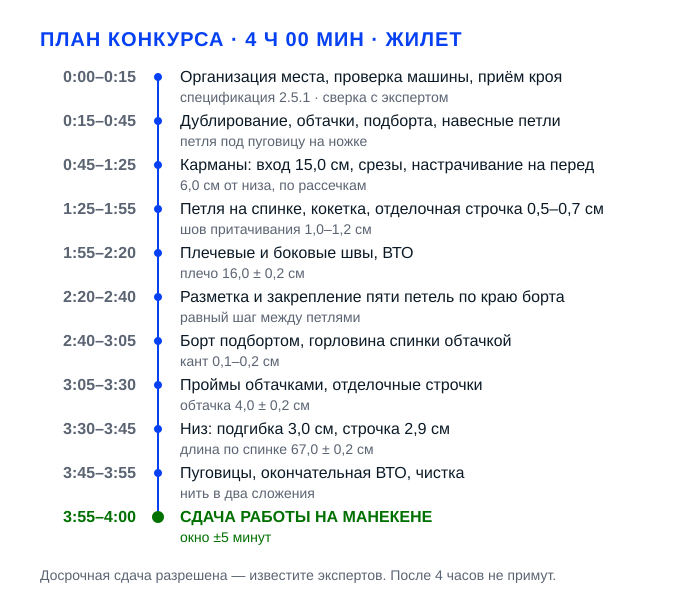
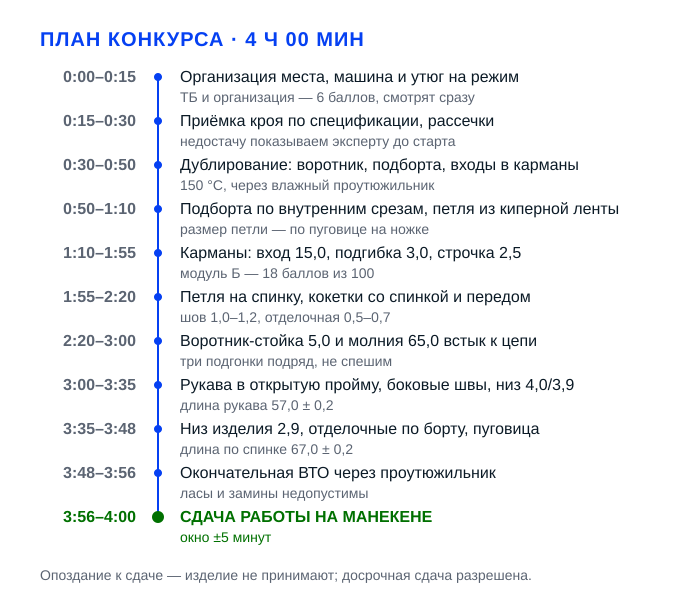
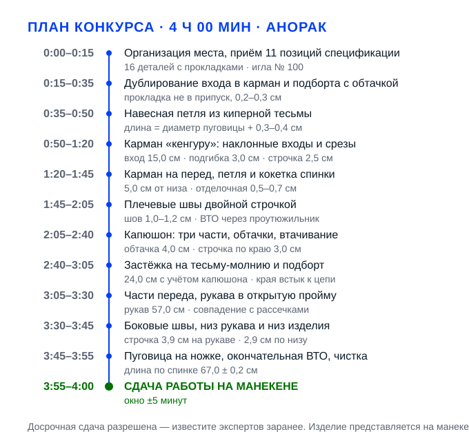

Портной (Р,О)
Задания ниже — официальные файлы «Абилимпикс» (источник: abilympics-russia.ru), разложенные по категориям. Решения написаны по тексту задания, регламенту и критериям оценки; в них указано, что именно проверяет эксперт.
Школьник
14–16 лет, базовый уровень заданияВыдержка из официального конкурсного задания: страницы, относящиеся к категории «Школьник» (стр. 5–6, 9–10 источника).
Пошаговое решение
Задание школьников — за 4 часа 00 минут изготовить женский жилет прямого силуэта из джинсовой ткани (хлопок, не стретч) без воротника, с углублёнными проймами, центральной застёжкой доверху на пять навесных петель из киперной тесьмы и пуговиц на ножке. На переде два накладных кармана с наклонным входом 15,0 см, спинка с притачной кокеткой, в шов которой вшита петля на пуговицу. Всё остальное — цифры: длина по середине спинки 67,0 ± 0,2 см, плечевой шов 16,0 ± 0,2 см, обтачки 4,0 ± 0,2 см, подгибка низа 3,0 ± 0,2 см, отделочная по низу 2,9 ± 0,1 см, отделочные по борту, горловине, проймам и кокетке 0,5–0,7 см, швы 1,0–1,2 см. Ошибка здесь чаще не в умении шить, а в последовательности: кто сначала дублирует и обрабатывает мелкие детали, тот успевает всё, а кто начинает с карманов — сдаёт недошитое. Ниже — пять задач в выгодном порядке, с цифрами из критериев и типичными потерями баллов.

Задача 1. Организовать рабочее место и принять кройМодуль А · 6 баллов: техника безопасности 3 + общее впечатление 3
Жилет из джинсы шьётся четыре часа, и первые пятнадцать минут решают, уложитесь ли вы в них. На старте нужно собрать рабочее место по зонам, вывести машину и утюг на рабочий режим, принять тринадцать позиций кроя по спецификации 2.5.1 и разметить всё, что потом будет измеряться линейкой: длину 67,0 см, подгибку 4,0 см, строчку 2,9 см, рассечки под карманы. Эти баллы не набираются в конце — их снимают по ходу, поэтому организация идёт первым пунктом, а не последним.
Действие 1.1. Подготовить место, машину и утюг
Шаг 1.1.1
Раскладываем стол на четыре зоны и держим их до конца конкурса: слева крой в папке или на лотке, в центре свободное поле под целую деталь переда, справа инструмент — мел, булавки в магнитной баночке, ножницы, вспарыватель, нитки, а у самого края машина. Утюжильный стол ставим так, чтобы к нему не надо было разворачиваться через всё рабочее место, а шнур лежал по полу вдоль стены и не попадал под ноги. Розетку и педаль проверяем до старта: педаль не должна уезжать, а вилка сидеть плотно.
За организацию места и технику безопасности дают 3 балла оценочного критерия группы А, и снимаются они не в конце, а в любой момент, когда эксперт видит обрезки на полу или утюг, стоящий подошвой на ткани. Порядок в зонах экономит не эстетику, а минуты: за четыре часа надо провести тринадцать деталей кроя через пять операций с утюгом, и каждая минута на поиск мела отнимает время у обработки пройм и борта.
Проверьте себя по трём признакам: на столе нет ничего, что не нужно для жилета; обрезки и высечки сразу уходят в коробку, а не лежат под машиной; педаль и шнур не пересекают проход. Свободного поля в центре хватает, чтобы положить деталь переда целиком, не сдвигая инструмент.
Типичная ошибка — свалить всё в одну кучу «чтобы под рукой было»: обтачки путаются с подбортами, прокладка прилипает к джинсе, и вы теряете 10–15 минут на разбор. Вторая — оставить утюг на ткани подошвой вниз: пролегание и лас на джинсе не убираются ни паром, ни отпариванием, а «отсутствие дефектов» — это 3 балла и общее впечатление.
Эксперт проходит по местам в первые минуты и фиксирует организацию до старта: наличие и исправность оборудования, чистоту пространства, отсутствие мусора под ногами. Дальше он смотрит, поддерживается ли порядок по ходу работы.
Шаг 1.1.2
Заправляем машину и делаем пробную строчку на обрезке той же джинсы, из которой скроен жилет: длина стежка 3 мм, игла для денима № 90–100, нитки № 40 или 50 в цвет ткани, натяжение выставлено так, чтобы узелок переплетения уходил внутрь ткани. Пробуем на двух слоях с прокладкой — именно так будет строчиться борт. Отдельно проверяем обмёточную машину на лоскуте: шов должен закрывать срез, не стягивая его в гармошку.
Джинса плотная, и на ней плохо настроенная машина даёт пропуски, петляние снизу и стянутый шов. А целостность строчек и отсутствие пропусков входят почти в каждый измеримый критерий: обтачки — 5 баллов, отделочная по низу — 5, соединение кокетки с петлёй — 5, обработка борта — 5. Пробная строчка стоит минуту и страхует от переделки готового борта, где перепарывание оставляет следы проколов.
На пробном лоскуте стежки ровные, одинаковой длины, узелок внутри, ткань не стянута, нитка не рвётся при растяжении шва. Если снизу видны петли — ослабьте верхнее натяжение или проверьте заправку нити в челнок.
Самая частая беда — сесть за машину с иглой № 70 и тонкой ниткой: на четырёх слоях джинсы игла гнётся, появляются пропуски, а на строчке по борту — спутанные стежки. Вторая ошибка — не проверить челнок после обрыва нити: обрывок остаётся под пластиной и стягивает следующие двадцать сантиметров строчки.
Эксперт смотрит на пробный лоскут и на первую машинную строчку: если с изнанки петляет или строчка гуляет, он отметит качество строчек по всем узлам изделия. Отдельно он проверяет обмётку срезов, потому что необработанный срез виден на изнанке, как только вывернешь пройму.
Шаг 1.1.3
Ставим утюг на режим «хлопок» с паром, температуру около 150–160 °C, рядом кладём проутюжильник из бязи и подушечку для ВТО плечевых швов. Проверяем на обрезке: пар должен выходить ровно, без капель, а подошва — не оставлять налёта. Отдельно готовим валик или колодку для разутюживания плеча и небольшой груз, под которым детали остывают после приклеивания прокладки.
Почти каждый узел жилета заканчивается ВТО: разутюжить шов притачивания кокетки, заутюжить обтачку, отпарить борт. Капли воды на джинсе дают пятна, а перегретая подошва — лас, и оба дефекта попадают в критерий отсутствия дефектов при изготовлении на 3 балла, причём исправить их на конкурсе нечем: пятно не смывается, лас не отпаривается.
Прогладьте обрезок через проутюжильник: ткань разглаживается, не блестит, следов воды нет. Проверьте, что резервуар наполнен и пар идёт ровно — доливать воду на середине работы некогда, а пустой резервуар означает, что вы гладите горячей подошвой.
Гладить джинсу без проутюжильника — верный способ получить лас на подборте и на переде. Вторая ошибка — включить утюг в последний момент: он должен выйти на режим до первой операции с прокладкой, иначе клей схватится неравномерно.
Эксперт оценивает не только изделие, но и работу утюгом: соблюдение режима, использование проутюжильника, отсутствие брошенного горячего утюга на столе. К утюжильному столу он подходит в середине работы, когда клеится прокладка, и смотрит, как вы держите утюг и куда ставите его между операциями.
Действие 1.2. Принять и проверить крой
Шаг 1.2.1
Раскладываем детали и сверяем со спецификацией по номерам: перед — 2, спинка — 1, кокетка — 1, карман — 2, подборт — 2, обтачка проймы спинки — 2, обтачка проймы переда — 2, обтачка горловины спинки — 1. Отдельно пересчитываем прокладки: подборт 2, обтачка проймы спинки 2, обтачка проймы переда 2, обтачка горловины 1, вход в карман 2. Парные детали сразу складываем парами лицом к лицу, чтобы они не разъехались по столу.
Спецификация 2.5.1 — единственный документ, по которому проверяют комплектность, и первая операция последовательности КЗ — именно проверка деталей кроя. Если не хватает обтачки проймы, вы узнаете об этом на этапе обработки пройм, когда перекроить уже нечем: замена идёт только через главного эксперта и только если причина признана уважительной.
Каждая позиция отмечена галочкой на листке, парные детали лежат парами, ни одна не осталась в папке. Сверьте количество прокладок с кроем: на вход в карман нужно две, по одной на каждый карман, и они легко теряются среди обтачек.
Пропустить прокладку входа в карман: без неё вход растянется при настрачивании, а «входы в карманы не растянуты, перекос по входу отсутствует» — это отдельный критерий группы Б. Вторая ошибка — принять детали, не проверив парность: два левых подборта внешне почти не отличаются, пока не начнёте обтачивать второй борт.
Эксперт сверяет комплектность по спецификации и отмечает, пользовался ли участник списком или работал на глаз, выкладывая детали наугад. Он же смотрит, лежат ли парные детали парами и не осталось ли прокладок в общей папке с кроем.
Шаг 1.2.2
Проверяем каждую деталь по долевой: нить основы должна идти вдоль детали, а не по косой, иначе жилет поведёт по боковому шву. Смотрим ткань против света — узелки, затяжки, разнооттеночность на парных деталях, следы кромки. Меловые линии и надсечки сличаем с техническим рисунком: вход в карман 15,0 см, рассечки на боковых срезах под верхний и нижний края кармана.
Джинса — ткань с явным направлением нити и кромкой, которая даёт разную усадку, и перекос по долевой виден именно как нарушенный баланс изделия, а это часть оценочного критерия на 3 балла. Разнооттеночность парных деталей на готовом жилете читается как дефект, и убрать её нельзя ничем: ни ВТО, ни подкрашиванием на конкурсе не занимаются.
Приложите деталь к краю стола: долевая параллельна кромке стола, боковой срез не уходит винтом. Парные детали одинаковы по оттенку при дневном свете, без заломов от булавок и без следов кромки на видных местах.
Игнорировать рассечки на боковых срезах: карман потом не сядет по ним, встанет с перекосом относительно борта, и симметричность пары будет потеряна. Вторая ошибка — колоть булавки поперёк линии строчки: на джинсе остаются проколы, которые не закрываются и видны на лице.
Эксперт обращает внимание на положение долевой и на совпадение контрольных знаков: это первый признак того, что участник понимает конструкцию, а не просто сшивает детали. Ещё он смотрит на парность деталей: если полочки выкроены с разным направлением долевой, изделие поведёт уже после первой стирки.
Шаг 1.2.3
Переносим контрольные знаки тонким мелом или сметочными стежками: линию борта, линию горловины, линию низа с припуском 4,0 см, места рассечек под карманы, середину спинки. Сразу намечаем линию подгибки низа на 4,0 см и линию отделочной строчки на 2,9 см от края, чтобы потом не мерить на весу. Отдельно записываем на листке порядок операций и время на каждую.
Параметры в критериях измеримые и жёсткие: длина по середине спинки 67,0 ± 0,2 см, ширина подгибки 3,0 ± 0,2 см, отделочная строчка по низу 2,9 ± 0,1 см. Такие допуски держатся только по заранее нанесённым линиям; разметка на глаз даёт разброс в полсантиметра и минус 5 баллов за строчку по низу.
Пройдите линейкой по нанесённым линиям: от среза до линии подгибки 4,0 см, от линии подгибки до линии строчки 2,9 см, длина по середине спинки от горловины до низа 67,0 см. Все знаки видны и не осыпались от переноски.
Намечать низ уже после обработки борта: подгибка идёт по перекошенной линии, боковые швы не совпадают со швами на подгибке, и критерий обработки низа теряет 3 балла. Вторая ошибка — экономить на разметке карманов, потому что «там всё равно 6 см от низа».
Эксперт смотрит на разметку как на рабочий документ: если линии нанесены и по ним идёт работа, видно, что участник управляет процессом, а не догоняет его. К середине конкурса он сверяет ваши линии с рассечками на боковых срезах, потому что именно по ним будет мерить карманы и петли.
Действие 1.3. Спланировать четыре часа
Шаг 1.3.1
Расписываем четыре часа по операциям и держим листок на виду: 15 минут на организацию и приём кроя, 30 на дублирование и обтачки, 40 на карманы, 30 на спинку с кокеткой и петлёй, 25 на плечевые и боковые швы, 25 на борт и горловину, 25 на проймы, 15 на низ и отделочные строчки, 10 на пуговицы и ВТО, 5 в резерв на сдачу. Время ставим по часам на столе, а не по телефону, чтобы не отвлекаться.
Задание одно и то же — жилет с пятью петлями, карманами, кокеткой и обтачками, и на него отведено ровно 4 часа 00 минут. Работа разваливается не на сложных узлах, а на порядке: если на карманы уйдёт полтора часа, борт и проймы останутся необработанными, а незаконченный узел не оценивается вовсе — баллы за него просто не существуют.
К 1:25 у вас должны быть настрочены карманы, к 2:20 — закрыты плечевые и боковые швы. Если отстаёте больше чем на десять минут, упрощайте: отказывайтесь от лишней примерки, но не от отделочных строчек, потому что они дают 5 и 3 балла.
Классика — застрять на карманах, вылизывая вход, и потом в спешке обрабатывать борт на живую: кант получается 0,4 см вместо 0,1–0,2, и 5 баллов за обработку борта уходят вместе с 5 за отделочную строчку по борту и горловине. Вторая ошибка — не оставить окна на ВТО и пуговицы: они всегда съедают больше времени, чем кажется.
Эксперт видит темп: кто идёт по плану, к третьему часу закрывает проймы, а кто-то всё ещё перекалывает карманы и торопится в конце. По темпу видно и другое: успевает ли участник оставить время на ВТО и надеть изделие на манекен без спешки.
Шаг 1.3.2
Раскладываем детали в порядке обработки, а не по номерам спецификации: сначала подборта и обтачки с прокладками, затем карманы, затем спинка с кокеткой, и только потом полотно переда и спинки для соединения. Каждую готовую пару складываем лицом внутрь и подписываем мелом на припуске: обтачка проймы переда, обтачка проймы спинки, обтачка горловины. Подпись ставим на припуске, а не на лицевой стороне детали.
Обтачки проймы переда и спинки выглядят почти одинаково, а обтачка горловины спинки отличается от них формой на сантиметр. Путаница стоит 5 баллов по критерию ширины обтачек и 4 по обработке горловины, потому что деталь просто не сядет по срезу, и её придётся подрезать, теряя ширину.
Возьмите обтачку и приложите к своему срезу: она должна повторить линию проймы без натяжения и без посадки. Подписи читаются, парные детали лежат вместе, прокладки не перепутаны с основными деталями и не лежат в общей стопке.
Сложить все обтачки в одну стопку «потом разберу»: к моменту обработки пройм они перепутаны, и участник подрезает лишнее, теряя припуск. Вторая ошибка — хранить прокладку вместе с кроем: она цепляется за джинсу и оставляет на ней волокна клея.
Эксперт оценивает рациональность: подписанные и разложенные по операциям детали — признак технологической грамотности, а не педантизма. Ему важно увидеть, что участник не ищет деталь по десять минут, а берёт следующую из своей зоны.
Шаг 1.3.3
До старта уточняем у главного эксперта, внесены ли в задание 30% изменений, и читаем протокол ознакомления: там может быть изменён способ обработки узла, ширина отделочной строчки, количество петель или вид фурнитуры. Если изменение есть, записываем его на листок с таймингом и подчёркиваем те цифры, которые поменялись. Спорные формулировки уточняем сразу, а не в процессе работы.
По разделу 2.6 КЗ эксперты обязаны изменить задание минимум на 30%, и эти изменения оформляются протоколом до начала чемпионата. Работать по старой редакции — значит выполнить узел не так, как его будут оценивать: например, обработать низ швом вподгибку, когда в актуализированном задании требуется обтачка.
У вас на столе лежит либо подтверждение, что изменений нет, либо выписка с изменёнными параметрами. Все цифры, на которые вы ориентируетесь, взяты из актуализированного задания, а не из памяти и не из пересказа соседа.
Пропустить ознакомление и узнать об изменении в середине работы: переделка готового узла на джинсе почти всегда видна. Вторая ошибка — додумать изменение самому и улучшить узел по своему вкусу: оценивают по КЗ, а не по вашей версии.
Эксперт проверяет, ознакомлен ли участник с актуализированным заданием, и оценивает узлы по действующей редакции, а не по той, что была в интернете: расхождение он трактует не в пользу участника. Поэтому протокол изменений читают до старта, а спорные параметры уточняют у главного эксперта.
Задача 2. Подготовить детали: дублирование, обтачки, подборта, петлиМодуль А · ширина обтачек 5 + обработка обтачек и подбортов 4 + петли 5
Пока перед и спинка лежат на столе, надо сделать всё мелкое: приклеить прокладку на девять деталей, обработать обтачки и подборта, изготовить шесть навесных петель из киперной тесьмы. Это самая недооценённая часть работы: именно здесь задаются ширина обтачки 4,0 ± 0,2 см, кант 0,1–0,2 см и размер петли под пуговицу на ножке. Ошибка на этом этапе не видна до самого конца, а исправлять её придётся на готовом изделии.
Действие 2.1. Продублировать детали
Шаг 2.1.1
Подбираем прокладку по плотности джинсы: тонкую клеевую — на обтачки проймы и горловины, чуть плотнее — под подборт, чтобы борт держал форму и не висел фалдой. Кладём прокладку клеевой стороной к изнанке детали, накрываем проутюжильником и прижимаем утюгом на 10–15 секунд, не водя им: движение сдвигает клей и даёт пузыри. После остывания проверяем край — прокладка не должна выступать за срез.
Дублирование задано первой же операцией последовательности: обтачки проймы переда и спинки, обтачка горловины спинки, подборт и припуск входа в карман. Критерий требует отсутствия отслоения клеевого материала и клея с лицевой стороны, а это 4 балла за обработку обтачек и подбортов плюс 5 за ширину обтачек: недублированная обтачка растягивается, и ширину уже не удержать.
Проведите пальцем по краю прокладки: перехода не чувствуется, пузырей нет, с лицевой стороны нет глянцевых пятен. Деталь после остывания держит форму, но не стоит коробом и не топорщится при сгибе. Если прокладка где-то отошла, приклейте её повторно, а не оставляйте до стачивания.
Водить утюгом по прокладке: клей схватывается волнами, и на лицевой стороне борта появляются бугры, которые не отпариваются. Вторая ошибка — приклеить прокладку на 0,5 см меньше детали: край обтачки обвисает, и кант по борту получается разной ширины.
Эксперт смотрит на дублированные детали на просвет и на ощупь: отслоение и клей на лице — прямой минус по критерию обработки обтачек и подбортов. Он же проверяет, не попала ли прокладка на припуск шва.
Шаг 2.1.2
Дублируем по порядку: два подборта, две обтачки проймы переда, две обтачки проймы спинки, одну обтачку горловины спинки и два припуска входа в карман. Припуск входа — полоска шириной 4–5 см по линии входа, её ставим с изнанки детали кармана так, чтобы клеевая не выходила за линию подгибки 3,0 см. Каждую деталь после приклеивания укладываем под груз до полного остывания.
Вход в карман обрабатывается швом в подгибку с открытым обмётанным срезом, подгибка 3,0 см, и без прокладки джинса на этом участке растянется под лапкой. Критерий группы Б прямо требует, чтобы входы в карманы не были растянуты и не имели перекоса, а строчка настрачивания 0,1–0,2 см на растянутом входе идёт волной.
Все девять прокладок из спецификации израсходованы, ни одна деталь не осталась без дублирования. Вход в карман на ощупь плотнее основного полотна, но не деревянный: деталь гнётся, а не ломается. Подрежьте прокладку, если она вышла за срез больше чем на миллиметр.
Забыть про припуск входа в карман — самая дорогая мелочь: карман растягивается, углы не держат прямоугольник, и 5 баллов за параметры обработки кармана теряются целиком. Вторая ошибка — дублировать карман целиком, тогда он стоит колом и не совпадает с силуэтом.
Эксперт проверяет, все ли детали из перечня дублирования обработаны: пропуск одной виден по поведению узла на готовом изделии, обтачка без прокладки растягивается уже к третьему часу работы. Он смотрит и края прокладки: если она не доходит до среза, на борту появится ступенька, заметная на манекене.
Шаг 2.1.3
После остывания осматриваем каждую деталь с лица и с изнанки: нет ли клеевых точек на лицевой стороне, не попала ли прокладка на припуск шва, совпадают ли срезы детали и прокладки. Если прокладка села с зазором, аккуратно подрезаем её по срезу, не трогая припуск. Детали складываем прокладкой внутрь, чтобы она не цеплялась за соседние, и помечаем мелом те, где прокладка легла с перекосом.
Клей на лицевой стороне — дефект, который на джинсе не смывается и не срезается: он попадает в критерий отсутствия дефектов при изготовлении на 3 балла и в критерий обработки обтачек на 4. Прокладка, зашедшая на припуск, утолщает шов, и при обтачивании борта игла уходит в сторону, а строчка получается с пропуском.
Разложите детали на столе при хорошем свете: поверхность ровная, без глянца и без апельсиновой корки. Срезы детали и прокладки совпадают с точностью до миллиметра, припуск свободен от клеевой. Прокладка не просвечивает через джинсу и не прощупывается на лице как отдельный слой.
Дублировать наспех, не дав детали остыть, и сразу стачивать: горячий клей ещё пластичен, и шов получается с посадкой. Вторая ошибка — срезать выступающую прокладку вместе с припуском, укоротив деталь на 3–5 мм, чего потом не хватит на шов.
Эксперт осматривает изнанку борта и пройм на готовом жилете: там сразу видно, аккуратно ли легла прокладка и не осталось ли клея. Отслоение он проверяет, отгибая край обтачки: он должен держаться вместе с тканью.
Действие 2.2. Обработать обтачки и подборта
Шаг 2.2.1
Обмётываем внутренние срезы обтачек проймы и обтачки горловины спинки на краеобметочной машине, захватывая срез полностью, без бороды и без стягивания. Ширина обмётки 0,3–0,4 см, нитки в цвет. Подборта обмётываем по внутреннему срезу, если он не обработан иначе по актуализированному заданию. Обмётку ведём от плечевого среза к боковому, чтобы не растянуть косой участок.
Критерий требует, чтобы строчки обмётывания были ровными и качественными, без пропусков и нарушения целостности, — это входит в 4 балла за обработку и соединение обтачки горловины и подбортов. Обмётка здесь не только от осыпания: она задаёт жёсткость внутреннему краю, и обтачка не выворачивается наружу при носке.
Срез закрыт полностью: при отгибании обмётки не видно бахромы. Строчка не стягивает край — деталь лежит плоско, без волны, а нитки не свисают обрывками по 2–3 см. Проверьте обмётку по всей длине: пропуск у плечевого среза виден как распущенный участок.
Обмётывать, натягивая край: обтачка проймы садится, и потом её не посадить по срезу без складок. Вторая ошибка — оставить обмётку шире припуска: на готовом изделии она выглядит как второй кант изнутри и мешает креплению.
Эксперт смотрит на обмётку при вывернутом изделии: ровность строчки и отсутствие пропусков — отдельный пункт в критериях, и он смотрит её на пройме и по внутреннему срезу обтачки. Если обмётка стянута в гармошку, он отметит это по всем обтачкам сразу, потому что дефект повторяется на каждой детали.
Шаг 2.2.2
Стачиваем обтачку проймы переда с обтачкой проймы спинки по плечевому шву, ширина шва 1,0 см, строчка по намеченной линии, без посадки. Шов разутюживаем через подушечку, чтобы он не отпечатался на лицевой стороне. Затем складываем обтачку с деталью по линии проймы и проверяем совпадение плечевого шва обтачки с плечевым швом изделия и только потом обмётываем внутренний срез.
Пройма обрабатывается обтачкой шириной 4,0 ± 0,2 см в готовом виде, и это 5 баллов за ширину обтачек плюс 3 за обработку пройм обтачками. Если плечевой шов обтачки не совпадёт с плечевым швом изделия, кант по пройме поедет именно на плече, а это самое заметное место на жилете.
Обтачка, сложенная с проймой, повторяет её линию без натяжения; плечевые швы совпадают с точностью до миллиметра. Ширина обтачки от шва до внутреннего края одинакова по всей длине и равна 4,0 см; проверьте в трёх точках — у плеча, по центру проймы и внизу.
Стачать обтачки с посадкой, чтобы село: на готовой пройме появляется слабина, и кант получается волнистым. Вторая ошибка — разутюжить шов без подушечки: на лицевой стороне остаётся отпечаток толщиной в шов, который не убирается.
Эксперт прикладывает линейку к обтачке на готовом изделии: 4,0 ± 0,2 см — цифра, которую он проверяет в первую очередь, потому что она вынесена в отдельный критерий на 5 баллов. Замер он делает на трёх участках — у плеча, по центру и у бокового шва, — и сравнивает их между собой.
Шаг 2.2.3
Заутюживаем обтачки и подборт по линии канта: складываем деталь по линии шва обтачивания, выпуская кант из основной детали на 0,1–0,2 см, и фиксируем сгиб утюгом через проутюжильник. Кант выпускаем именно из основной детали, а не из обтачки, и проверяем ширину по всей длине — от горловины до низа борта. Ширину контролируем линейкой каждые 10 см: на закруглении горловины кант склонен расти.
Критерий обработки борта прямо требует равномерности канта шириной 0,1–0,2 см и канта из основных деталей, и это 5 баллов. Кант из обтачки — грубая ошибка: на лице борта видна полоска прокладочной ткани, а на пройме светлая полоса, которая не убирается ни ВТО, ни подкрашиванием.
Переверните деталь на лицо: по краю идёт ровная полоска основной ткани шириной около одного-двух миллиметров, одинаковая по всей длине. На изнанке обтачка не выглядывает за линию сгиба. Проверьте кант на горловине, где он чаще всего исчезает, и у низа, где он растягивается.
Выпустить кант 0,4–0,5 см, чтобы наверняка: борт становится толстым, отделочная строчка 0,5–0,7 см идёт по краю канта и съедает его. Вторая ошибка — заутюжить кант с растяжением по косому участку горловины, и тогда кант исчезает на плече.
Эксперт измеряет кант у горловины и у низа, а не в одном месте: равномерность для него важнее средней величины. Кант из обтачки он отличает по цвету и ткани и снижает балл даже при идеальной ширине.
Действие 2.3. Изготовить навесные петли из киперной тесьмы
Шаг 2.3.1
Считаем длину навесной петли под конкретную пуговицу на ножке: диаметр пуговицы плюс толщина борта в два слоя плюс 0,2–0,3 см на свободное прохождение. Отрезаем киперную тесьму с запасом 3 см на закрепки, складываем вдвое по длине и стачиваем швом 0,5 см, отступив от сгиба. Готовим пять петель для борта и одну для середины спинки, подписывая каждую мелом на припуске закрепки.
Критерий требует, чтобы размер петли соответствовал размеру пуговицы, а крепление было надёжным: это 5 баллов за обработку петель и ещё 5 за соединение кокетки и петли со спинкой. Петля на глаз либо не застёгивается через толстый борт из джинсы, либо болтается, и обе крайности эксперт видит сразу, потому что застёгивает жилет сам.
Проденьте пуговицу в готовую петлю: она проходит с небольшим усилием, но не требует пропихивания и не выпадает при встряхивании. Все шесть петель одинаковой длины — разница не больше двух миллиметров.
Сделать петлю по диаметру пуговицы, забыв про толщину борта: жилет не застёгивается, и участник начинает растягивать петлю, деформируя тесьму. Вторая ошибка — разная длина петель: на готовом изделии это читается как перекос борта.
Эксперт пробует застегнуть жилет на манекене: соответствие петли пуговице проверяется руками, а не линейкой, и слишком тугая петля для него такой же минус, как и слишком свободная, болтающаяся. Он смотрит и на закрепку: именно она держит петлю, когда жилет застёгивают и расстёгивают десятки раз.
Шаг 2.3.2
Выворачиваем тесьму налицо, выправляем углы деревянной палочкой, не растягивая, и приутюживаем так, чтобы шов лёг на ребро или на одну сторону. Складываем петлю пополам, совмещая концы, и прокладываем закрепку поперёк концов в 0,3–0,5 см от среза двумя-тремя строчками. Концы тесьмы подрезаем, оставляя 0,5 см, чтобы закрепка не разошлась. Закрепку проходим вперёд-назад, а не одной строчкой.
Критерий отдельно упоминает симметричность сторон петли и выполнение закрепок по ТУ, и это часть 5 баллов за петли. Несимметричная петля на готовом борту видна как перекошенная застёжка, даже если все пять петель стоят точно по разметке. Крепление проверяют рукой, поэтому закрепка должна держать усилие, а не только держать форму.
Стороны петли одинаковой ширины, сгиб ровный, закрепка плотная и не осыпается. Петля держит форму, если поставить её на стол: она не падает и не складывается пополам под собственным весом. Сгиб не перекошен, а ширина петли по всей длине одинаковая, без сужения у закрепки.
Вывернуть тесьму, не выправив угол, и приутюжить со сгибом внутри: петля получается вдвое тоньше и рвётся по закрепке. Вторая ошибка — закрепить концы одной строчкой без обратного хода: на примерке петля выдёргивается из шва.
Эксперт рассматривает петли вблизи: симметричность и закрепки — то, что он проверяет на каждой из шести, и сравнивает петли между собой. Одна короче остальных — минус по всему критерию, поэтому петли делают партией, по одной длине тесьмы, а не по одной.
Шаг 2.3.3
Раскладываем шесть петель в ряд и сверяем: длина, ширина, цвет ниток, качество закрепки. Отмечаем мелом на каждой петле середину сгиба — по этой метке потом совмещаем петлю с линией разметки на борте. Петли для борта держим отдельно от петли для спинки: у неё другая ориентация. Разницу в длине больше двух миллиметров видно сразу, поэтому такую петлю переделываем, пока она не пристрочена.
Петля на спинке застёгивается на пуговицу в шве притачивания кокетки и работает в другой плоскости, чем петли борта, поэтому её нельзя делать по бортовому шаблону. Пять баллов за петли ставятся за одинаковый размер и одинаковое расстояние между ними, то есть за партию, а не за одну удачную петлю.
Все шесть петель одинаковы при наложении друг на друга, закрепки на одном уровне. Петля для спинки помечена отдельно и не перепутана с бортовыми, метки середины стоят у всех. Проверьте цвет ниток при дневном свете: партия тесьмы может отличаться по оттенку.
Сделать петли разной длины по ходу: к пятой пуговице застёжка идёт волной, и участник начинает перешивать петли в последние двадцать минут. Вторая ошибка — потерять одну петлю и выкроить новую из обрезка с другим направлением тесьмы.
Эксперт проверяет петли как партию: одинаковость размера и шага — отдельный измеримый критерий в списке, и он смотрит именно на разброс, а не на средний размер. Ещё он тянет петлю за сгиб: закрепка не должна поддаваться, иначе на примерке петля разойдётся.
Задача 3. Обработать карманы и настрочить их на передМодуль Б · параметры обработки кармана 5 + соединение с передом 5 + параметры соединения 5 + внешний вид 3
Накладные карманы с наклонным входом — самый заметный узел на этом жилете и самый измеримый: вход 15,0 см, подгибка 3,0 см, отделочная строчка 2,5 см, размеры 12,0 по верхнему краю, 21,0 по нижнему и переднему, 9,0 по боковому, 6,0 см от низа изделия, шов настрачивания 0,1–0,2 см. Здесь почти невозможно спрятать ошибку: карманы стоят на самом видном месте, их два, и они сравниваются друг с другом. Поэтому все восемь цифр проверяются линейкой, а не глазом, и до настрачивания, а не после.
Действие 3.1. Обработать вход в карман
Шаг 3.1.1
На дублированном припуске кармана намечаем линию входа длиной 15,0 см под наклоном по техническому рисунку: от верхнего угла вход идёт вниз к боковому краю. Наклон снимаем с лекала или с детали переда — угол должен быть одинаковым на обоих карманах, поэтому лекало переворачиваем, а не подгоняем на глаз. Переносим линию на лицевую сторону тонким мелом и проверяем линейкой: ровно 15,0 см, без плюс-минус полсантиметра.
Критерий группы Б требует накладные карманы с наклонным входом длиной 15,0 см и шов настрачивания 0,1–0,2 см, а наклон входа — часть технического рисунка, по которому оценивают соответствие эскизу. Если вход короче пятнадцати сантиметров, рука в карман не проходит, и это видно на манекене без всякой линейки.
Линейка по линии входа даёт 15,0 см на обоих карманах, углы наклона совпадают при наложении деталей друг на друга. Линия видна, но не жирная: толстый мел уводит строчку на два миллиметра, а шов настрачивания здесь всего 0,1–0,2 см.
Размечать вход по краю детали, не проверяя наклон: на готовом жилете карманы смотрят в разные стороны, и симметричность, а это отдельный критерий, потеряна. Вторая ошибка — наметить 14 см вместо 15 и обнаружить это только на манекене.
Эксперт прикладывает лекало или линейку к входу в карман: длина 15,0 см и наклон — первые проверяемые параметры группы Б. Он смотрит оба кармана подряд: наклон входа проверяется только в паре.
Шаг 3.1.2
Обмётываем срез припуска входа, затем застрачиваем его швом в подгибку с открытым обмётанным срезом: подгибаем на 3,0 см в готовом виде, примётываем или фиксируем булавками вдоль линии и прокладываем строчку на 0,1 см от сгиба. Строчку ведём от бокового края к верхнему углу, не натягивая ткань. В конце подрезаем лишнее, оставляя 0,7–1,0 см под обмёткой, иначе на угле получается утолщение.
Подгибка входа 3,0 см в готовом виде — прямое требование описания модели и критерия параметров обработки кармана. Этот шов держит форму входа: без подгибки край растягивается под рукой, карман теряет прямоугольник, и вместе с ним уходят баллы за внешний вид накладных карманов.
Ширина подгибки от сгиба до строчки 3,0 см по всей длине, строчка на 0,1 см от сгиба, обмётанный срез полностью закрыт подгибкой. Вход не тянет, край лежит ровно и не закручивается внутрь. Измерьте ширину в начале, середине и конце входа: у бокового шва подгибка склонна сужаться.
Сделать подгибку 2,0 см, чтобы было аккуратнее: параметр не сходится, и 5 баллов за параметры обработки кармана уходят. Вторая ошибка — проложить строчку на 0,5 см от сгиба, тогда подгибка отваливается, а изнутри видна обмётка.
Эксперт измеряет подгибку входа линейкой на готовом кармане: 3,0 см — измеримый параметр, и он смотрит его на обоих карманах. Внутреннюю сторону он тоже смотрит: обмётка не должна выглядывать из-под подгибки.
Шаг 3.1.3
Прокладываем отделочную строчку по входу в карман на 2,5 см от края входа, параллельно ему, длина стежка 3 мм, закрепки в начале и в конце. Строчку ведём по лицевой стороне кармана, припосаживая нижний слой на миллиметр, чтобы не появилась слабина. Перед строчкой приутюживаем вход через проутюжильник, чтобы он не поехал под лапкой. Параллельность проверяем линейкой, а не на глаз: на наклонном входе отклонение в два миллиметра уже читается как перекос.
Отделочная строчка по входу 2,5 см — обязательный элемент модели и отдельный пункт критерия параметров кармана. Она же фиксирует подгибку и не даёт входу растянуться в носке, поэтому её отсутствие видно и на манекене, и на ощупь, когда эксперт берётся за край кармана.
Расстояние от края входа до строчки 2,5 см по всей длине, строчка параллельна краю, закрепки на месте, нитка не петляет. С изнанки строчка не захватила основную деталь кармана больше чем на миллиметр.
Проложить строчку на 2,5 см, но не параллельно краю: на конце вход сужается, и карман выглядит перекошенным при идеальной подгибке. Вторая ошибка — строчить без приутюживания: подгибка уходит, и на лице появляется волна.
Эксперт проверяет и наличие строчки, и её ширину: 2,5 см — цифра из описания модели, и отклонение больше двух миллиметров он отмечает. Отдельно он смотрит, не пересекает ли строчка шов подгибки: пересечение видно сразу.
Действие 3.2. Обработать срезы и выдержать форму кармана
Шаг 3.2.1
Обрабатываем верхний, боковой, нижний и передний срезы кармана швом в подгибку с закрытым срезом или обмёткой с подгибкой, как задано в актуализированном задании. Ориентируемся на размеры готового кармана: 12,0 см по верхнему краю, 21,0 см по нижнему, 21,0 см по переднему, 9,0 см по боковому. Припуски заутюживаем на 1,0 см, углы выправляем так, чтобы получился прямой угол, а не скругление.
Размеры кармана из описания модели — это то, что эксперт измеряет на готовом изделии, и критерий группы Б требует прямоугольной формы углов. Если обработать срезы на глаз, карман из трапеции превращается в прямоугольник, и симметричность пары теряется вместе с 5 баллами за соединение карманов с передом.
Готовый карман: 12,0 см по верхнему краю, 21,0 см по нижнему, 21,0 см по переднему, 9,0 см по боковому, все четыре угла прямые. Второй карман совпадает с первым при наложении лицом к лицу. Углы проверяйте угольником или сложенным листом бумаги: на джинсе прямой угол руками не отличить от 88 градусов.
Заутюжить припуски разной ширины: углы гуляют, и после настрачивания карман стягивается в одном направлении. Вторая ошибка — обметать срез, не подогнув его: на лице видна обмётка, а для накладного кармана это недопустимо.
Эксперт измеряет карман по четырём сторонам и проверяет углы: прямоугольная форма — отдельный пункт критерия, а не украшение. Прямоугольность углов он проверяет на обоих карманах и сравнивает их между собой.
Шаг 3.2.2
Заутюживаем карман по шаблону: вырезаем из картона лекало 12,0 × 21,0 × 21,0 × 9,0 см, вкладываем внутрь и приутюживаем припуски по всем сторонам, снимая лекало только после остывания. Так форма фиксируется до настрачивания, и углы не разъезжаются под лапкой. Верхние углы дополнительно закрепляем по сгибу, чтобы они не расходились. Лекало вырезаем по размерам готового кармана, а не по срезам детали: в срезах уже заложены припуски.
Карман — трапеция с наклонным входом, и удержать её форму без шаблона почти невозможно: джинса жёсткая, припуски пружинят и тянут угол внутрь. Ровная геометрия нужна и для критерия внешнего вида карманов, и для симметричности пары, которую оценивают вместе с настрачиванием.
Карман лежит на столе плоско, все четыре угла прямые, размеры держатся без булавок. Второй карман повторяет первый с точностью до двух миллиметров при наложении. Перепроверьте карман через пять минут, когда он остыл: тёплая джинса держит форму иначе, чем холодная.
Приутюживать без шаблона: один угол получается 88 градусов, другой 95, и после настрачивания карман смотрит в сторону. Вторая ошибка — снять лекало горячим, пока припуски не остыли и не зафиксировали форму.
Эксперт оценивает форму кармана на манекене и при наложении двух карманов друг на друга: пара должна читаться как пара. Разную форму пары он отметит как нарушение симметричности, а не как мелочь.
Шаг 3.2.3
Кладём оба кармана рядом, входом в одну сторону, и сверяем: длина входа, наклон, высота верхнего края, ширина бокового. Если один карман погулял, исправляем сейчас, пока он не настрочен: переутюживаем по шаблону или подрезаем припуск. Отмечаем мелом середину верхнего края кармана — по ней будем совмещать с рассечкой на переде. Расхождение записываем мелом на припуске того кармана, который придётся подтянуть.
Критерий симметричности накладных карманов оценивается по паре, а настроченные карманы исправить без следов невозможно: на джинсе остаются проколы от строчки, которая идёт в 0,1–0,2 см от края. Пара, снятая с шаблона, — самая дешёвая страховка на этом этапе работы.
При наложении карманов друг на друга срезы совпадают по всем четырём сторонам, наклон входа одинаковый. Метки середины верхнего края стоят на одной линии, если положить карманы рядом. Наложите карманы друг на друга и посмотрите на просвет: разница в наклоне видна как расходящаяся полоса.
Настрачивать карман, не сверив с парой: на готовом переде разница в пять миллиметров по высоте читается как небрежность. Вторая ошибка — подрезать лишнее на одном кармане, забыв про второй, и получить пару разной ширины.
Эксперт сравнивает карманы между собой на манекене, а не с линейкой: глазами он замечает разницу быстрее, чем измерит. Он же смотрит, не осталось ли на карманах следов мела и проколов от булавок.
Действие 3.3. Настрочить карманы на детали переда
Шаг 3.3.1
Укладываем карман на деталь переда так, чтобы верхний и нижний края совпали с рассечками на боковом срезе, а сам карман шёл параллельно краю борта. Нижний край кармана должен оказаться в 6,0 см от низа жилета. Прикалываем булавками поперёк линии настрачивания, ставим меловые метки у всех четырёх углов и проверяем расстояние от борта сверху и снизу.
Последовательность КЗ требует совместить верхние и нижние края карманов с рассечками на боковых срезах, а описание модели задаёт 6,0 см от низа до нижнего края кармана. Рассечки — единственная гарантия, что карман встанет на своё место без примерки, а расстояние от борта задаёт направление наклона.
Нижний край кармана отстоит от низа на 6,0 см, верхний и нижний края совпадают с рассечками, боковой край кармана параллелен краю борта. Расстояние от борта до кармана одинаково сверху и снизу. Сверьте расстояние от бокового шва до кармана на обоих боках: оно должно совпадать с точностью до двух миллиметров.
Приколоть карман по глазу, игнорируя рассечки: карман встаёт на сантиметр выше или ниже, и на манекене пара смотрится перекошенной, хотя каждый карман по отдельности ровный. Вторая ошибка — не проверить 6,0 см от низа: после обработки низа карман поднимется.
Эксперт проверяет положение карманов от низа и от борта: 6,0 см и параллельность — измеримые параметры группы Б. Ещё он смотрит, не встал ли карман выше рассечки: тогда верхний край не совпадёт с контрольной меткой.
Шаг 3.3.2
Настрачиваем карман по размеченному контуру швом шириной 0,1–0,2 см, начиная от верхнего угла входа: проходим передний край, низ, боковой край и возвращаемся к входу. В углах приподнимаем лапку, поворачиваем деталь с опущенной иглой и делаем закрепку по ТУ. Строчку ведём на машине с отрегулированным натяжением, чтобы с изнанки не тянуло и не петляло.
Шов настрачивания 0,1–0,2 см — обязательный параметр: он держит край кармана и одновременно служит отделкой. Целостность строчки, отсутствие пропусков и закрепки по ТУ входят в 5 баллов за соединение накладных карманов с передом, поэтому строчка здесь оценивается строже, чем где-либо ещё.
Строчка идёт в одном-двух миллиметрах от края по всему контуру, без пропусков и обрывов, закрепки в углах и на входе. С изнанки нет петляния и стягивания, нитки обрезаны под корень. Проведите по строчке ногтем: она должна быть плотной, без провисания нити между стежками.
Строчить на 0,4 см от края: карман отходит и на манекене топорщится, а шов не попадает в параметр. Вторая ошибка — не сделать закрепку на входе: верхний угол кармана распускается при первой же примерке на манекене.
Эксперт смотрит на строчку настрачивания вблизи: 0,1–0,2 см и отсутствие пропусков — измеримый критерий, который он проверяет на обоих карманах. Пропуск стежка на видном месте он отмечает отдельно, даже если строчка в целом ровная.
Шаг 3.3.3
После настрачивания проутюживаем карманы через проутюжильник, не растягивая вход, и проверяем посадку: карман должен лежать плоско, без слабины и без натяжения полотна переда. Сличаем пару по высоте и наклону, проверяем, что карман не съел рассечку. Если появилась волна, отпариваем с увлажнением и даём остыть под грузом. Груз снимаем только после полного остывания, иначе припуски снова отойдут.
Критерий прямо говорит: входы в карманы не растянуты, перекос по входу отсутствует, края ровные, углы прямоугольные. ВТО после настрачивания — единственный способ убрать посадку, которая возникает от разницы слоёв: карман в два слоя плюс джинса переда, и машинная лапка проходит по этому бутерброду неровно.
Проведите рукой по карману: поверхность ровная, край не отходит, вход не растянут гармошкой. Оба кармана на одной высоте, наклон входа одинаковый, расстояние от низа — 6,0 см на обоих. Заодно перемерьте расстояние от низа до кармана: после ВТО оно могло измениться на два-три миллиметра.
Гладить карман с сильным нажимом: вход растягивается, и это уже не исправить, потому что подгибка 3,0 см деформирована. Вторая ошибка — оставить посадку, рассчитывая, что разгладится само: на манекене она видна как волна вдоль строчки.
Эксперт проверяет карманы на манекене и на просвет: перекос по входу заметен именно на просвет, когда изделие висит перед окном. Он слегка оттягивает край кармана и смотрит, возвращается ли форма: растянутый вход не возвращается.
Задача 4. Собрать спинку и соединить изделие по плечам и бокамМодуль А · кокетка и петля 5 + отделочная по кокетке 3 + плечевой шов 4 + плечевые 3 + боковые 3
Спинка — узел, где видна вся точность работы: притачная кокетка, навесная петля посередине шва, отделочная строчка 0,5–0,7 см и шов притачивания 1,0–1,2 см одинаковой ширины по всей длине. Дальше спинка соединяется с передом по плечам (16,0 ± 0,2 см) и по бокам, и любая посадка, допущенная здесь, уже не исправляется: она проявится в балансе изделия на манекене. Поэтому швы сначала приутюживаются, потом проверяются на манекене, и только потом идёт борт.
Действие 4.1. Настрочить навесную петлю на середину спинки
Шаг 4.1.1
Намечаем середину спинки по линии притачивания кокетки и прикалываем петлю так, чтобы сгиб смотрел вниз, а концы заходили под кокетку на 1,0–1,5 см. Настрачиваем петлю по намеченной середине двумя строчками или закрепкой по ТУ, отступив от сгиба так, чтобы пуговица потом встала по центру. Проверяем, что петля не смещена относительно середины спинки ни на миллиметр, иначе кокетка закроет её косо.
Месторасположение петли должно соответствовать техническому рисунку, крепление — быть надёжным, размер — соответствовать пуговице: это 5 баллов за соединение кокетки и петли со спинкой. Петля на спинке застёгивается на пуговицу в шве кокетки, и её смещение сразу ломает симметрию спинки, которую видно на манекене сзади.
Петля стоит строго по середине спинки: от боковых срезов до неё одинаковое расстояние. Концы петли полностью закрыты припуском, закрепка держит, сгиб смотрит вниз, а не вверх. Проверьте, что концы петли не выглядывают из-под кокетки после её притачивания.
Настрочить петлю после кокетки, не заведя концы под шов: концы видны на лицевой стороне и осыпаются, а крепление перестаёт быть надёжным. Вторая ошибка — поставить петлю на сантиметр в сторону от середины: на манекене спинка читается перекошенной.
Эксперт проверяет положение петли от середины спинки и надёжность крепления — потянет за петлю рукой и посмотрит, не пошла ли ткань. Он смотрит узел и с изнанки: закрепка не должна колоть и не должна быть видна с лица.
Шаг 4.1.2
До притачивания кокетки проверяем узел целиком: прикладываем кокетку по линии шва и смотрим, попадает ли петля в её середину, не окажется ли она пристроченной к спинке. Отмечаем на кокетке середину мелом, чтобы совместить с меткой на спинке при стачивании. Если петля вышла длиннее нужного, укорачиваем её сейчас, а не после сборки. Метки ставим тонким мелом и на кокетке, и на спинке, чтобы совместить их при стачивании.
Петля, пристроченная к спинке вместе с кокеткой, перестаёт быть петлёй, и 5 баллов уходят целиком, вместе с критерием ширины шва. Проверка до стачивания занимает полминуты и страхует от переделки, которая на джинсе оставляет проколы на видном месте спинки.
Петля свободно лежит поверх спинки, кокетка закрывает её концы, середина кокетки совпадает с меткой на спинке. При застёгивании на пуговицу петля не тянет кокетку в сторону. Наметка по линии шва помогает увидеть, куда именно ляжет строчка, до включения машины.
Пропустить эту проверку и стачать кокетку прямо по петле: строчка проходит через тесьму, и петля намертво пришита к спинке. Вторая ошибка — обрезать концы петли до стачивания кокетки: закрепка остаётся без запаса и расходится.
Эксперт обращает внимание не только на готовый узел, но и на аккуратность его сборки: пристроченная петля видна сразу, стоит расстегнуть пуговицу. Пристроченную петлю он видит при расстёгнутой пуговице, и проверяет это сразу.
Действие 4.2. Соединить кокетку со спинкой
Шаг 4.2.1
Накладываем кокетку на спинку лицевой стороной к лицевой, совмещая середины и боковые срезы, и стачиваем швом 1,0–1,2 см. Строчку ведём от одного бокового среза к другому, следя, чтобы петля не попала под иглу и не пристрочилась к спинке. Срезы шва обмётываем вместе, а сам шов заутюживаем в сторону кокетки или разутюживаем — так, как задано в актуализированном задании.
Ширина шва притачивания кокетки 1,0–1,2 см, одинаковая по всей длине, — это часть 5 баллов за соединение кокетки и петли со спинкой. Одинаковость важна ещё и потому, что отделочная строчка 0,5–0,7 см ляжет параллельно шву, и разница в его ширине станет заметной на расстоянии.
Ширина шва 1,0–1,2 см по всей длине, срезы обмётаны без пропусков, петля не пристрочена, середина кокетки совпадает с серединой спинки. После ВТО шов лежит плоско, без волны и без посадки. Обмётку посмотрите на просвет: пропуск у бокового среза виден как просвет между стежками.
Пристрочить петлю к спинке вместе с кокеткой: петля перестаёт работать, и 5 баллов уходят целиком. Вторая ошибка — стачать с посадкой кокетки: на спинке появляется слабина, а отделочная строчка идёт волной, за что снимают ещё 3 балла.
Эксперт измеряет шов притачивания в двух-трёх местах: одинаковая ширина 1,0–1,2 см — обязательное условие критерия. Он смотрит и то, как сходятся середины: смещение кокетки на три миллиметра заметно сразу.
Шаг 4.2.2
Прокладываем отделочную строчку по шву притачивания кокетки шириной 0,5–0,7 см, по лицевой стороне, параллельно шву, с закрепками в начале и в конце. Строчку ведём от бокового среза, припосаживая нижний слой на полмиллиметра, чтобы шов не тянул. Перед строчкой приутюживаем шов, чтобы он не сместился под лапкой. В конце закрепляем строчку обратным ходом на двух-трёх стежках, не оставляя длинных концов нити.
Отделочные строчки 0,5–0,7 см по шву притачивания кокетки заданы описанием модели, и за них дают 3 балла отдельным критерием, включая закрепки по ТУ. Кроме того, эта строчка фиксирует припуск и не даёт ему выворачиваться в носке, а на джинсе припуск без фиксации топорщится довольно быстро.
Расстояние от шва до строчки 0,5–0,7 см по всей длине, строчка параллельна шву, без пропусков и обрывов, закрепки на месте. С изнанки припуск не захвачен строчкой, а на лице нет диагональных заломов. Ширину мерьте от шва, а не от края кокетки, иначе получится другая цифра.
Строчить на 1,0 см от шва: параметр не сходится, и 3 балла теряются. Вторая ошибка — не приутюжить шов: строчка идёт по волне, а на спинке это самое заметное место после горловины. Третья ошибка — вести строчку от середины к краям: на конце образуется наплыв ткани.
Эксперт измеряет ширину отделочной строчки и смотрит на её ровность: 0,5–0,7 см — измеримый критерий, он проверяет его на кокетке и на переде. Отделочную строчку он смотрит с двух сторон: с изнанки не должно быть захвата припуска.
Шаг 4.2.3
Отпариваем кокетку и шов через проутюжильник с увлажнением, затем даём детали остыть под грузом или на подушечке, чтобы шов не отпечатался на лицевой стороне. Проверяем, не повело ли спинку: линия середины должна остаться прямой. Если по шву появилась посадка, оттягиваем её утюгом с паром, пока ткань влажная. Проглаживаем от середины к краям, а не наоборот, чтобы не растянуть шов.
Качество окончательной ВТО жилета — отдельный критерий группы Б: отсутствие пролегания швов, лас, опалов, складок и заминов. Пролегание шва притачивания кокетки на джинсе видно как светлая полоса поперёк спинки, и убрать её на готовом изделии уже нельзя никакими средствами.
Спинка лежит плоско, на лицевой стороне нет отпечатка шва и лас, линия середины прямая. Кокетка не стоит коробом и не отстаёт от спинки по шву. Посмотрите на просвет: отпечатавшийся шов виден как более светлая полоса поперёк спинки.
Гладить шов без проутюжильника и с сильным нажимом: на джинсе остаётся лас, который не убирается. Вторая ошибка — остужать деталь в сложенном виде: образуется замин по сгибу, и его видно на манекене. Третья ошибка — гладить спинку целиком, вместе с ещё не обработанными срезами.
Эксперт осматривает спинку на манекене при боковом свете: пролегание швов видно именно так, а не при прямом. Он проводит рукой по шву: пролегание чувствуется пальцами раньше, чем видно глазом.
Действие 4.3. Стачать плечевые и боковые швы
Шаг 4.3.1
Складываем перед и спинку лицевыми сторонами, совмещаем плечевые срезы по контрольным точкам горловины и проймы, скалываем и стачиваем швом 1,0–1,2 см. Длина плечевого шва в готовом виде 16,0 ± 0,2 см, поэтому перед стачиванием проверяем её по срезам и не даём посадки. Срезы обмётываем вместе, шов разутюживаем на подушечке. Перед стачиванием примётываем плечо или скалываем через каждые три сантиметра, чтобы слои не разъехались под лапкой.
Длина плечевого шва 16,0 ± 0,2 см — измеримый критерий на 4 балла, а обработка плечевых швов — ещё 3 балла за целостность строчек, одинаковую ширину, качество обмётки и отсутствие разнонаправленности. Плечо задаёт посадку изделия: если оно короче, пройма тянет, если длиннее — горловина уезжает на плечо.
Измерьте плечевой шов от горловины до проймы: 16,0 см плюс-минус два миллиметра на обоих плечах. Швы симметричны, обмётка ровная, после ВТО шов плоский и не тянет пройму. Сравните длину плеча с проймой: при верной посадке пройма не тянет вверх.
Стачать с посадкой переда: плечо укорачивается до 15,2 см, и 4 балла уходят, а горловина садится с перекосом. Вторая ошибка — разутюжить плечо без подушечки: на лицевой стороне остаётся отпечаток шва, который не отпаривается.
Эксперт измеряет оба плеча и сравнивает их между собой: симметричность — часть критерия, а не придирка. Он смотрит, не легла ли обмётка на лицевую сторону у горловины, где припуск узкий.
Шаг 4.3.2
Складываем детали лицевыми сторонами, совмещаем боковые срезы по рассечкам, в том числе по тем, что задавали положение карманов, скалываем поперёк и стачиваем швом 1,0–1,2 см одной строчкой от проймы до низа. Срезы обмётываем вместе, шов разутюживаем. Проверяем, что карманы после соединения остались на одной высоте. Скалывать начинаем от рассечек, а не от края: так совпадение контрольных точек не уходит.
Обработка боковых швов — 3 балла за целостность строчки, одинаковую ширину 1,0–1,2 см, качество обмётки и отсутствие разнонаправленности. Боковой шов сводит перед и спинку, и любая посадка по нему сразу видна как перекос всего силуэта, а баланс изделия входит в оценочный критерий.
Ширина шва 1,0–1,2 см по всей длине, шов симметричен на левом и правом боку, обмётка без пропусков. Боковой шов при отвесе идёт вертикально, не уходит вперёд или назад, карманы остались на одной линии.
Стачать бока с посадкой одной из деталей: силуэт закручивается, и на манекене баланс изделия нарушен, а это оценочный критерий на 3 балла. Вторая ошибка — обмётывать срезы до стачивания: шов получается толще и грубее, а на джинсе это заметно.
Эксперт смотрит на боковые швы с двух сторон и проверяет, не крутит ли изделие: на джинсе перекос виден по направлению шва. Он смотрит боковой шов на манекене сверху вниз: перекос проявляется как уход шва вперёд.
Шаг 4.3.3
Выворачиваем жилет налицо и проверяем посадку до обработки борта: плечи на месте, проймы не тянут, низ идёт ровной линией, карманы симметричны. Отвешиваем изделие на манекен или на плечики на две-три минуты: под собственным весом джинса садится, и перекос становится виден. Замеряем длину по середине спинки — она должна быть 67,0 см плюс припуск на подгибку.
До обработки борта и пройм ещё можно что-то исправить машинной строчкой, после — только переделкой, которая на джинсе видна. Длина изделия по середине спинки 67,0 ± 0,2 см — критерий на 4 балла, и проверять его надо до того, как подрезан низ. Баланс — это когда изделие висит ровно, без натяжения по одной стороне, и на манекене это видно сразу.
Длина по середине спинки от горловины до линии низа соответствует 67,0 см плюс припуск 4,0 см на подгибку. Изделие висит ровно, боковые швы вертикальны, карманы на одной линии, проймы не режут манекен.
Подрезать низ по линейке от стола, не проверив от горловины: после ВТО изделие садится, и длина уходит за допуск плюс-минус 0,2 см. Вторая ошибка — обрабатывать борт, не примерив изделие на манекен: перекос выявляется слишком поздно, когда исправлять уже нечего.
Эксперт оценивает баланс изделия на манекене: это часть критерия общего впечатления на 3 балла, и он смотрит изделие спереди, сзади и в профиль. Он просит повернуть манекен: сбоку видны заломы, которых нет на виде спереди.
Задача 5. Обработать борт, горловину, проймы и низ, сдать изделиеМодуль А и Б · борт 5 + горловина 4 + проймы 3 + отделочная по проймам 5 + низ 5, 4 и 3 + отделочные по борту 5 + петли 5 + пуговицы 3
Финальная часть — самая дорогая по баллам: обработка борта 5, отделочные строчки по борту и горловине 5, низ 5 и 4, петли 5, пуговицы 5, горловина 4, обтачки 5. Здесь всё, что было сделано раньше, сводится в одно изделие, и любая спешка видна на манекене: кант, ширина строчки, симметрия бортов, чистота. Работать нужно от середины к краям, каждый узел заканчивать ВТО и только потом переходить к следующему, иначе на джинсе останутся замины, которые уже не убрать.
Действие 5.1. Разметить и закрепить петли по краю борта
Шаг 5.1.1
Размечаем пять петель по краю борта: верхняя — в 1,0–1,5 см ниже линии горловины, нижняя — на уровне, заданном техническим рисунком, остальные три делим на равные промежутки. Считаем шаг арифметически: расстояние между крайними петлями делим на четыре и откладываем полученную величину от верхней метки вниз. Ставим метки в 0,3–0,5 см от края борта в готовом виде, чтобы готовая петля легла по центру, а не ушла в кант.
Критерий требует одинакового расстояния между петлями и одинакового размера, и это 5 баллов. Петли, размеченные на глаз, дают волну по борту: даже три миллиметра разницы в шаге на пяти петлях читаются как перекошенная застёжка, и никакая аккуратность строчки этого не компенсирует.
Проверьте шаг между метками линейкой: все четыре промежутка равны с точностью до миллиметра. Верхняя и нижняя петли стоят там, где задано рисунком, метки идут параллельно краю борта, а не сходятся к низу.
Размечать петли после обработки борта, по месту: край борта уже имеет кант 0,1–0,2 см, и петли уходят в сторону от линии. Вторая ошибка — разный шаг: верхняя петля оказывается на два сантиметра ниже нужного, и горловина расходится при застёгивании.
Эксперт проверяет шаг петель линейкой на застёгнутом жилете: одинаковое расстояние — измеримый критерий, и он смотрит его до того, как оценивать обработку борта. Отдельно он смотрит первую и последнюю петлю: верхняя не должна выходить за линию горловины, нижняя — попадать в зону подгибки.
Шаг 5.1.2
Прикалываем петли по меткам, сгибом к краю борта, концами в сторону припуска, и пристрачиваем их к припуску борта до обработки подбортом: две строчки по концам или закрепка по ТУ, отступив от сгиба на 0,2–0,3 см. Концы должны попасть в зону, которая потом закроется подбортом. Проверяем, что все пять петель смотрят в одну сторону и не перекручены относительно линии борта.
Петли закрепляются по краю борта до обработки борта подбортом, иначе концы останутся снаружи и будут осыпаться. Надёжность крепления и соответствие ТУ входят в 5 баллов за обработку петель, а перекрученная петля не застёгивается вообще: её приходится разворачивать рукой, и на манекене это видно.
Все пять петель на своих метках, сгибы на одной линии от края, концы закрыты припуском, закрепки держат. Петля не перекручена: сгиб смотрит наружу, концы идут параллельно друг другу. Проверьте расстояние от края борта до каждой петли: оно должно быть одинаковым.
Пристрочить петли после борта: концы видны на подборте и осыпаются внутрь, а исправить это можно только переделкой борта. Вторая ошибка — приколоть петлю сгибом внутрь: при застёгивании она выворачивается и тянет борт гармошкой.
Эксперт проверяет петли на застёгнутом изделии: надёжность крепления он проверяет рукой, потянув борт в сторону. Он застёгивает все пять петель подряд: если какая-то не входит, борт тянет.
Действие 5.2. Обработать борт подбортом и горловину обтачкой
Шаг 5.2.1
Накладываем подборт на перед лицевой стороной к лицевой, совмещаем срезы борта и горловины, скалываем по всей длине и обтачиваем швом 1,0 см от горловины до низа. В углу горловины строчку не доводим до среза на 0,2 см, ставим закрепку и надсекаем припуск в углу, не доходя до строчки 0,1 см. Второй борт обтачиваем так же, но зеркально, проверяя, что направление строчки одинаковое.
Обработка борта — 5 баллов: качество строчек, отсутствие пропусков и слабины, расположение строчек от края детали, равномерность канта 0,1–0,2 см. Надсечка в углу горловины — именно то, что позволяет вывернуть угол без натяжения и получить ровный кант, а не затянутую складку.
Шов обтачивания ровный, в углу горловины припуск надсечён, но строчка не повреждена. После выворачивания кант 0,1–0,2 см идёт равномерно по всему борту, угол горловины читается острым, без стяжки. Проверьте угол горловины с изнанки: припуск должен лежать плоско, без натяжения.
Надсечь угол до строчки: при выворачивании угол разрывается, и борт приходится переделывать целиком. Вторая ошибка — обтачать без надсечки: угол стягивается, кант в горловине исчезает, и 4 балла за обработку горловины теряются.
Эксперт смотрит угол горловины вблизи: именно там видно, умеет ли участник обрабатывать углы, а не только прямые швы. Он смотрит борт по всей длине, а не только у горловины: кант должен быть одинаковым.
Шаг 5.2.2
Притачиваем обтачку горловины спинки к плечевым швам изделия, совмещая плечевые швы обтачки и изделия, шов 1,0 см. Затем соединяем обтачку с подбортами по плечевым срезам, шов разутюживаем, припуски надсекаем в местах закругления. Обтачка должна лечь по горловине без натяжения и без посадки, шириной 4,0 см в готовом виде. Притачиваем обтачку от одного плечевого шва к другому, припосаживая её на 0,5 см по горловине спинки.
Ширина обтачки горловины спинки 4,0 ± 0,2 см — критерий на 5 баллов, а обработка горловины — ещё 4 балла за симметричность, рассечки, ровный кант из основных деталей, отсутствие переката и навала. Обтачка, соединённая с подбортами, держит горловину и не даёт ей растянуться, пока изделие висит на манекене.
Ширина обтачки от шва до внутреннего края 4,0 см по всей длине, кант по горловине ровный и из основной ткани, переката нет. Плечевые швы обтачки совпадают с плечевыми швами изделия с точностью до миллиметра.
Соединить обтачку с подбортами без надсечек по закруглению: горловина стягивается, и кант исчезает на плече, а это самое видное место. Вторая ошибка — сделать обтачку три сантиметра: параметр не сходится, и 5 баллов теряются.
Эксперт измеряет ширину обтачки и смотрит на кант по горловине: 4,0 ± 0,2 см — цифра, которую он проверяет линейкой, а не на глаз. Он проверяет, не затянута ли горловина: обтачка не должна стягивать срез.
Шаг 5.2.3
Выворачиваем изделие, выправляем кант по борту и горловине, вымётываем косыми стежками на 0,5–0,7 см от края и приутюживаем через проутюжильник. Затем крепим обмётанный срез обтачки к швам: пришиваем её к плечевым швам и шву спинки потайными стежками или машинной строчкой в шов, как задано. Кант остаётся 0,1–0,2 см, обтачка не выглядывает на лицевую сторону.
Критерий обработки горловины требует наличия и качества крепления обмётанного среза обтачки к швам, отсутствия переката и навала канта. Незакреплённая обтачка выворачивается при носке, и на манекене это видно как второй воротник изнутри — дефект, который сразу снимает баллы.
Кант 0,1–0,2 см по всему борту и горловине, обтачка прилегает, крепление не стягивает ткань. С лицевой стороны не видно ни стежков крепления, ни обмётки, ни следов булавок. Проверьте, не видно ли стежков крепления с лица: наклоните изделие к свету.
Закрепить обтачку насквозь с лицевой стороны: проколы на джинсе не закрываются, и борт выглядит пробитым. Вторая ошибка — не закрепить вовсе: обтачка отходит, горловина раскрывается, и на манекене виден зазор между бортом и шеей.
Эксперт выворачивает изделие и смотрит крепление обтачки изнутри: наличие и качество — отдельный пункт критерия. Он смотрит горловину и борт вместе: кант должен быть одинаковым по всей длине.
Действие 5.3. Обработать проймы обтачками
Шаг 5.3.1
Накладываем обтачку проймы лицевой стороной к лицевой на пройму, совмещая плечевой шов обтачки с плечевым швом изделия и боковой с боковым, скалываем по всей длине и обтачиваем швом 1,0 см. В нижней части проймы, где кривизна максимальная, припуск надсекаем через каждые 2–3 см, не доходя до строчки 0,1 см. Скалываем от плечевого шва к боковому, чтобы посадка не ушла в одну сторону.
Проймы обрабатываются обтачками шириной 4,0 см в готовом виде, и за это дают 5 баллов по ширине обтачек и 3 балла за обработку пройм обтачками. Надсечки на вогнутом участке — то, что не даёт пройме стянуться при выворачивании, а стянутая пройма не даёт надеть жилет на манекен без натяжения.
Шов обтачивания идёт по линии проймы без натяжения, надсечки частые и не доходят до строчки. После выворачивания кант 0,1–0,2 см равномерный по всей пройме, без волны и без затянутых участков. Проверьте пройму на изгибе: там надсечки должны быть чаще, чем на прямых участках.
Обтачать пройму без надсечек: при выворачивании пройма стягивается в лодочку, и жилет не садится на манекен. Вторая ошибка — надсечь слишком глубоко: строчка расходится на готовом изделии, и пройма распарывается при первой же примерке.
Эксперт осматривает пройму изнутри и снаружи, а также проверяет, надевается ли изделие на манекен без натяжения. Он смотрит пройму изнутри: обтачка должна лежать плоско, без складок у бокового шва.
Шаг 5.3.2
Выворачиваем обтачку наизнанку, выправляем кант из основной детали 0,1–0,2 см, вымётываем по пройме косыми стежками и приутюживаем через подушечку. Внутренний срез обтачки крепим к шву проймы или к боковому шву потайными стежками, чтобы обтачка не выворачивалась. Проверяем ширину обтачки в готовом виде — она должна быть 4,0 см. Крепление ведём от плечевого шва вниз, чтобы обтачка не перекосилась по косой.
Критерий требует обтачного шва с ровным кантом из основных деталей, отсутствия переката и навала, а также крепления обмётанного среза к швам. Кант из обтачки на пройме — грубая ошибка: обтачка выкроена из той же джинсы, но с другим направлением нити, и полоска выглядит темнее основной детали.
Кант по пройме 0,1–0,2 см, одинаковый по всей длине, обтачка шириной 4,0 см, внутренний срез закреплён. С лицевой стороны не видно крепления, а с изнанки обтачка прилегает к шву без провисания. Проверьте обтачку на просвет: она не должна просвечивать через джинсу как отдельный слой.
Выпустить кант из обтачки: на лице проймы видна тёмная полоска, и 3 балла за обработку пройм теряются. Вторая ошибка — приутюжить пройму плоско, без подушечки: на лице остаётся отпечаток обтачки, который не отпаривается.
Эксперт проверяет пройму на манекене: кант и посадка видны при поднятой руке манекена, а не в сложенном виде. Он смотрит, не видно ли канта обтачки на лице у нижней точки проймы.
Шаг 5.3.3
Сверяем обе проймы: глубину, форму, ширину канта, ширину обтачки. Проверяем, что жилет надевается на манекен без натяжения и пройма не режет. Отмечаем мелом линию отделочной строчки по пройме на 0,5–0,7 см от края, если она предусмотрена заданием, и проверяем, что линия идёт параллельно канту по всей длине. Если строчка по пройме не предусмотрена, ограничиваемся приутюживанием и креплением обтачки.
Углублённые проймы заданы описанием модели, и их форма определяет силуэт: если одна пройма глубже другой, изделие перекашивается на бок, и баланс нарушен. Отделочная строчка 0,5–0,7 см по краям пройм входит в критерий качества отделочных строчек на 5 баллов, поэтому её линию надо намечать, а не вести на глаз.
Проймы одинаковы по форме и глубине, кант равномерный, обтачка 4,0 см. Жилет сидит на манекене ровно, без залома под проймой и без натяжения полотна переда. Сравните глубину пройм от плечевого шва до нижней точки: разница больше пяти миллиметров видна на манекене.
Оставить проймы разной глубины: на манекене один бок висит, и баланс изделия нарушен, а это оценочный критерий на 3 балла. Вторая ошибка — прокладывать отделочную строчку по пройме без разметки: она уходит на сантиметр и съедает кант.
Эксперт сравнивает проймы между собой и с техническим рисунком: углублённая пройма — часть силуэта, а не случайность. Он проверяет, не режет ли пройма манекен: залом под проймой — признак ошибки.
Действие 5.4. Обработать низ и проложить отделочные строчки
Шаг 5.4.1
Подгибаем низ на 4,0 см припуска, заутюживаем по намеченной линии, подрезаем ровно до 4,0 см по всей длине и заметываем или закалываем. Прокладываем строчку на 2,9 см от края, следя, чтобы боковые швы на подгибке совпали со швами изделия. Строчку ведём одной непрерывной, начиная от борта, без остановок на боковых швах. Перед строчкой проверяем, что подгибка не перекручена и боковой шов не попал в сгиб.
Ширина припуска на подгибку 4,0 см, ширина подгибки в готовом виде 3,0 ± 0,2 см и отделочная строчка 2,9 ± 0,1 см — это 5 и 4 балла в двух отдельных критериях, одни из самых дорогих в задании. Критерий обработки низа требует, чтобы подгибка не была перекручена, а боковые швы чётко совпадали со швами на подгибке.
От низа до строчки 2,9 см, от низа до сгиба подгибки 3,0 см, припуск 4,0 см. Боковые швы на подгибке совпадают со швами изделия, подгибка не перекручена, строчка идёт параллельно краю на всём протяжении.
Подшить на 2,5 см от края: параметр не сходится, и 5 баллов за отделочную строчку по низу уходят. Вторая ошибка — подрезать припуск до двух сантиметров, чтобы не было толсто: подгибка становится 1,5 см вместо 3,0, и ширина строчки 2,9 см уже не помещается.
Эксперт измеряет низ в трёх точках: 2,9 ± 0,1 см и 3,0 ± 0,2 см — самые дорогие цифры на этом узле, и он проверяет их на переде и на спинке. Отдельно он смотрит, совпадают ли боковые швы на подгибке со швами изделия: перекрученная подгибка выдаёт себя именно этим.
Шаг 5.4.2
Прокладываем отделочные строчки 0,5–0,7 см по краям бортов и по горловине, начиная от низа правого борта, через горловину и вниз по левому борту одной настройкой. Строчку ведём параллельно краю, припосаживая нижний слой, с закрепками в начале и в конце. Перед строчкой борт приутюживаем и вымётываем, чтобы кант не ушёл под лапку. На горловине строчку ведём медленнее: там кривизна, и ткань склонна к посадке.
Качество отделочных строчек по борту и горловине — 5 баллов отдельным критерием: ширина 0,5–0,7 см, отсутствие пропусков, ровность, закрепки по ТУ. Эта строчка фиксирует кант и не даёт борту выворачиваться в носке, а на джинсе нефиксированный кант выворачивается уже на второй примерке.
Ширина строчки 0,5–0,7 см по всей длине, расстояние от края одинаковое на левом и правом борту, на горловине строчка не ныряет и не обрывается. Кант под строчкой остаётся 0,1–0,2 см. Проверьте строчку на горловине: она не должна обрываться на плечевом шве.
Строчить по борту без вымётывания: кант уходит, и на одном борту строчка идёт на 0,3 см, на другом на 0,8. Вторая ошибка — начать строчку с середины горловины: в месте входа видна закрепка на самом видном месте.
Эксперт смотрит на борт и горловину как на лицо изделия: строчка и кант — первое, что он оценивает при подходе к манекену. Он смотрит, не съела ли строчка кант: при ширине 0,5–0,7 см кант остаётся виден.
Шаг 5.4.3
Прокладываем отделочные строчки 0,5–0,7 см по краям пройм и, если предусмотрено заданием, проходим по шву кокетки, проверяя, что строчка не пересекает петлю на спинке. Каждую строчку начинаем и заканчиваем закрепкой, концы нитей обрезаем под корень. После всех строчек отпариваем изделие через проутюжильник и даём ему остыть на плечиках. Строчку по пройме ведём от плечевого шва вниз, чтобы не растянуть косой участок.
Описание модели задаёт отделочные строчки 0,5–0,7 см по краям бортов, горловине, краям пройм и шву притачивания кокетки, а критерий оценивает их ровность и закрепки. Строчка по пройме дополнительно держит обтачку и не даёт ей выворачиваться, поэтому она нужна не только для вида.
Все отделочные строчки одной ширины 0,5–0,7 см, закрепки на месте, петля на спинке не задета, нитки обрезаны. На изнанке нет строчек, которых не должно быть видно, а на лице нет следов разметки. Проверьте, что строчка по пройме не выходит за обтачку на изнанку.
Пройти строчкой по петле на спинке: петля пристрочена, застегнуть её уже нельзя, и 5 баллов за петлю теряются. Вторая ошибка — часть строчек с закрепкой, часть без: критерий выполнения закрепок по ТУ считается невыполненным.
Эксперт проверяет отделочные строчки по всем четырём позициям описания модели и смотрит, одинаковы ли они по ширине. Он смотрит закрепки: они должны быть на всех отделочных строчках без исключения.
Действие 5.5. Пришить пуговицы, выполнить ВТО и сдать изделие
Шаг 5.5.1
Застёгиваем жилет и через петли накалываем места пуговиц булавками или ставим мел с изнанки борта, чтобы пуговица встала точно против петли. Пришиваем пять пуговиц на ножке ниткой в два сложения: 4–6 стежков в каждое отверстие, ножка высотой 2–3 мм формируется на игле или зубочистке. Пуговицу на спинке пришиваем так, чтобы она держала петлю в шве кокетки.
Критерий крепления пуговиц требует качества ручных работ: нитки не вытянуты в петли, нет видимых узлов, расположение пуговиц одинаковое, работа выполнена в два сложения нитки. Пуговица на ножке нужна потому, что борт из джинсы толстый: без ножки застёжка натягивается и морщит ткань вокруг петли.
Пуговицы стоят точно против петель, застёгиваются без натяжения, ножка 2–3 мм. С изнанки нет узлов и длинных протяжек, нитки в два сложения, все пять пуговиц на одном расстоянии от края борта. Проверьте, что пуговица на спинке держит петлю и не даёт кокетке отходить.
Пришить пуговицу вплотную к ткани, без ножки: борт морщит, петля не держит, и застёжка выглядит перекошенной. Вторая ошибка — завязать узел на лицевой стороне: узел виден и снимает баллы за качество ручных работ.
Эксперт расстёгивает и застёгивает жилет, проверяет ножку и изнанку крепления, а также одинаковость расстояния пуговиц от края. Он смотрит изнанку: там не должно быть протяжек нити между пуговицами.
Шаг 5.5.2
Отпариваем изделие по узлам: борта, горловину, проймы, низ, кокетку, карманы — через проутюжильник, с увлажнением, не прижимая сильно, чтобы не получить лас. Снимаем меловые линии мягкой щёткой или влажной тканью, убираем обрезки ниток липкой лентой или ножницами. Даём изделию остыть и просохнуть на плечиках, не складывая его. Особое внимание бортам и горловине: там кант и строчка, и от пара они садятся.
Качество окончательной ВТО — отдельный критерий группы Б: отсутствие пролегания швов, лас, опалов, складок и заминов. Следы мела и обрезки ниток прямо названы в критерии общего впечатления как дефекты, и это 3 балла, которые теряются буквально за минуту невнимания.
На изделии нет меловых линий, обрезков ниток, лас и заминов. Швы плоские, кант ровный, ткань не заглажена до блеска, изделие сухое и остывшее. Пройдитесь по изделию липкой лентой ещё раз перед сдачей: обрезки ниток появляются даже после чистки.
Гладить с сильным нажимом и без проутюжильника: на джинсе появляются ласы, которые не убираются, а 3 балла за общее впечатление уходят. Вторая ошибка — сдавать изделие с меловыми линиями: их видно на манекене при первом же взгляде эксперта.
Эксперт осматривает изделие при боковом свете: ласы и замины видны именно так, а не при прямом освещении сверху. Он замечает и мелочи: меловые линии и обрезки ниток он находит раньше, чем дефекты швов, потому что они лежат на поверхности.
Шаг 5.5.3
Надеваем жилет на манекен нужного размера, застёгиваем все пять петель, расправляем борта, карманы и низ, ставим манекен на отведённое место и приглашаем эксперта. Рядом оставляем рабочее место убранным: обрезки в коробке, инструмент на местах, утюг выключен. Если работа готова раньше времени, сообщаем экспертам о досрочной сдаче, не дожидаясь сигнала.
Изделие готово и представлено на манекене — это часть оценочного критерия общего впечатления на 3 балла, и незастёгнутый или криво надетый жилет снижает оценку независимо от качества швов. Уборка рабочего места входит в критерий организации и техники безопасности, который проверяют в конце работы.
Жилет застёгнут на все пять петель, борта ровные, карманы симметричны, низ параллелен полу. Манекен стоит на отведённом месте, рабочее место чистое, инструмент убран, обрезки в коробке. Проверьте, что манекен стоит ровно и жилет не перекошен на нём.
Сдать изделие, не застегнув петли, или надеть его на манекен не своего размера: баланс нарушен, и эксперт видит дефект, которого в изделии нет. Вторая ошибка — сдавать в последнюю минуту, не убрав место: минус по организации и по общему впечатлению.
Эксперт подходит к манекену с линейкой и оценивает изделие целиком: длину, симметрию, кант, строчки, карманы, петли, чистоту. Он оценивает изделие целиком, а не по узлам: первое впечатление тоже считается.
Студент
учащиеся колледжей и техникумовВыдержка из официального конкурсного задания: страницы, относящиеся к категории «Студент» (стр. 5–6, 9–11 источника).
Пошаговое решение
Задание студентов — за 4 часа 00 минут изготовить женскую парку прямого силуэта из джинсовой ткани (хлопок, не стретч) с воротником-стойкой 5,0 см, центральной застёжкой доверху на разъёмную молнию длиной 65,0 см вместе с воротником, двумя накладными карманами с наклонным входом 15,0 см и притачными кокетками на переде и спинке, в шов которых вшита петля из киперной ленты под пуговицу на ножке. Остальное — цифры, их проверяют линейкой: длина по середине спинки 67,0 ± 0,2 см, рукав 57,0 ± 0,2 см, подгибка низа рукава 4,0 см со строчкой 3,9 см, подгибка низа 3,0 см со строчкой 2,9 см, швы 1,0–1,2 см, отделочные 0,5–0,7 см, карман 12,0 на 21,0. Ошибка здесь чаще не в умении шить, а в порядке операций: кто сначала дублирует мелочь и делает карманы, тот успевает всё, а кто начинает с молнии — сдаёт недошитое. Ниже — семь задач в выгодном порядке, с цифрами из критериев и типичными потерями.

Задача 1. Организовать рабочее место и принять кройМодуль А · 6 баллов: техника безопасности 3 + общее впечатление 3
Парка из джинсовой ткани шьётся четыре часа, и первые пятнадцать минут решают, уложитесь ли вы в них. На старте надо собрать рабочее место по зонам, вывести машину и утюг на рабочий режим под плотный деним, принять крой по спецификации и разложить операции по времени. Эти шесть баллов не набираются в конце — их снимают и возвращают всё время, пока вы работаете: за грязный стол, за неисправную лапку, за брошенные на столе ножницы. Поэтому организация идёт первым пунктом, а не последним.
Действие 1.1. Подготовить место, машину и утюг
Шаг 1.1.1
Разбиваем стол на четыре зоны и больше их не смешиваем. По центру — машина, под правую руку от неё кладём ножницы, вспарыватель, мел и булавки в игольнице; слева на термостойкой подставке ставим утюг с проутюжильником и пульверизатором; дальний край стола отводим под пакет с кроем, а манекен выносим в сторону, чтобы он не мешал и не цеплялся за провода. Джинса тяжёлая, поэтому кроёжную часть стола освобождаем полностью: детали должны лежать в один слой, а не свисать с края.
Организация рабочего места — три балла из ста, они идут в начале оценочного листа вместе с техникой безопасности. Эксперт обходит боксы в первые минуты и смотрит именно на зоны: если на столе одновременно лежат крой, обрезки и утюг, это читается как отсутствие организации, даже если изделие хорошее. Кроме того, разложенные зоны экономят время: поиск вспарывателя в лоскуте отнимает по минуте, а таких поисков за четыре часа набегает десяток.
Проверьте себя просто: пройдите взглядом по столу и назовите, где лежит каждая из пяти вещей — ножницы, мел, булавки, проутюжильник, пакет с деталями. Если хотя бы одна позиция не имеет своего места, зоны не собраны. Второй признак порядка — свободная площадь не меньше половины стола: деталям парки нужно место, чтобы лежать развёрнутыми.
Самая частая ошибка — оставить утюг на том же столе, где идёт стачивание: шнур тянется через ткань, тянет детали и оставляет заломы, а горячая подошва может попасть под локоть. Вторая ошибка — свалить крой в общую кучу с обрезками: мелкие обтачки входа в карман теряются первыми, а именно они держат форму наклонного входа на пять баллов.
Эксперт фиксирует организацию места в начале модуля и возвращается к ней в конце, когда работа сдана: стол должен остаться без производственного мусора. Отдельно он смотрит, свободен ли проход между столом и машиной.
Шаг 1.1.2
Ставим в машину иглу для денима номер 90 или 100, заправляем нитки 45ЛЛ в цвет ткани, поднимаем лапку и проверяем, что челнок вставлен до щелчка. Длину стежка для стачивания выставляем 2,5–3,0 мм, для отделочных строчек — 3,0–3,5 мм: на плотной джинсе мелкий стежок просекает ткань по линии шва и рвёт нить при натяжении. Утюг выводим на режим «хлопок» с паром, температуру проверяем на обрезке той же ткани, а не на белой тряпке.
Парка шьётся из джинсы хлопок, не стретч, и это плотная ткань с выраженным переплетением: тонкая игла её не прокалывает, а раздвигает, из-за чего строчка ложится волной. Режим утюга тоже не мелочь: на завышенной температуре джинса даёт лас, а критерий за окончательную ВТО прямо запрещает ласы, опалы и замины. Пробная строчка на лоскуте стоит тридцать секунд и снимает сразу три риска — петляние, стягивание и пропуски.
Проверяем на лоскуте той же ткани, сложенном вдвое: строчка ровная, нитки лежат в ткани, а не петляют снизу, ткань между стежками не стянута, пропусков нет. Прогоните 10–15 см по косому направлению — именно на косых срезах проявляется слабое натяжение. Утюг проверяем уголком обрезка: если ткань залоснилась, температуру снижаем на одно деление.
Классическая ошибка — начать работу на той игле и нитке, что стояли в машине до вас: на джинсе тонкая игла гнётся и бьёт по челноку, а пропуски в строчке эксперт видит и снимает баллы за качество швов. Вторая ошибка — гладить джинсу без проутюжильника: лас на лицевой стороне остаётся навсегда и стоит три балла за окончательную ВТО.
Эксперт смотрит на пробную строчку и на настройку машины в начале работы, а качество строчек оценивает уже на изделии — по пропускам, натяжению и слабине. Пробную строчку он может попросить показать в любой момент модуля.
Шаг 1.1.3
Убираем волосы под зажим или резинку, закатываем длинные рукава, снимаем браслеты и часы. Утюг ставим на подставку подошвой вверх и следим, чтобы шнур не проходил под ногами и не лежал на ткани; ножницы после каждого раскроя закрываем и кладём кольцами к себе, булавки держим в игольнице, а не в зубах и не на столе россыпью. Вспарыватель и мел убираем в подставку сразу после разметки — это самые «летучие» предметы на швейном столе.
Соблюдение техники безопасности — три балла, и это единственный критерий, который оценивают непрерывно, а не по готовому изделию. Травма на конкурсе означает остановку работы, а не снятие балла, поэтому риск убирают до старта. Отдельно оценивается и пространство без производственного мусора: обрезки ниток и лоскута под ногами — это скользкий пол и потерянные минуты на уборку в конце, когда время идёт на секунды.
Признаки порядка простые: на столе нет открытых ножниц, булавки только в игольнице, шнур утюга лежит сбоку от прохода, обрезки складываются в отдельную коробку по ходу работы. Проверьте зону вокруг стула — там чаще всего оказываются обрезки и обломанные иглы.
Самая опасная ошибка — оставить утюг подошвой на ткани, пока идёте за деталью: это и пожарный риск, и прожжённая деталь, которую нечем заменить. Вторая — держать булавки во рту: на конкурсе это фиксируется как грубое нарушение охраны труда.
Эксперт проходит по боксу в начале и в середине модуля; нарушения техники безопасности он отмечает сразу, а не в конце. Он же проверяет, убраны ли обрезки и обломанные иглы с пола к моменту сдачи.
Действие 1.2. Принять крой по спецификации
Шаг 1.2.1
Раскладываем пакет кроя и сверяем по спецификации каждую деталь: перед двумя половинками, спинка, кокетка спинки, кокетки переда, два рукава, верхний и нижний воротник-стойка, два подборта, два накладных кармана и обтачки наклонного входа в карман. Отмечаем карандашом на листе спецификации всё, что нашли, — так видно, что осталось не проверенным. Отдельно ищем рассечки на боковых срезах переда и спинки: именно по ним потом выставляются карманы, и если рассечек нет, разметку надо восстановить сразу, пока детали лежат ровно.
Проверка кроя — первая операция в официальной последовательности, и она защищает всё остальное: недостающую деталь после старта получить почти невозможно, а замена идёт только через главного эксперта. Рассечки на боковых срезах — не украшение, а единственная привязка, по которой карманы встают симметрично; критерий за соединение карманов с паркой стоит пять баллов и проверяется именно по симметричности входов.
Все строки спецификации отмечены, пары деталей совпадают по форме и размеру, рассечки на месте с обеих сторон. Сложите левую и правую половинки переда лицом к лицу и совместите по борту: если одна короче на сантиметр, это ошибка кроя, и её надо показать эксперту сейчас, а не после сборки.
Начать с дублирования, не пересчитав детали, — потом выясняется, что обтачек входа всего одна, и наклонный вход приходится обрабатывать подгибкой, теряя пять баллов за параметры карманов. Вторая ошибка — увидеть, что деталь лежит не по долевой, и промолчать, рассчитывая «вытянуть» её утюгом.
Эксперт подходит к столу в первые десять минут и смотрит, сверялся ли участник со спецификацией: разложенные по порядку детали видны сразу. Недостачу, о которой сказали сразу, ошибкой участника не считают.
Шаг 1.2.2
Проверяем направление долевой нити на каждой детали: она должна идти параллельно кромке кроя, а на карманах и обтачках — совпадать с направлением на переде. Смотрим ткань на свет: дыры, затяжки, масляные пятна, следы мела, полосы осветления от утюга недопустимы на лицевых деталях, и такую деталь надо сразу предъявить эксперту. Заодно проверяем, что припуски по всем срезам не меньше 1,0 см: шов в 1,0–1,2 см — обязательный параметр почти каждого критерия, и при узком припуске его не выполнить.
Джинса даёт усадку и косит по косой, поэтому деталь, скроенная не по долевой, после первой же влажно-тепловой обработки уводит борт и карман в сторону. Критерий за общее впечатление прямо требует, чтобы баланс изделия не был нарушен, а баланс держится именно долевой. Пятна и следы мела входят в перечень недопустимых дефектов, и найденные до сборки они лечатся заменой детали, а после сборки — только снятием баллов.
Каждая деталь лежит ровно, без перекоса, долевая параллельна кромке, лицевая сторона чистая. Сложите деталь по средней линии: если боковые срезы расходятся клином, долевая нарушена. Припуски промерьте линейкой в двух-трёх местах — они должны быть одинаковыми по всей длине среза.
Оставить деталь с масляным пятном «на изнанку»: на джинсе пятно проступает с двух сторон, а критерий за общее впечатление снимает баллы за загрязнения. Вторая ошибка — вырезать обтачку входа поперёк долевой: вход в карман растянется, и пять баллов за параметры обработки карманов уйдут.
Эксперт осматривает крой на предмет дефектов и долевой в начале модуля, а следы мела и пятна проверяет уже на готовом изделии. Дефектную деталь он разрешает заменить до старта, но не в процессе.
Действие 1.3. Спланировать четыре часа
Шаг 1.3.1
Раскладываем четыре часа по операциям и записываем окна на листке, который крепим на краю стола. Разумная раскладка такая: до 0:30 — организация, приёмка кроя и дублирование; до 1:10 — подборта, петля, карманы; до 2:30 — кокетки, воротник и застёжка на молнию; до 3:35 — рукава, боковые швы, низ рукавов и низ изделия; до 3:50 — отделочные строчки, пуговица и окончательная ВТО; до 4:00 — посадка на манекен и сдача. Часы на столе или в телефоне ставим так, чтобы время было видно без движения.
Четыре часа на парку с воротником-стойкой, молнией и накладными карманами — это плотно, но реально только при жёстком порядке операций. Застёжка на разъёмную молнию с воротником забирает больше времени, чем кажется: там три подгонки и обязательная примерка по длине 65,0 см. Если финал оставить на последние двадцать минут, ВТО и посадка на манекен делаются в спешке, а за них дают по три балла каждый.
План работает, если в нём есть время на ВТО после каждого узла, а не только в конце: на джинсе швы без оттяжки и приутюжки не лягут. Проверьте, что в раскладке финал занимает не меньше десяти минут, и что между карманами и кокетками есть переход на утюжку.
Планировать «по ощущениям», без окон: к третьему часу выясняется, что рукава ещё не втачаны, и тогда низ и молния делаются на скорости, с перекосами. Вторая ошибка — отвести на сдачу ноль минут и сдавать изделие, сняв его с машины.
Эксперт не оценивает план напрямую, но по темпу и по порядку операций видно, работает участник по плану или хаотично; на общее впечатление это влияет.
Шаг 1.3.2
Строго держим правило очереди: сначала всё мелкое и подготовительное, потом сборка крупных узлов, потом отделка. Мелкое — это дублирование, подборта, петля, карманы; они делаются на свободном столе, пока машина не занята объёмными деталями. Отделочные строчки по борту и кокеткам откладываем на самый конец: они прокладываются по уже собранному изделию и любую переделку переносят плохо.
Порядок операций в конкурсном задании выстроен не случайно: участник имеет право его менять, но менять в сторону «сначала простое» — значит потерять время на переделках. Карманы до кокеток удобнее потому, что на переде ещё нет объёма и наклонный вход в 15,0 см можно разметить по линейке на плоской детали. Отделочные строчки в конце — потому что каждая из них стоит от трёх до четырёх баллов и должна лечь по готовой, отутюженной форме.
К середине времени (примерно 2:00) у вас должны быть готовы карманы, кокетки и воротник. Если в этот момент вы ещё возитесь с карманами, план надо упрощать: отказаться от декоративных закрепок, но сохранить все размерные параметры, за которые дают баллы.
Начать с молнии и воротника, «потому что это самое сложное»: до карманов дело не доходит, а за карманы в модуле Б дают восемнадцать баллов из ста. Вторая ошибка — оставить отделочные строчки на потом и не успеть: каждая пропущенная строчка стоит четыре балла.
Эксперт наблюдает за последовательностью и за тем, на каком этапе участник переходит к сборке; резкие перескоки между узлами обычно означают, что план развалился.
Задача 2. Продублировать детали, обработать подборта и петлюМодуль А · воротник 4 + петля с кокеткой 4 + качество дублирования подборта в застёжке 3
Пока перед и спинка лежат на столе, надо сделать всё мелкое: приклеить прокладку на воротник-стойку, на подборта и на наклонные припуски входа в карманы, обработать внутренние срезы подбортов и изготовить петлю из киперной ленты под пуговицу на ножке. Это самая недооценённая часть работы: именно дублирование решает, будет ли воротник стоять ровно 5,0 см, а вход в карман держать форму вместо того, чтобы растянуться под пальцами. Здесь же закладывается надёжность петли, за которую отдельно дают четыре балла.
Действие 2.1. Продублировать воротник и входы в карманы
Шаг 2.1.1
Выкраиваем прокладку под воротник-стойку: для джинсы берём клеевой флизелин или дублерин плотностью 30–40 г/м², по форме детали, без припусков на швы, и укорачиваем её на 0,2–0,3 см с каждого среза, чтобы клей не попал на иглу и на лапку. Накладываем клеевой стороной к изнанке, прижимаем утюгом сначала по середине детали, потом от середины к краям, через влажный проутюжильник, при температуре около 150 °C и выдержке 10–15 секунд на каждый участок. Деталь после приклеивания не двигаем, пока она не остынет полностью.
Воротник-стойка должен держать форму и иметь ширину 5,0 ± 0,2 см в готовом виде — это отдельный критерий на четыре балла, проверяется он линейкой. Без прокладки джинса в стойке мягкая: край волнится, концы расходятся, и симметричность, которую требуют от соединения с горловиной, не получается ни при какой аккуратности шва. Выдержка и остывание нужны потому, что клей схватывается при остывании: сдвинутая горячая деталь приклеивается с заломами.
Остывшую деталь проверяем на просвет и на ощупь: прокладка лежит без пузырей и отставаний, ткань не потеряла мягкость и не стала картонной, срезы не подвёрнуты. Согните воротник пополам по ширине — линия сгиба должна быть ровной, без заломов. Ширину промерьте в трёх местах: расхождение больше 0,2 см означает, что прокладка села неровно.
Приклеить прокладку с припусками на швы: на джинсе утолщение на срезе воротника потом не даст выложить ровный кант и строчку втачивания. Вторая ошибка — водить утюгом по горячей прокладке: она сдвигается, и на лицевой стороне появляются волны, которые не отпариваются.
Эксперт проверяет воротник на манекене: ширину 5,0 ± 0,2 см, ровный верхний край и одинаковую плотность по всей длине. Если стойка волнит по верхнему краю, он сразу смотрит на прокладку.
Шаг 2.1.2
Дублируем подборта полностью, без припусков на швы: прокладка должна доходить до срезов, но не выступать за них. Приклеиваем так же — от середины к краям, через влажный проутюжильник, и обязательно даём остыть под грузом или просто на столе, не сдвигая. Подборт длинный, поэтому утюжим участками по 15–20 см, а не растягивая его по гладильной доске одним движением.
Качество дублирования подборта прямо названо в критерии за обработку застёжки на разъёмную молнию — три балла, и там же отдельно стоит равномерность ширины подборта. Джинса на подборте работает как несущая деталь: к ней крепится тесьма молнии, и без прокладки борт вытягивается по длине, а на 65,0 см это даёт заметную волну по краю. Ровная, не растянутая прокладка — это ещё и гарантия, что отделочная строчка по борту ляжет без посадки.
Проверьте подборт на ровной поверхности: он не должен изгибаться пропеллером, кромки лежат плоско, ширина одинакова по всей длине. Сложите левый и правый подборта лицевыми сторонами и совместите по срезам — расхождение больше 0,3 см будет видно на застёгнутом изделии как перекос борта.
Приклеить прокладку с заходом за срез: клей на игле и на лапке даёт пропуски строчки и залипание ткани, а лишний слой на срезе утолщает борт. Вторая ошибка — растянуть подборт утюгом при дублировании: после этого застёжка на молнию никогда не ляжет ровно.
Эксперт оценивает подборт при проверке застёжки: равномерность ширины, отсутствие перекоса и свободный ход замка. Ширину подборта он измеряет в двух точках — у горловины и у низа.
Шаг 2.1.3
Выкраиваем прокладку на наклонные припуски входа в карман — на ту самую деталь, которая держит подгибку 3,0 см. Прокладку ставим по всей длине входа, но короче на 0,5 см с каждой стороны и уже припуска на 0,3–0,5 см со стороны среза, чтобы не утолщать шов настрачивания. Приклеиваем полосками по направлению входа, а не поперёк: так прокладка не тянет деталь по косой.
Вход в карман длиной 15,0 см идёт по косому направлению, и джинса на косой тянется сильнее всего. Критерий за внешний вид накладных карманов прямо требует, чтобы входы не были растянуты и перекос по входу отсутствовал, — это три балла, а параметры обработки входа стоят ещё пять. Прокладка фиксирует длину входа до того, как вы начнёте заутюживать подгибку, и после этого 3,0 см в готовом виде держатся сами.
Отметьте длину входа мелом до дублирования и после: она должна остаться 15,0 см, допускается отклонение в 0,2 см. Прокладка не должна быть видна с лицевой стороны как более плотное пятно — проверьте на просвет. Проведите пальцем по срезу: он не должен тянуться и «гулять» волной.
Поставить прокладку на всю деталь вместе с припуском: на срезе получится утолщение, и шов настрачивания 0,1–0,2 см по нему не пойдёт ровно. Вторая ошибка — продублировать только часть входа: подгибка 3,0 см растянется на остальном участке, и карман пойдёт волной.
Эксперт проверяет вход в карман на растяжение и перекос, а длину 15,0 см измеряет линейкой по линии входа. Растянутый вход виден по тому, как карман лежит на переде без посадки.
Действие 2.2. Обработать подборта по внутренним срезам
Шаг 2.2.1
Обрабатываем внутренний срез подборта — тот, который уходит в изделие, а не соединяется с молнией. Обмётываем его на оверлоке в три или четыре нити, а если оверлока нет, идём швом в подгибку с открытым обмётанным срезом шириной 0,5 см: подгибаем 0,5 см на изнанку, обмётываем открытый срез и прокладываем строчку 0,1–0,2 см от сгиба. Ведём срез ровно, не натягивая деталь, чтобы край не пошёл волной.
Внутренний срез подборта в готовом изделии виден при отвёрнутом борте и работает в застёжке постоянно: именно он принимает нагрузку, когда парку застёгивают и расстёгивают. Если оставить срез необработанным, джинса осыпается, и через час работы в боксе на подборте уже лежит бахрома из ниток. Аккуратный внутренний срез — часть критерия за обработку застёжки, где отдельно оценивают качество обмётывания и равномерность ширины подборта.
Проверьте край на ощупь и на просвет: обмёточная строчка плотная, без пропусков и без стягивания, срез закрыт по всей длине, ширина подгибки одинаковая. Потяните срез вдоль — он не должен расходиться и осыпаться между стежками.
Обметать срез, не подгибая, и оставить его открытым внутрь: на джинсе такой край выглядит необработанным и осыпается, а эксперт видит это при проверке борта. Вторая ошибка — заутюжить подгибку шириной больше 1,0 см: на тонком подборте получается вал, который отпечатывается на лицевой стороне борта.
Эксперт смотрит на подборт с изнанки при проверке застёжки и оценивает качество обмётывания вместе с равномерностью ширины. Обмётанный край он смотрит на вывернутом борте, с изнанки.
Шаг 2.2.2
Приутюживаем обработанные подборта, укладывая их на узкую подушку или на край гладильной доски так, чтобы не замять только что обмётанный край. Промеряем ширину подборта в четырёх точках — у плеча, у груди, у талии и у низа — и записываем мелом на изнанке контрольную линию перегиба, если она нужна для дальнейшей сборки. Подборта складываем попарно лицевыми внутрь и убираем в пакет с мелкими деталями, чтобы не потерять.
Равномерность ширины подборта входит в критерий за застёжку на молнию, и проверить её потом, на собранном изделии, почти невозможно: борт уже закрыт тесьмой. Контрольная линия и промеры сейчас экономят переделку через час. Попарное складывание — приём, который сразу показывает асимметрию: если один подборт шире, это видно, как только детали совмещены по срезам.
Подборта лежат плоско, ширина одинаковая по всей длине, край не перекручен, прокладка не отходит. Сравните детали между собой: расхождение больше 0,3 см — это уже видимый перекос борта, и его лучше исправить сейчас, срезав лишнее по контрольной линии.
Заутюжить подборт с растяжением по косой: после ВТО он станет длиннее переда, и по борту пойдёт волна, которую нельзя убрать без перекроя. Вторая ошибка — убрать подборта в общую кучу: они теряются первыми, а без них не собрать застёжку.
Эксперт оценивает борт в застёгнутом виде: если ширина подборта гуляет, край борта волнится и это видно на манекене. Асимметрию подбортов он проверяет, складывая изделие пополам по борту.
Действие 2.3. Изготовить петлю из киперной ленты
Шаг 2.3.1
Отрезаем киперную ленту длиной, равной двум длинам готовой петли плюс 1,0 см на закрепление. Длину петли считаем от пуговицы: диаметр пуговицы плюс её толщина плюс 0,2–0,3 см на свободное прохождение, для пуговицы на ножке это обычно 2,5–3,0 см в готовом виде. Складываем ленту вдвое лицевой стороной внутрь, стачиваем швом 0,5 см по длинной стороне, срезаем припуск до 0,3 см, выворачиваем налицо и приутюживаем так, чтобы шов ушёл на ребро.
Петля из киперной ленты — единственная застёжка на спинке, и критерий за соединение кокетки и петли со спинкой стоит четыре балла: там проверяют и месторасположение по техническому рисунку, и надёжность крепления, и соответствие размера петли размеру пуговицы. Петля, сшитая «на глаз», либо не застёгивается, либо болтается, и в обоих случаях баллы уходят. Выворачивание и приутюживание нужны, чтобы петля была плоской и не давала бугра в шве.
Готовая петля лежит плоско, шов не виден с лицевой стороны, ширина одинаковая по всей длине. Наденьте петлю на ту пуговицу, которая будет на изделии: она должна проходить с небольшим усилием, но не требовать продевания. Если пуговица проваливается свободно — петля длинновата, укоротите её на 0,3–0,5 см.
Сделать петлю точно по диаметру пуговицы, забыв про толщину: на джинсе в два слоя плюс кокетка пуговица не пройдёт, и застегнуть спинку будет невозможно. Вторая ошибка — не вывернуть и не приутюжить петлю: в шве кокетки она даст утолщение и перекос отделочной строчки.
Эксперт проверяет петлю на манекене: застёгивает её, смотрит посадку и надёжность крепления, а размер сверяет с пуговицей. Отдельно он отмечает, не сместилась ли она от средней линии спинки.
Шаг 2.3.2
Складываем готовую петлю пополам, совмещаем концы и стачиваем их закрепкой на 1,0 см, прокладывая строчку в два прохода с отступом 0,1–0,2 см от края, чтобы концы не разошлись под нагрузкой. Отмечаем мелом линию середины спинки и линию шва притачивания кокетки: петля вшивается точно в этот шов, поэтому её концы должны быть длиной не меньше 1,0 см, чтобы войти в шов с запасом. Убираем петлю к подбортам и воротнику, чтобы не искать её на этапе сборки спинки.
Надёжность крепления петли названа в критерии отдельно: проверяют, не разойдутся ли концы, когда парку застёгивают. Закрепка в два прохода по киперной ленте — это то, что отличает рабочую петлю от декоративной. Запас по концам нужен потому, что петля вшивается в шов кокетки: если концы короче 1,0 см, они окажутся у самого среза и выскочат при первой же носке или при проверке экспертом.
Концы петли сложены ровно, закрепка плотная, без пропусков, длина петли от закрепки до сгиба соответствует пуговице. Проверьте, потянув петлю в стороны: она не должна растягиваться и расходиться по шву. Положите петлю на спинку по разметке и убедитесь, что она достаёт до линии шва кокетки с обеих сторон.
Закрепить концы одной строчкой без второй: при застёгивании нитки расходятся, и петля вылетает из шва — четыре балла теряются вместе с надёжностью крепления. Вторая ошибка — сделать концы короче 1,0 см: они не войдут в шов притачивания кокетки.
Эксперт проверяет петлю в застёгнутом виде на манекене и отдельно смотрит на крепление с изнанки. Его интересует, не выходят ли концы за припуск шва кокетки.
Задача 3. Обработать накладные карманы и настрочить их на передМодуль Б · параметры обработки 5 + соединение с паркой 5 + параметры соединения 5 + внешний вид 3
Накладные карманы с наклонным входом — самый заметный узел на этой парке и самый измеримый: вход 15,0 см, подгибка 3,0 см, отделочная по входу 2,5 см, размеры 12,0 по верхнему краю, 21,0 по нижнему, 21,0 по переднему и 9,0 по боковому, расстояние от низа 6,0 см, шов настрачивания 0,1–0,2 см. В модуле Б за карманы дают восемнадцать баллов из ста, и почти все они снимаются по линейке, а не «на глаз». Поэтому карман сначала обрабатывают целиком на столе, промеряют и отутюживают, и только потом настрачивают на перед.
Действие 3.1. Обработать вход в карман
Шаг 3.1.1
Раскладываем деталь кармана изнанкой вверх и размечаем мелом линию подгибки входа ровно на 3,0 см от наклонного среза, откладывая размер по нескольким точкам и соединяя их линейкой. Заутюживаем припуск на изнанку по этой линии, начиная от середины входа и продвигаясь к концам, чтобы не растянуть косой срез. Открытый обмётанный срез подгибки обмётываем на оверлоке, а затем прокладываем отделочную строчку по входу на 2,5 см от сгиба, то есть в 0,5 см от обмётанного среза, длиной стежка 3,0 мм.
Подгибка входа 3,0 см в готовом виде и отделочная строчка 2,5 см — два прямых параметра критерия за обработку карманов, который стоит пять баллов. Вход обработан швом в подгибку с открытым обмётанным срезом, и именно обмётывание даёт право оставить срез открытым, не опасаясь, что джинса посыплется после стирки. Строчка на 2,5 см нужна не для красоты: она фиксирует подгибку и не даёт входу вытянуться при эксплуатации кармана.
Ширину подгибки промеряем линейкой в трёх точках вдоль входа — она должна быть 3,0 см с отклонением не больше 0,2 см, а строчка должна идти ровно в 0,5 см от обмётанного среза. С лицевой стороны вход лежит плоско, без волны и без посадки, край не перекручен. Проверьте, что строчка не зашла на обмётанный срез и не осыпалась с него.
Заутюжить подгибку, растягивая косой срез: вход станет длиннее 15,0 см, и карман пойдёт волной, а пять баллов за параметры обработки уйдут вместе с тремя за внешний вид. Вторая ошибка — обметать срез после настрачивания кармана: до среза уже не подобраться, и он останется необработанным.
Эксперт измеряет подгибку и положение отделочной строчки на готовом изделии, а качество обмёточной строчки смотрит на изнанке кармана. Он же проверяет, не растянут ли вход после влажно-тепловой обработки.
Шаг 3.1.2
Приутюживаем вход через проутюжильник, укладывая карман на подушку так, чтобы обмётанный край не мялся, и обязательно даём детали остыть, прежде чем двигать. Если после обмётывания срез пошёл волной, отпариваем его с оттяжкой на узкой колодке, а не растягиваем утюгом. Затем промеряем линию входа от верхней точки до нижней и записываем результат мелом на изнанке — эти 15,0 см потом сравниваются с рассечками на боковом срезе.
Обмётывание в критерии названо отдельно: качество обмёточной строчки по обтачке и срезам проверяют на отсутствие пропусков, натяжения нитей, искривления и нарушения целостности. Волна по обмётанному краю — это сразу видимый дефект, который тянет за собой и перекос входа. Промер длины входа сейчас нужен потому, что после настрачивания на перед измерить его без искажений уже не получится: карман будет лежать на объёмной детали.
Обмёточная строчка плотная, без пропусков, край не волнит и не стянут, длина входа ровно 15,0 см с отклонением до 0,2 см. Проведите ногтем по обмётанному срезу: он должен быть ровным и не давать «пилы». С лицевой стороны подгибка не просвечивает утолщением.
Обметать срез на слишком широком стежке: джинса осыпается между стежками, и через час работы в боксе под карманом уже лежит бахрома. Вторая ошибка — не приутюжить вход перед настрачиванием: строчка 2,5 см ляжет по незафиксированной подгибке и соберёт её в мелкие складки.
Эксперт смотрит на вход в карман на манекене и на изнанке, отдельно отмечая, нет ли пропусков и натяжения в обмёточной строчке. Пропуски в обмётке он ищет на изнанке кармана, растянув край рукой.
Шаг 3.1.3
Проверяем форму входа по лекалу или по контрольным точкам: наклон должен быть одинаковым на левом и правом кармане, а линия входа — прямой, без излома на середине. Кладём оба кармана рядом на стол изнанкой вверх и совмещаем по нижнему краю: линии входа должны совпасть, как зеркальные отражения. Если один вход длиннее, выравниваем его подгибкой, а не подрезанием дублированной детали.
Симметричность входов в карманах прямо названа в критерии за соединение накладных карманов с паркой — пять баллов. На джинсе асимметрия видна сразу: карманы лежат на самом видном месте переда и работают как рамка для всей модели. Проверка на плоском столе, до настрачивания, — единственный момент, когда несимметрию ещё можно исправить без следов.
Входы совпадают по длине и углу наклона, оба кармана лежат плоско, без перекоса по входу. Приложите линейку к линии входа каждого кармана: угол относительно нижнего края должен быть одинаковым, а расхождение по длине — не больше 0,2 см.
Выравнивать вход, подрезая уже продублированную деталь: прокладка окажется у самого среза, и обмётка пойдёт по клею, с пропусками. Вторая ошибка — проверять симметрию уже настроченных карманов: переделывать придётся со следами от строчки на переде.
Эксперт прикладывает карманы друг к другу и к техническому рисунку, оценивая наклон и длину входа. Отдельно фиксируется, на одном ли уровне стоят входы на переде.
Действие 3.2. Обработать срезы и выдержать форму кармана
Шаг 3.2.1
Обрабатываем верхний, боковой и нижний срезы кармана швом в подгибку с закрытым срезом шириной 0,7–1,0 см: подгибаем 0,5 см, затем ещё 0,5 см, заутюживаем и прокладываем строчку 0,1–0,2 см от сгиба. Углы формируем прямоугольными: на каждом углу подгибку разворачиваем, срезаем лишнюю ткань по диагонали и заново заутюживаем, чтобы не получилось утолщения. Припуски по всем сторонам должны остаться внутри границ кармана, не выглядывая за контур.
Критерий за внешний вид накладных карманов требует, чтобы углы были прямоугольной формы, а припуски не выходили за границы кармана, — это три балла, и они снимаются по первому взгляду на угол. Джинса плотная, поэтому любой заложенный в угол припуск даёт бугор, который видно и на лицевой стороне. Обработка срезов до настрачивания даёт и практическую выгоду: карман держит форму, и его можно промерить линейкой без искажений.
Все три среза закрыты, строчка идёт параллельно краю, углы прямые и одинаковые, припуск не выглядывает. Промерьте ширину подгибки в нескольких местах — она должна быть одинаковой. Положите карман на стол: он должен лежать плоско, без подъёма углов над поверхностью.
Обработать срезы одной строчкой, не подгибая дважды: на джинсе открытый срез осыпается, и край кармана через час работы выглядит обтрёпанным. Вторая ошибка — срезать припуск на углах слишком мало: угол получается скруглённым, и карман визуально теряет прямоугольную форму.
Эксперт осматривает карманы на манекене: форму углов, ровность краёв и отсутствие вышедших за границы припусков. Форму углов он проверяет, глядя на карман под углом к свету.
Шаг 3.2.2
Промеряем готовый карман по всем четырём параметрам из задания: верхний край 12,0 см, нижний 21,0 см, передний край 21,0 см, боковой край 9,0 см. Наклонный вход при таких размерах получается 15,0 см сам: разница между нижним и верхним краем даёт 9,0 см по горизонтали, разница между передним и боковым краем — 12,0 см по вертикали, и гипотенуза этих катетов равна ровно 15,0 см. Поэтому вход не подгоняют отдельно, а проверяют арифметикой четырёх сторон.
Четыре размера кармана и расстояние до низа стоят пять баллов в критерии за параметры соединения карманов с паркой, и проверить их эксперт может обычной линейкой. Понимание того, что вход 15,0 см — производная от четырёх сторон, экономит время: не нужно отдельно размечать диагональ и подгонять её. Если четыре размера выдержаны, вход сойдётся автоматически, а если не сходится — ошибка в одном из четырёх размеров, и её видно сразу.
Промеряйте каждый карман по четырём сторонам и сравнивайте с заданием, допуская отклонение до 0,2 см. Затем измерьте вход: если он не 15,0 см, найдите, какая сторона ушла. Сравните левый и правый карманы между собой по всем четырём размерам — они должны совпадать.
Откладывать размеры от разных углов, не фиксируя базу: карман получается перекошенным, вход выходит 13,0 или 17,0 см, и пять баллов за параметры уходят целиком. Вторая ошибка — измерять карман, держа его на весу: джинса провисает, и замер даёт лишние полсантиметра.
Эксперт промеряет карманы на изделии по четырём сторонам и сверяет с техническим рисунком. Он промеряет четыре стороны кармана линейкой прямо на манекене.
Действие 3.3. Разметить и настрочить карманы на перед
Шаг 3.3.1
На переде, сложенном с деталью спинки для контроля длины, откладываем от низа 6,0 см и проводим мелом горизонталь — это линия нижнего края кармана. Вторую линию проводим параллельно краю борта на расстоянии бокового края кармана, а сам боковой край совмещаем с рассечками на боковом срезе переда: они и есть заводская привязка положения. Разметку делаем тонким мелом, а не мылом, и обязательно по изнанке и по лицевой стороне точками, чтобы линия не потерялась при ВТО.
Расстояние от низа парки до нижнего края кармана 6,0 см — прямой параметр критерия на пять баллов, а совмещение бокового края с рассечками названо в последовательности операций. Рассечки страхуют от неприятной ошибки — наклона кармана: если боковой край стоит по рассечке, карман встаёт параллельно борту, как требует задание. Разметка точками по лицевой нужна потому, что одну из линий придётся убрать, а вторую видно при настрачивании.
Линия низа кармана отстоит от низа парки ровно на 6,0 см, боковой край совпадает с рассечкой, верхний и нижний края кармана параллельны линии низа. Проверьте угольником: угол между боковым краем кармана и линией низа должен быть прямым. Симметричность разметки на левой и правой половинках проверяется измерением от борта.
Размечать карман «на глаз, параллельно борту»: на джинсе борт слегка отводит, и карман встаёт с наклоном в 1,0–1,5 см, что сразу видно на манекене. Вторая ошибка — не использовать рассечки: тогда положение кармана не совпадёт с замыслом конструкции, и баллы за параметры соединения снимаются все пять.
Эксперт проверяет положение карманов на манекене: параллельность борту, симметрию пары и расстояние от низа. Он же сверяет положение бокового края с рассечкой на боковом срезе.
Шаг 3.3.2
Настрачиваем карман швом 0,1–0,2 см, начиная от верхнего угла входа и проходя по верхнему, боковому и нижнему краям одной непрерывной строчкой, если позволяет доступ, либо тремя строчками с аккуратными закрепками в углах. В начале и в конце каждой строчки ставим закрепки по ТУ длиной 0,5–0,7 см, а в углах входа обязательно две поперечные закрепки, чтобы вход не разошёлся. Ведём строчку, не натягивая карман и не припосаживая перед.
Шов настрачивания 0,1–0,2 см и закрепки по ТУ — прямые требования критерия за соединение карманов с паркой, пять баллов. Узкая строчка на джинсе не прощает неточности: любое отклонение в 0,3 см видно как «гуляющий» край. Закрепки в углах входа — не формальность: именно эти места принимают нагрузку, когда руку кладут в карман, и без них угол расходится уже на примерке.
Строчка идёт на равном расстоянии от края по всей длине, нигде не сходит на нет и не «ныряет» в край. Закрепки на месте и одинаковые. С лицевой стороны нет посадки переда вокруг кармана, углы лежат ровно. Проверьте край кармана пальцем: он должен быть плоским, без валика.
Настрачивать на скорости, не размечая линию: на джинсе в четыре слоя лапка уводит ткань, и шов уходит от края на 0,4–0,5 см, теряя все пять баллов. Вторая ошибка — забыть закрепки в углах входа: угол расходится, и карман теряет форму.
Эксперт смотрит на карманы на манекене: ширину строчки, ровность края, наличие закрепок и отсутствие посадки вокруг кармана. Закрепки он считает: их должно быть столько, сколько задано по ТУ.
Шаг 3.3.3
Приутюживаем настроченные карманы через влажный проутюжильник с изнанки переда, а затем с лицевой стороны по карману, не заходя утюгом на открытые срезы. Проверяем, что под карманом не осталось воздушной прослойки и ткань не собралась в мелкие складки у строчки. После ВТО ещё раз промеряем расстояние от низа переда до нижнего края кармана и параллельность борту: утюжка может сдвинуть деталь на 0,3–0,5 см, и это надо поймать сейчас.
Окончательная ВТО входит в критерии отдельно, и там прямо запрещены пролегания швов, ласы, складки и замины. Настроченный карман — место, где всё это появляется чаще всего: под ним остаётся воздух и толстый шов по контуру. Контрольный промер после утюжки нужен потому, что джинса садится от пара, и выверенный до ВТО размер может уйти за допуск в 0,2 см.
Карманы лежат плоско, строчка не пролегает на лицевую сторону, расстояние от низа 6,0 см сохранилось, параллельность борту не нарушена. Проверьте на просвет с изнанки: на месте кармана не должно оставаться тёмных полос от шва. Сравните левый и правый карманы по высоте от низа.
Гладить карман с лицевой стороны без проутюжильника: на джинсе остаётся лас, который нельзя убрать, и три балла за ВТО снимаются. Вторая ошибка — не проверить положение после утюжки: карман садится вместе с тканью и уходит от рассечки.
Эксперт оценивает карманы в финале, на манекене: плоскость посадки, отсутствие пролегания и точность расстояний. Пролегание он ищет, поворачивая манекен к свету под разными углами.
Задача 4. Собрать спинку и перед: петля и кокеткиМодуль А · кокетка и петля со спинкой 4 + кокетка с передом 3 + отделочные по кокетке 4
Спинка и перед собираются через притачные кокетки, и это узел, где видна вся точность работы: шов притачивания 1,0–1,2 см одинаковой ширины по всей длине, отделочная строчка 0,5–0,7 см, петля из киперной ленты точно посередине шва кокетки спинки, симметрия левой и правой половин переда. Здесь же проверяют ВТО и отсутствие разнонаправленности швов. Одиннадцать баллов за этот узел набираются только в том случае, если кокетки стачаны до сборки плечевых швов и до втачивания воротника — иначе подобраться к ним будет нечем.
Действие 4.1. Настрочить петлю на середину спинки
Шаг 4.1.1
Находим на спинке середину: складываем деталь пополам по средней линии, совместив боковые срезы, и приутюживаем сгиб, а затем разворачиваем и отмечаем линию мелом по сгибу. Откладываем от верхнего среза спинки линию шва притачивания кокетки по техническому рисунку и прикалываем петлю точно по средней линии, концами вверх, входя в будущий шов на 1,0 см. Примётываем петлю ручными стежками длиной 0,5–0,7 см поперёк, а затем настрачиваем закрепкой в два прохода.
Месторасположение петли проверяют по техническому рисунку, а крепление на надёжность — это четыре балла в критерии за соединение кокетки и петли со спинкой. Петля, пришитая после сборки кокетки, всегда ложится сверху и видна как настроченная полоска, а по заданию она должна входить в шов притачивания. Сгибание детали пополам — самый надёжный способ найти середину на джинсе: мел по линейке на плотной ткани легко уводит на 0,5 см.
Петля стоит точно на линии середины, концы уходят в зону шва на 1,0 см, закрепка плотная. Проверьте симметрию: расстояние от петли до левого и правого бокового среза должно быть одинаковым. Приложите кокетку к спинке и убедитесь, что петля попадает в её шов, а не выше или ниже.
Настрочить петлю после того, как кокетка уже притачана: концы петли оказываются на лицевой стороне, крепление выглядит накладным, и четыре балла теряются вместе с надёжностью. Вторая ошибка — приколоть петлю по глазомеру: смещение на 0,5 см от середины видно на манекене сразу, потому что спинка симметрична.
Эксперт проверяет петлю на манекене и по техническому рисунку: положение по середине, размер, надёжность крепления. Смещение петли от середины он измеряет от боковых срезов спинки.
Шаг 4.1.2
Проверяем петлю под нагрузкой до того, как она уйдёт в шов: продеваем пуговицу и аккуратно тянем в сторону, имитируя застёгивание. Петля не должна растягиваться, расходиться по шву или вытягиваться из закрепки. Промеряем длину петли от закрепки до сгиба и сверяем с диаметром и толщиной пуговицы. Если петля длинновата, укорачиваем её, переставив закрепку на 0,3–0,5 см, пока концы ещё доступны.
Критерий требует, чтобы размер петли соответствовал размеру пуговицы, а крепление было надёжным, — обе формулировки проверяются практикой, а не глазом. Пока петля не вшита в шов кокетки, её можно переделать за минуту; после сборки любая переделка означает вспарывание шва кокетки и новую отделочную строчку. Именно поэтому проверка идёт до сборки, а не после.
Пуговица проходит через петлю с небольшим усилием, петля не болтается и не требует продевания. Закрепка выдерживает рывок рукой без смещения нитей. Длина петли одинаковая с запасом 0,2–0,3 см на толщину борта.
Проверить петлю уже после втачивания в шов кокетки: если она окажется короткой, придётся вспарывать шов и отделочную строчку, а на месте прокола останутся следы. Вторая ошибка — сделать петлю «с запасом» в сантиметр: она болтается и не держит пуговицу.
Эксперт застёгивает петлю на манекене и проверяет, держит ли она пуговицу без натяжения ткани. Он застёгивает петлю трижды подряд, проверяя, не растянулась ли она.
Действие 4.2. Соединить кокетку со спинкой
Шаг 4.2.1
Накладываем кокетку на спинку лицевой стороной к лицевой, совмещаем середины, боковые срезы и контрольные надсечки, скалываем поперёк шва булавками через каждые 4–5 см. Петля оказывается между деталями, концами в сторону припуска. Стачиваем швом 1,0–1,2 см, начиная от одного бокового среза и ведя строчку одной непрерывной линией, не поднимая лапку на петле: в этом месте помогаем рукой, подтягивая полотно, но не поворачивая его.
Ширина шва 1,0–1,2 см и одинаковая ширина по всей длине — прямые требования критерия на четыре балла, где отдельно проверяют отсутствие нарушения целостности машинной строчки. Одна непрерывная строчка нужна потому, что любой подъём лапки на плотной джинсе даёт сбой шага и заметный залом. Совмещение надсечек — единственная защита от перекоса кокетки относительно средней линии спинки.
Ширина шва одинаковая по всей длине и попадает в 1,0–1,2 см, строчка без пропусков и обрывов, петля зажата в шве и не выскользнула. Проверьте с лицевой стороны: кокетка сидит симметрично, средняя линия спинки не смещена. Концы шва на боковых срезах должны быть на одной высоте.
Стачать шов, не совместив надсечки: кокетка встаёт с перекосом, и на манекене видно, как один бок выше другого — а это ещё и критерий за общее впечатление и баланс изделия. Вторая ошибка — поднять лапку на петле, чтобы поправить: строчка сбивается, и в шве остаётся ступенька.
Эксперт измеряет ширину шва в нескольких точках и проверяет, не нарушена ли целостность строчки на участке петли. Он же смотрит, не вытянулась ли петля из шва при стачивании.
Шаг 4.2.2
Обмётываем срезы шва на оверлоке, не срезая припуск: ширина шва должна сохраниться 1,0–1,2 см, поэтому оверлок идёт по самому краю. Заутюживаем шов в сторону кокетки, а не в сторону спинки: так отделочная строчка 0,5–0,7 см ляжет по кокетке и закроет шов изнутри. Утюжим через влажный проутюжильник, сначала раскрывая шов на ребро, потом закладывая его на нужную сторону, и даём детали остыть.
Ширина шва после обмётывания — тот параметр, который эксперт меряет линейкой, поэтому срезать припуск оверлоком нельзя: это самая частая причина, по которой шов выходит 0,8 см вместо 1,0–1,2. Заутюживание в сторону кокетки задаёт направление отделочной строчки, за которую дают четыре балла: она идёт по шву притачивания со стороны переда и спинки. Раскрытие шва на ребро убирает утолщение, на джинсе это обязательный приём.
Срезы обмётаны без пропусков, шов заутюжен ровно, без волны, ширина его сохранилась. С лицевой стороны кокетка лежит плоско, на линии шва нет волнистости и посадки. Проверьте ширину шва с изнанки в трёх точках — расхождение больше 0,1 см уже видно.
Срезать припуск оверлоком «чтобы не мешал»: ширина шва уходит из допуска, и четыре балла за соединение кокетки теряются. Вторая ошибка — заутюжить шов в сторону спинки: тогда отделочная строчка пойдёт по спинке, а по техническому рисунку она должна идти по кокетке.
Эксперт смотрит на кокетку с изнанки и с лица, измеряя ширину шва и проверяя качество обмётывания. Его интересует, ровно ли заложен припуск по всей длине кокетки.
Шаг 4.2.3
Прокладываем отделочную строчку шириной 0,5–0,7 см по шву притачивания кокетки со стороны спинки, ориентируясь на заутюженный шов: строчка идёт параллельно линии шва и перекрывает его срез. Длину стежка берём 3,0–3,5 мм, нитки в цвет, в начале и в конце ставим закрепки по ТУ длиной 0,5–0,7 см. Ведём строчку на одной скорости, не поправляя деталь пальцами у самой иглы.
Ширина отделочной строчки по кокетке 0,5–0,7 см — параметр критерия на четыре балла, где дополнительно требуют выполнения закрепок по ТУ и отсутствия пропусков. Эта строчка видна на спинке целиком, поэтому любая волнистость или отклонение от заданной ширины читаются сразу. Закрепки нужны потому, что строчка по кокетке работает на разрыв вместе со швом, и её концы без закрепок распускаются.
Строчка идёт на расстоянии 0,5–0,7 см от шва по всей длине, без пропусков стежков и без обрывов, закрепки на обоих концах. Проверьте ширину линейкой в трёх точках и посмотрите строчку на просвет: нитки не должны просвечивать между стежками.
Прокладывать отделочную строчку, не заутюжив шов: на джинсе шов сразу уводит строчку в сторону, и она идёт волной по кокетке — четыре балла уходят целиком. Вторая ошибка — начать строчку без закрепки: конец распускается на 2–3 см уже при примерке.
Эксперт проверяет строчку по кокетке на манекене, измеряя её ширину и отмечая ровность и наличие закрепок. Он измеряет расстояние от шва до строчки в начале и в конце кокетки.
Действие 4.3. Соединить кокетки с деталями переда
Шаг 4.3.1
Стачиваем кокетки переда с половинками переда швом 1,0–1,2 см, совмещая середины, надсечки и линии борта. Следим за линией плеча: по заданию она длиной 14,5 см и смещена в сторону переда, поэтому шов кокетки на переде проходит ниже, чем на спинке, и совмещать детали надо по контрольным точкам на пройме, а не по верхним срезам. Стачиваем обе половинки одной настройкой машины, чтобы ширина шва была одинаковой.
Соединение кокетки с передом — три балла, и в критерии отдельно названы отсутствие нарушения целостности строчек, одинаковая ширина швов 1,0–1,2 см, качество обмётывания, ВТО, симметричность швов и отсутствие разнонаправленности. Смещённая к переду линия плеча 14,5 см — конструктивная особенность этой модели: если совмещать детали по верхним срезам, кокетка встанет с перекосом и потянет за собой посадку рукава.
Ширина шва одинаковая на обеих половинках, кокетки симметричны, линия борта не смещена. Сложите половинки переда лицевыми внутрь и совместите по борту: швы кокеток должны оказаться на одной высоте. Проверьте, что на пройме шов кокетки выходит в контрольную точку, а не выше или ниже неё.
Стачать кокетку переда, не учитывая смещение плеча: кокетка перекашивается, пройма укорачивается, и рукав потом не втачивается без посадки — три балла за кокетку и четыре за рукав уходят вместе. Вторая ошибка — стачать половинки с разной шириной шва: на манекене это видно как асимметрия переда.
Эксперт сравнивает левую и правую половинки переда по шву кокетки и измеряет смещение линии плеча. Он же проверяет, выходит ли шов кокетки в контрольную точку проймы.
Шаг 4.3.2
Обмётываем швы кокеток переда, заутюживаем их в сторону кокетки и прокладываем отделочную строчку 0,5–0,7 см по шву притачивания со стороны переда, как на спинке. Утюжим через проутюжильник, не растягивая пройму: участок у проймы самый чувствительный, и оттуда перекос уходит в посадку рукава. После ВТО складываем половинки переда лицевыми внутрь и проверяем, что отделочные строчки лежат на одной высоте.
Отделочные строчки по кокетке со стороны переда и спинки — четыре балла, и критерий требует, чтобы они соответствовали техническому рисунку, были ровными, без пропусков и с закрепками. Симметрия строчек на переде — то, что эксперт видит первым: даже при идеальных швах разная высота строчек создаёт впечатление небрежной работы. Заутюживание в сторону кокетки обязательно, иначе строчка пойдёт по припуску и соберёт его.
Строчки на обеих половинках на одной высоте, ширина 0,5–0,7 см, закрепки на месте, шов не волнит. Приложите линейку поперёк переда от борта к пройме: линия строчки должна быть непрерывной и ровной по обеим половинкам. Проверьте, что строчка не заходит на пройму.
Прокладывать отделочную строчку до ВТО шва: на джинсе припуск сдвигается, и строчка идёт по краю шва с пропусками. Вторая ошибка — разная ширина строчек слева и справа: симметричность названа в критерии прямо, и баллы снимаются за обе.
Эксперт осматривает перед на манекене: симметрию строчек, ширину, закрепки и отсутствие посадки у проймы. Ровность строчек он проверяет, положив линейку поперёк переда.
Задача 5. Втачать воротник-стойку и обработать застёжку на молниюМодуль А · воротник с горловиной 3 + застёжка на молнию 3 + отделочная по борту 4
Самый ответственный узел парки: воротник-стойка шириной 5,0 см, разъёмная молния длиной 65,0 см вместе с воротником, края борта встык к звеньевой цепи, верхние ограничители видны с лицевой стороны. Здесь три подгонки идут одна за другой: сначала внешняя часть воротника в горловину швом 1,0 см, потом подборт с внутренней частью воротника, и только потом молния соединяет всё это с изделием. Ошибка в порядке — и переделывать придётся весь борт вместе с воротником.
Действие 5.1. Втачать внешнюю часть воротника в горловину
Шаг 5.1.1
Складываем внешнюю часть воротника-стойки с горловиной лицевой стороной к лицевой, совмещаем середину воротника с серединой горловины спинки, а концы — с линиями борта, и скалываем через каждые 3–4 см. Надсекаем припуск горловины в местах закругления на 0,7–0,8 см, не доходя до строчки на 0,1 см, чтобы шов не тянул. Втачиваем швом ровно 1,0 см, ведя строчку со стороны воротника, чтобы видеть линию шва и не посадить горловину.
Ширина шва втачивания воротника — ровно 1,0 см, это отдельное требование задания, отличающееся от общего шва 1,0–1,2 см. Критерий за соединение воротника с горловиной стоит три балла и требует симметричности концов, отсутствия перекоса и симметричности самой горловины. Надсечки по закруглению нужны потому, что джинса не тянется: без них припуск соберётся в грубые складки, и стойка встанет неровно.
Шов втачивания ровный, шириной 1,0 см по всей длине, концы воротника находятся на одном уровне относительно борта. Проверьте симметрию: сложите изделие по середине спинки и сравните расстояние от концов воротника до борта слева и справа — оно должно совпадать. Ширину шва промерьте в трёх точках.
Втачать воротник без надсечек по горловине: припуск собирается в складки, и стойка идёт волной, а три балла за соединение с горловиной снимаются. Вторая ошибка — повести строчку со стороны горловины: посадка переда и спинки не видна, и воротник встаёт с перекосом на 0,5 см.
Эксперт проверяет воротник на манекене: симметрию концов, отсутствие перекоса и ровность линии втачивания. Симметрию концов воротника он измеряет от борта до борта.
Шаг 5.1.2
Заутюживаем шов втачивания на ребро, а затем закладываем припуск в сторону воротника, помогая себе узкой колодкой или краем доски. Промеряем ширину стойки в готовом виде в четырёх точках — она должна быть 5,0 см, с отклонением не больше 0,2 см. Если стойка где-то шире, выравниваем её по верхнему краю до окончательной обработки, пока не проложена отделочная строчка и не обработаны углы.
Ширина воротника 5,0 ± 0,2 см — отдельный критерий на четыре балла, и его проверяют линейкой на манекене. Заутюживание припуска в сторону воротника даёт плотный, ровный край стойки и одновременно прячет шов, который потом закроется внутренней частью. Выравнивание до отделочных строчек — единственный момент, когда ширину можно исправить без следов: после настрачивания любая подрезка потянет за собой строчку.
Стойка стоит ровно, шириной 5,0 см по всей длине, верхний край не волнит, шов втачивания не просвечивает утолщением. Проверьте с лицевой стороны: линия втачивания ровная, без посадки ткани. Симметрия концов сохраняется после утюжки — ещё раз сравните их между собой.
Растянуть стойку утюгом при заутюживании: джинса по косой тянется, и верхний край идёт волной, а четыре балла за ширину воротника уходят. Вторая ошибка — оставить припуск шва на сторону изделия: он утолщает горловину и мешает молнии лечь встык.
Эксперт измеряет ширину стойки на манекене и смотрит, ровно ли лежит верхний край. Он же отмечает, не посажена ли горловина при втачивании стойки, и смотрит верхний край.
Действие 5.2. Соединить подборт с внутренней частью воротника
Шаг 5.2.1
Складываем подборт с внутренней частью воротника-стойки лицевыми сторонами, совмещаем верхний срез подборта с концом воротника и стачиваем швом 1,0 см. Строчку доводим точно до линии втачивания воротника в горловину и ставим закрепку, чтобы шов не разошёлся при выворачивании. Так же обрабатываем второй конец, проверяя, что левый и правый подборта соединены с воротником зеркально.
Соединение подборта с внутренней частью воротника швом 1,0 см — отдельная операция официальной последовательности, и от неё зависит, как ляжет угол борта у горловины. Внутренняя часть стойки и подборт после этого составляют единую линию: по ней потом пойдёт молния, и любой уступ в этом месте виден на застёгнутом изделии как ступенька. Закрепка на конце строчки обязательна, потому что этот шов работает на выворачивание.
Шов 1,0 см, угол между подбортом и воротником обработан без уступа, концы воротника симметричны. Сложите изделие пополам и проверьте, что линия подборта с внутренней стойкой образует ровную прямую. Промерьте ширину подборта у горловины — она должна совпадать с шириной у низа.
Стачать подборт с воротником, не дотянув строчку до линии втачивания: при выворачивании в углу образуется дыра, которую придётся зашивать вручную, и качество обработки верхних углов застёжки будет потеряно. Вторая ошибка — разная длина швов слева и справа: концы воротника встанут на разной высоте.
Эксперт смотрит на угол борта у горловины: ровный ли он, нет ли уступа и дыры на стыке подборта с воротником. Угол на стыке подборта и воротника он осматривает с изнанки.
Шаг 5.2.2
Приутюживаем швы соединения подборта с воротником, разутюживая их на ребро, и проверяем, что подборт с внутренней стойкой лежит в одной плоскости с внешней стойкой. Складываем изделие бортами вместе: концы воротника должны совпасть по высоте, а верхние срезы подбортов — по линии горловины. Если есть расхождение, исправляем его за счёт припуска внутренней стойки, а не подрезкой подборта.
Критерий за обработку застёжки на молнию включает равномерность ширины подборта и качество его дублирования — три балла, и проверяются они именно на этом этапе, пока борт открыт. Совпадение концов воротника по высоте — это то, что потом станет симметрией застёжки, за которую дают ещё баллы. Исправление за счёт припуска внутренней стойки предпочтительнее подрезки: подборт уже продублирован, и подрезка оголит прокладку у среза.
Концы воротника совпадают по высоте с точностью до 0,2 см, верхние срезы подбортов лежат на одной линии, ширина подборта одинаковая. Проверьте, приложив линейку к линии борта: она должна идти от низа до горловины без изломов и уступов.
Подрезать подборт, чтобы выровнять концы: прокладка оголяется у среза, и при настрачивании молнии по клею идут пропуски. Вторая ошибка — оставить уступ в 0,5 см: на застёгнутой парке он читается как перекос всей застёжки.
Эксперт проверяет застёжку в застёгнутом виде: симметрию, ровность линии борта и отсутствие уступов у горловины. Уступ в 0,5 см он замечает сразу, приложив линейку к линии борта.
Действие 5.3. Обработать застёжку на разъёмную молнию
Шаг 5.3.1
Готовим молнию: отмеряем длину так, чтобы от низа парки до верхнего края воротника в застёгнутом виде получилось 65,0 см — при стойке 5,0 см это молния около 60,0 см по тесьме. Если молния длиннее, укорачиваем её сверху, снимаем лишние звенья бокорезами и ставим новые верхние ограничители, а если короче — меняем на нужную. Проверяем, что молния разъёмная, замок ходит свободно, а ограничители целые.
Длина застёжки вместе с воротником 65,0 ± 0,3 см — отдельный критерий на четыре балла, и допуск здесь самый жёсткий в задании. Верхние ограничители по критерию должны быть видны с лицевой стороны: это признак того, что молния вшита правильно, а не спрятана под воротник. Укорачивание сверху, а не снизу, обязательно: нижний ограничитель и место для разъёмного замка уже сформированы заводом.
Молния ровная, замок двигается по всей длине без заеданий, ограничители на месте, длина от низа до верха воротника 65,0 см с точностью до 0,3 см. Промерьте длину по линейке, приложив молнию к линии борта: расхождение больше 0,3 см — уже потеря четырёх баллов.
Укорачивать молнию снизу: разъёмный замок перестаёт работать, и застёжка не расстёгивается полностью — это грубая ошибка, из-за которой молнию приходится менять целиком. Вторая ошибка — отмерить длину молнии без учёта воротника: застёжка выходит на 5,0 см короче, и четыре балла уходят.
Эксперт измеряет длину застёжки от низа до верха воротника и проверяет, видны ли верхние ограничители с лицевой стороны. Он же тянет замок вверх до упора, проверяя плавность хода.
Шаг 5.3.2
Притачиваем молнию к подбортам: накладываем тесьму на подборт так, чтобы звеньевая цепь оставалась открытой, а край борта подходил встык к цепи, и притачиваем швом 0,5–0,7 см от сгиба борта. Затем отгибаем подборт на изнанку, выправляем кант и настрачиваем молнию второй строчкой по лицевой стороне на 0,5–0,7 см от края борта. Ведём строчку медленно, помогая ткани пройти под лапкой, и не растягиваем тесьму.
Края борта встык к звеньевой цепи, оставляя их открытыми, — прямая формулировка задания, и она определяет всю технологию: молния не прячется под борт, а работает как видимый элемент. Критерий за обработку застёжки требует отсутствия натяжения и слабины, ровного расположения строчек от края и равномерной ширины звеньевой цепи. Две строчки нужны потому, что одна притачная не удержит тесьму при застёгивании.
Строчка идёт на 0,5–0,7 см от края борта, цепь открыта и равномерной ширины, край борта не наезжает на звенья. Замок двигается свободно, без заеданий и перекоса. Проверьте с лицевой стороны: тесьма не виднеется за строчкой, а кант ровный по всей длине.
Притачать молнию с натяжением тесьмы: после застёгивания борт идёт волной, и застёжка выглядит перекошенной — три балла за обработку застёжки уходят. Вторая ошибка — закрыть цепь бортом: задание требует открытой цепи, и это видно на манекене сразу.
Эксперт проверяет застёжку на манекене: свободный ход замка, отсутствие перекоса, равномерность цепи и ровность строчек. Ход замка он проверяет, застёгивая парку одной рукой.
Шаг 5.3.3
Соединяем подборт и внутреннюю часть воротника с изделием: подшиваем внутреннюю стойку к горловине потайными стежками или настрачиваем так, чтобы строчка совпала со швом втачивания, а край воротника перекрывал её на 0,1–0,2 см. Обрабатываем верхние углы застёжки: подрезаем припуск в углу наискось, выворачиваем, выправляем угол колышком и приутюживаем. Прокладываем отделочную строчку по краю борта 0,5–0,7 см и по воротнику.
Критерий за соединение воротника с горловиной требует, чтобы строчка настрачивания совпадала со швом втачивания, а край воротника перекрывал её на 0,1–0,2 см, и добавляет баллы за обработку верхних углов застёжки. Отделочная строчка по краю борта 0,5–0,7 см стоит четыре балла и должна быть ровной, без пропусков, с закрепками по ТУ. Углы — самое заметное место застёжки: по ним видно, умеет ли участник выворачивать плотную джинсу.
Строчка по воротнику совпадает со швом втачивания, край перекрывает её на 0,1–0,2 см, углы острые и ровные, без утолщений. Строчка по борту на 0,5–0,7 см от края, одинаковая по всей длине, с закрепками. Застегните парку: замок идёт свободно, верхние углы совпадают по высоте.
Подшить внутреннюю стойку, не совместив строчку со швом втачивания: на лицевой стороне появляется вторая линия, и три балла за соединение воротника с горловиной снимаются. Вторая ошибка — не подрезать припуск в верхнем углу: угол получается круглым и толстым, а это отдельный пункт критерия.
Эксперт осматривает застёжку и воротник на манекене: совпадение строчек, перекрытие края, обработку углов и ровность отделочной по борту. Углы он осматривает с лицевой стороны при хорошем свете.
Задача 6. Втачать рукава, соединить боковые швы и обработать низМодуль А · рукава с проймой 4 + боковые швы 3 + низ рукава 3 + строчка по низу рукава 4
Рукава в этой модели втачные, одношовные, рубашечного покроя, длиной 57,0 см, с низом в подгибку 4,0 см и отделочной строчкой 3,9 см плюс закрепки по ТУ. Втачивают их в открытую пройму — до соединения боковых срезов, а потом одной строчкой идут боковой шов и нижний шов рукава. Такой порядок даёт чистый угол под проймой и одинаковую ширину шва 1,0–1,2 см по всей длине. Припуск втачивания направляют в сторону рукава, посадка оката минимальная.
Действие 6.1. Втачать рукава в открытую пройму
Шаг 6.1.1
Складываем рукав с проймой лицевой стороной к лицевой, совмещаем высшую точку оката с плечевым швом, а надсечки оката — с контрольными точками проймы, и скалываем поперёк шва через каждые 3–4 см. Посадку оката распределяем только по верхней части, у рубашечного покроя она минимальная: припосаживаем не больше 0,5–1,0 см на всю длину. Втачиваем швом 1,0–1,2 см со стороны рукава, следя, чтобы ткань не подтягивалась под лапку.
Критерий за соединение рукавов с проймой стоит четыре балла и требует отсутствия пропусков, слабины и искривления, одинаковой ширины швов 1,0–1,2 см и посадки оката по ТУ. Рубашечный покрой отличается от втачного классического именно низким окатом: если припосадить его как обычный, у плеча появится задранная складка, и рукав будет тянуть. Скалывание поперёк шва, а не вдоль, не даёт ткани сдвинуться при стачивании.
Шов ровный, без слабины и посадки на пройме, ширина 1,0–1,2 см по всей длине, верхняя точка оката совпадает с плечевым швом. Проверьте сопряжение с кокеткой: шов втачивания рукава должен подходить к шву кокетки без уступа. Посадка оката проверяется на ощупь — у плеча не должно быть валика.
Втачать рукав с большой посадкой «как учили на классике»: у плеча образуется валик, рукав тянет, и четыре балла за соединение с проймой уходят вместе с балансом изделия. Вторая ошибка — начать строчку не от надсечки: окат смещается, и рукав встаёт с перекосом вперёд или назад.
Эксперт проверяет посадку оката на манекене, совпадение высшей точки с плечевым швом и ширину шва. Он же смотрит, нет ли защипов на пройме у шва кокетки.
Шаг 6.1.2
Обмётываем шов втачивания на оверлоке, не срезая припуск, и закладываем его в сторону рукава — так требует критерий, где прямо сказано, что припуск должен быть направлен в сторону рукава. Приутюживаем шов на узкой колодке или на краю доски, чтобы не замять окат и не поставить замины на пройме. Даём детали остыть, прежде чем переходить к следующему рукаву.
Направление припуска в сторону рукава — не прихоть: на джинсе шов толстый, и если он ляжет на пройму, у плеча появится бугор, который видно под одеждой и на манекене. Качество обмётывания входит в тот же критерий на четыре балла, а замины и пролегания запрещены критерием за окончательную ВТО. Утюжка на колодке нужна потому, что окат имеет объёмную форму, и на плоской доске его невозможно приутюжить без заломов.
Припуск лежит в сторону рукава по всей длине, обмётка плотная, без пропусков, на пройме нет заломов и лас. Проверьте с лицевой стороны: линия втачивания ровная, без волнистости. Сравните левый и правый рукав — посадка должна быть одинаковой.
Заутюжить припуск в сторону проймы: у плеча появляется утолщение, и рукав визуально «сидит» неправильно — четыре балла уходят. Вторая ошибка — утюжить окат на плоской доске: остаются замины, которые потом не отпариваются.
Эксперт осматривает рукав у плеча и с изнанки, проверяя направление припуска и отсутствие заминов. Его интересует, не отпечатался ли шов на лицевую сторону.
Действие 6.2. Соединить боковые срезы и нижние срезы рукавов
Шаг 6.2.1
Складываем изделие лицевой стороной внутрь, совмещаем боковой срез переда и спинки, а затем продолжаем линию в нижний срез рукава так, чтобы шов втачивания рукава точно совпал сам с собой. Скалываем по всей длине, начиная от низа рукава, и стачиваем одной непрерывной строчкой швом 1,0–1,2 см: от низа рукава через подмышечный угол и дальше вниз по боковому шву до низа изделия. В подмышечном углу строчку ведём медленно, не поворачивая резко.
Соединение боковых срезов и нижних срезов рукавов одной строчкой — прямое требование официальной последовательности, и оно даёт главное преимущество: в подмышечном углу не остаётся ступеньки из двух пересекающихся швов. Критерий на три балла требует отсутствия пропусков и слабины, одинаковой ширины швов 1,0–1,2 см, качества обмётывания и сопряжения швов рукава. Резкий поворот в угле на плотной джинсе даёт пропуск или сборку.
Шов идёт одной линией от низа рукава до низа изделия, ширина одинаковая, в подмышечном углу нет складки и пропуска. Проверьте сопряжение: шов втачивания рукава должен точно совпасть при складывании, без смещения на 0,3–0,5 см. С лицевой стороны боковой шов прямой, без излома на уровне талии.
Стачивать боковой шов и шов рукава отдельными строчками: в подмышечном углу образуется утолщение и уступ, который видно на манекене, и три балла за боковые швы снимаются. Вторая ошибка — не совместить шов втачивания рукава сам с собой: в угле получается защип.
Эксперт проверяет подмышечный угол и сопряжение швов, а также ровность бокового шва на манекене. Угол под проймой он осматривает, подняв рукав вверх до упора.
Шаг 6.2.2
Обмётываем шов по всей длине, не срезая припуск, и разутюживаем его или заутюживаем в сторону спинки — единообразно по всей длине, чтобы не было разнонаправленности. В подмышечном углу припуск раскладываем и приутюживаем через проутюжильник, помогая колодкой. Проверяем, что шов не тянет, не даёт утолщения в угле и не образует волнистости по низу рукава и по низу изделия.
Отсутствие разнонаправленности швов названо в критерии отдельно — именно по нему видно, утюжил участник швы или нет. На джинсе шов толстый, и если в одном месте он заложен в сторону спинки, а в другом в сторону переда, на манекене появляется заметная волна. ВТО входит и в критерий за боковые швы, и в критерий за окончательную обработку, где запрещены пролегания и замины.
Шов обмётан без пропусков, заутюжен в одну сторону по всей длине, без волнистости. В подмышечном углу нет утолщения, шов лежит плоско. Проверьте, приложив изделие на стол: боковой шов должен быть прямым, а низ рукава и низ изделия — без перекоса.
Оставить шов неразутюженным: он отпечатывается на лицевой стороне после первой же ВТО, и баллы снимаются за пролегание. Вторая ошибка — заутюжить шов в разные стороны на переде и спинке: это фиксируется как разнонаправленность.
Эксперт смотрит на боковые швы с лица и с изнанки, отмечая направление припусков и качество обмётывания. Разнонаправленность он ищет по всей длине бокового шва.
Действие 6.3. Обработать низ рукавов
Шаг 6.3.1
Обрабатываем низ рукава швом в подгибку с закрытым срезом шириной 4,0 см в готовом виде: подгибаем срез на 1,0 см внутрь, затем ещё на 3,0 см, заутюживаем по кругу и прокладываем строчку на 3,9 см от низа, то есть в 0,1 см от края подгибки. Обязательно делаем это после обработки нижнего шва рукава, а не до: иначе подгибка перекрутится на стыке. В месте шва ставим закрепки по ТУ.
Ширина подгибки низа рукава 4,0 ± 0,2 см и отделочная строчка 3,9 ± 0,2 см с закрепками — два отдельных критерия, четыре балла каждый. Критерий за обработку низа рукава отдельно требует, чтобы последовательность соблюдалась и подгибка не была перекручена: на джинсе это самая частая ошибка, потому что ткань толстая и ведёт себя как труба. Закрепки в месте шва нужны потому, что именно там подгибка расходится при носке.
Подгибка 4,0 см по всей окружности, строчка на 3,9 см от низа, закрепки в месте шва. Проверьте, что подгибка не перекручена: шов рукава должен совпадать с линией подгибки, а не уходить в сторону. Промерьте ширину в четырёх точках по кругу.
Обработать низ рукава до соединения нижнего шва: подгибка перекручивается на стыке, и четыре балла за подгибку уходят. Вторая ошибка — проложить строчку на 3,0–3,5 см: параметр 3,9 см проверяется линейкой, и отклонение больше 0,2 см не принимается.
Эксперт измеряет ширину подгибки и положение строчки по низу рукава, отдельно проверяя закрепки по ТУ. Он измеряет подгибку в четырёх точках по кругу рукава.
Шаг 6.3.2
Промеряем длину рукава в готовом виде от высшей точки оката до низа: она должна быть 57,0 см, с отклонением не больше 0,2 см. Если длина ушла, исправляем её за счёт подгибки до окончательной ВТО, пока строчка не проложена по кругу. Затем приутюживаем низ рукава через влажный проутюжильник, ставя рукав на колодку, чтобы не замять окат, и промеряем длину по обоим рукавам.
Длина рукава 57,0 ± 0,2 см — отдельный критерий на четыре балла, и допуск здесь жёсткий. Проверять длину надо до того, как проложена строчка по кругу: после неё исправление означает вспарывание и повторную обработку, а время в этот момент уже поджимает. ВТО низа рукава входит и в критерий за обработку низа, и в общий критерий за окончательную отделку.
Длина 57,0 см по обоим рукавам, подгибка ровная, строчка на 3,9 см, закрепки на месте, заминов нет. Сравните рукава между собой: разница в длине больше 0,3 см видна на манекене сразу, потому что руки висят симметрично.
Мерить длину рукава от плечевого шва вместо высшей точки оката: размер уходит на 1,0–2,0 см, и четыре балла снимаются. Вторая ошибка — утюжить низ рукава на плоской доске: на окате остаются замины, которые не отпариваются.
Эксперт измеряет длину рукавов на манекене от высшей точки оката и сравнивает их между собой. Он же смотрит, ровно ли лежит низ рукава по кругу после ВТО.
Задача 7. Обработать низ изделия, поставить пуговицу, выполнить ВТО и сдать работуМодуль А и Б · низ 3 + отделочные по борту 4 + пуговица 3 + ВТО 3 + общее впечатление 3
Финальная часть самая дешёвая по времени и самая дорогая по потерям: низ парки с подгибкой и строчкой 2,9 см, пуговица на ножке, окончательная ВТО без лас и заминов, посадка на манекен. Здесь важно не добавлять новых операций, а довести до конца уже сделанное: срезать нитки, отпарить швы, проверить длину 67,0 см по середине спинки и застегнуть изделие так, как его будет смотреть эксперт. На этот блок надо оставить не меньше десяти минут, иначе всё предыдущее останется недооценённым.
Действие 7.1. Обработать низ парки
Шаг 7.1.1
Обрабатываем низ парки швом в подгибку с закрытым срезом: припуск 4,0 см, подгибаем срез на 1,0 см внутрь, закрывая его, затем закладываем ещё 3,0 см и заутюживаем по всему периметру. Прокладываем строчку на 2,9 см от низа изделия, то есть в 0,1 см от края подгибки, и следим, чтобы боковые швы точно совпали с линией подгибки, а не сместились в сторону. Углы у борта обрабатываем аккуратно, подрезая припуск, чтобы не было утолщения.
Отделочная строчка по низу изделия 2,9 ± 0,2 см и ширина подгибки низа 3,0 ± 0,2 см — два критерия по четыре балла, а обработка низа парки ещё три. Арифметика здесь простая и её надо держать в голове: из припуска 4,0 см один сантиметр уходит на закрытие среза, и в готовом виде остаётся подгибка 3,0 см, а строчка на 2,9 см идёт в 0,1 см от её края. Совпадение боковых швов с подгибкой названо в критерии прямо — это признак аккуратной работы.
Подгибка 3,0 см в готовом виде, строчка на 2,9 см от низа, боковые швы совпадают с линией подгибки и не перекошены. Проверьте, что подгибка не перекручена по всему периметру, а строчка идёт на равном расстоянии от края. Длина изделия по середине спинки должна получиться 67,0 см с точностью до 0,2 см.
Подогнуть припуск 4,0 см целиком, не закрывая срез: в готовом виде подгибка выйдет 4,0 см вместо 3,0, и оба критерия — за подгибку и за строчку — уйдут. Вторая ошибка — не совместить боковые швы с подгибкой: на манекене видно, как шов уходит в сторону на 0,5 см.
Эксперт измеряет подгибку и строчку по низу, а также проверяет, совпадают ли боковые швы с линией подгибки. Совпадение боковых швов с подгибкой он проверяет на просвет.
Шаг 7.1.2
Промеряем длину изделия по середине спинки от шва втачивания воротника до низа: она должна быть 67,0 см, с допуском 0,2 см. Проверяем симметрию низа: складываем парку пополам, совместив боковые швы, и смотрим, совпадают ли половинки низа по длине. Приутюживаем низ через влажный проутюжильник, не растягивая его утюгом по косой, и даём изделию остыть на весу.
Длина изделия посередине спинки 67,0 ± 0,2 см — самый весомый размерный критерий, пять баллов, и его измеряют на манекене. Проверка симметрии низа нужна потому, что джинса садится при ВТО неравномерно, и один бок может стать короче на 0,5 см — это видно на манекене как перекошенный низ. Утюжка на весу предотвращает растяжение по косой, которое сразу увеличивает длину.
Длина 67,0 см по середине спинки, половинки низа симметричны, подгибка не перекручена, строчка ровная. Проверьте на манекене: линия низа должна идти горизонтально, без подъёма к одному боку. Расхождение по длине между левой и правой половиной больше 0,3 см уже читается как дефект.
Растянуть низ утюгом: длина уходит на 0,5–1,0 см, и пять баллов за длину изделия теряются. Вторая ошибка — не проверить симметрию после ВТО: джинса садится по-разному, и низ перекашивается. Третья — мерить длину по срезу, а не по линии низа, и не заметить перекоса в 0,5 см.
Эксперт измеряет длину по середине спинки на манекене и смотрит, горизонтальна ли линия низа. Линию низа он проверяет на манекене, отойдя на два шага.
Действие 7.2. Проверить отделочные строчки по борту и воротнику
Шаг 7.2.1
Проходим по всем отделочным строчкам и проверяем их на соответствие техническому рисунку: по краю борта и по воротнику они должны быть шириной 0,5–0,7 см, по швам притачивания кокетки на спинке и на переде — той же ширины. Срезаем все торчащие нитки, проверяем закрепки в начале и в конце каждой строчки и при необходимости ставим недостающие. Если строчка где-то прервалась, прокладываем её заново поверх, начиная за 1,0 см до разрыва.
Отделочные строчки по борту — четыре балла, по кокетке — четыре, и в каждом критерии отдельно требуются ровность, отсутствие пропусков и закрепки по ТУ. Срезка ниток — не косметика: критерий за общее впечатление прямо перечисляет мелкий мусор и следы мела как дефекты, за которые снимают баллы. Наложение строчки с заходом 1,0 см на разрыв — единственный способ исправить обрыв, не вспарывая всё заново.
Все отделочные строчки одной ширины, 0,5–0,7 см, ровные, без пропусков и обрывов, закрепки на месте, ниток не видно. Проверьте ширину линейкой в нескольких местах по борту и по кокеткам. Пройдитесь по изделию с изнанки и уберите все следы мела и обрезки ниток.
Оставить обрыв строчки незамеченным: на манекене это видно сразу, и четыре балла за отделочную по борту уходят. Вторая ошибка — оставить торчащие нитки и следы мела: они входят в перечень дефектов критерия за общее впечатление.
Эксперт осматривает отделочные строчки на манекене, измеряя их ширину и проверяя закрепки. Ширину каждой строчки он измеряет линейкой, не полагаясь на глаз.
Действие 7.3. Пришить пуговицу на ножке
Шаг 7.3.1
Размечаем место пуговицы по петле: застёгиваем спинку, натягиваем петлю и ставим мелком точку через её центр. Пришиваем пуговицу на ножке нитками в два сложения, делая 4–6 проколов и оставляя ножку высотой 0,2–0,3 см — она равна толщине борта с кокеткой. Ножку формируем, подкладывая под пуговицу зубочистку или спичку, затем обвиваем её нитками на 3–4 витка, выводим нить на изнанку и закрепляем без видимого узла.
Критерий за крепление пуговицы стоит три балла и требует, чтобы нитки не были спутаны, не было вытянутых ниточных петель и видимых узлов, а работа была выполнена в два сложения нитки. Ножка нужна потому, что пуговица стоит на кокетке в два слоя джинсы: без ножки она притянет ткань и петля не застегнётся. Обвивка ножки нитками — то, что делает крепление надёжным и аккуратным с изнанки.
Пуговица стоит точно напротив петли, ножка 0,2–0,3 см, нитки не спутаны, узлов не видно ни с лица, ни с изнанки. Застегните и расстегните петлю три раза: она должна проходить с небольшим усилием и не деформировать кокетку. Проверьте, что пуговица не болтается и не притягивает ткань.
Пришить пуговицу вплотную к ткани, без ножки: петля не застегнётся, а кокетка соберётся в складку — три балла уходят. Вторая ошибка — завязать узел на лицевой стороне или оставить вытянутую ниточную петлю: оба дефекта названы в критерии прямо.
Эксперт застёгивает и расстёгивает петлю, осматривает пуговицу с лица и с изнанки, проверяя ножку и аккуратность ниток. Ножку он проверяет, приподняв пуговицу над тканью.
Действие 7.4. Выполнить окончательную ВТО и сдать изделие
Шаг 7.4.1
Выполняем окончательную влажно-тепловую обработку: отпариваем изделие через влажный проутюжильник, начиная с мелких узлов — воротника, борта, карманов, — и заканчивая крупными деталями. Утюг не прижимаем к ткани на джинсе с лицевой стороны, а работаем паром на весу или через проутюжильник, чтобы не поставить лас. Готовое изделие подвешиваем или раскладываем на манекене и даём полностью высохнуть, не снимая форму.
Критерий за качество окончательной ВТО стоит три балла и прямо запрещает пролегание швов, ласы, опалы, складки и замины. На джинсе лас появляется от прямого контакта с подошвой утюга за одну-две секунды и не убирается ничем, поэтому работа идёт только через проутюжильник или паром. Сушка в разложенном виде нужна потому, что влажная джинса легко принимает случайные заломы, которые потом невозможно расправить.
На изделии нет лас, опалов, заминов и пролеганий швов, ткань ровная, швы отпарены, форма держится. Проверьте на просвет и под углом к свету: блестящие полосы видны только под углом. Швы не должны отпечатываться на лицевой стороне.
Гладить джинсу с лицевой стороны без проутюжильника: остаётся лас, и три балла за ВТО уходят безвозвратно. Вторая ошибка — снять влажное изделие и повесить на плечики: образуются заломы по линии сгиба.
Эксперт осматривает изделие под углом к свету, проверяя отсутствие лас, заминов и пролеганий. Ласы и замины он ищет, наклоняя манекен к источнику света.
Шаг 7.4.2
Надеваем парку на манекен: застёгиваем молнию до верха, расправляем воротник, выкладываем карманы, проверяем, что борт лежит ровно, а низ идёт горизонтально. Сзади расправляем кокетку и петлю, проверяем симметрию плеч. Убираем с рабочего места обрезки и нитки, складываем инструмент, после чего извещаем эксперта о готовности и фиксируем время сдачи.
Изделие должно быть представлено на манекене — это прямое требование задания и часть критерия за общее впечатление, три балла, где проверяется соответствие эскизу, отсутствие нарушения баланса и дефектов. Уборка места входит в тот же блок: организация рабочего места оценивается и в конце, когда работа сдана. Досрочная сдача разрешена и не штрафуется, а вот опоздание означает, что изделие не принимают.
Парка застёгнута, сидит на манекене ровно, борт не перекошен, низ горизонтален, воротник расправлен, карманы симметричны. Стол чистый, инструмент на местах. Время сдачи зафиксировано экспертом до 4:00.
Сдать изделие, не надев его на манекен: часть критериев проверить невозможно, и баллы за общее впечатление снимаются. Вторая ошибка — доделывать что-то после объявленного времени: работа принимается по факту, и опоздание к сдаче означает, что её не оценивают.
Эксперт осматривает изделие на манекене целиком: баланс, посадку, симметрию и общее впечатление, и только потом заполняет лист. Время сдачи он фиксирует по своим часам, а не по словам участника.
Специалист
работающие профессионалыВыдержка из официального конкурсного задания: страницы, относящиеся к категории «Специалист» (стр. 5–18 источника).
Пошаговое решение
Задание категории «Специалисты» — женская спортивная куртка «анорак» прямого силуэта из джинсовой ткани (хлопок, не стретч), с капюшоном и накладным карманом «кенгуру». На всё отведено 4 часа 00 минут, изделие сдаётся на манекене, качество оценивают по ГОСТ 4103-82 и ГОСТ 24103-80. Работа держится на пяти узлах: перед из двух частей с застёжкой на тесьму-молнию длиной 24,0 см с учётом капюшона, карман с наклонными входами по 15,0 см, спинка с кокеткой и навесной петлёй, капюшон из трёх частей с обтачкой лицевого среза 4,0 см и рукава рубашечного покроя длиной 57,0 см. Длина по середине спинки — 67,0 см, швы 1,0–1,2 см, отделочные строчки 0,5–0,7 см, низ 4,0 см со строчкой 2,9 см. Ниже задание разложено на шесть задач и пятьдесят шагов в рабочей последовательности — от развёртывания бокса до пуговицы на ножке и сдачи на манекене.

Задача 1. Принять задание и подготовить рабочее местоМодуль А · организация и безопасность · 3 балла
Четыре часа на анорак из денима — это очень плотный график, в котором подготовка занимает первые сорок минут и определяет, успеете ли вы вообще. В этой задаче вы разворачиваете бокс, проверяете машину под плотный хлопок, сверяете одиннадцать позиций спецификации и переводите описание модели в список контрольных величин, по которым потом будете себя проверять. Пропущенная деталь или неверная игла стоят дороже любого перешитого шва, потому что исправлять их придётся уже на готовом изделии или не исправлять вовсе.
Действие 1.1. Развернуть бокс и настроить оборудование
Шаг 1.1.1
Раскладываем рабочее место по зонам: машина по центру, справа от неё ножницы, мелок, булавки и нитки, слева — лоток с деталями кроя, чтобы не тянуться через иглу. Обмёточную машину и утюжильный стол ставим так, чтобы к ним был свободный проход в два шага, а не через всю комнату. Под ноги — корзину для обрези: деним сыпется обильно, и обрезки оказываются под колёсами стула уже через час работы.
Организация рабочего места — отдельный аспект группы А, он стоит 3 балла, и снимают его в любой момент, когда эксперт проходит мимо бокса, а не только в конце. Разложенный инструмент экономит за четыре часа не меньше пятнадцати минут: каждое «где ножницы» — это остановка машины и потеря темпа, а на анораке с капюшоном и застёжкой темпа не хватает именно в последний час.
Сядьте за машину и протяните руку: ножницы, мелок и булавки должны оказаться под рукой без наклона корпуса. Проход к утюгу и оверлоку свободен, пол под столом без лоскутов, корзина для обрези на месте, провода не лежат поперёк прохода.
Типичная ошибка — свалить всё справа и работать, отодвигая ткань локтем: тяжёлый деним сползает, и строчка уходит от края. Вторая — оставить обрезь на полу: она цепляется за подошву и за низ изделия, а мусор и загрязнения прямо названы в критериях общего впечатления.
Эксперт смотрит на бокс в первые пять минут и ещё раз проходит в конце. Ему достаточно одного взгляда: разложен ли инструмент, есть ли на столе обрезь, не лежит ли ткань на полу.
Шаг 1.1.2
Ставим в машину иглу № 100 для денима, заправляем нитки 45ЛЛ или 40/3 в цвет ткани, длину стежка выставляем 3,0 мм, натяжение проверяем на пробном лоскуте из той же ткани в два слоя. На оверлоке ставим четыре нити и обрезку края 0,5 см. Утюг выставляем на 180–200 °C с паром, но работаем через проутюжильник, потому что прямой контакт с денимом даёт ласы.
Параметры подбирают под ткань, а не под привычку: на плотном хлопке тонкая игла № 80 гнётся и даёт пропуски, а стежок 4 мм на шве 1,0–1,2 см выглядит грубо и плохо держит нагрузку. Проба на лоскуте занимает две минуты и снимает половину будущих переделок: распарывать деним почти невозможно, следы иглы остаются навсегда.
На пробном лоскуте строчка ровная, без петляния снизу и без пропусков, ткань не стянута. Нитки не рвутся при растяжении шва поперёк. Оверлочная строчка обрезает край ровно, без «бороды» и затяжек. Полезно проложить пробную строчку по косому срезу: там пропуски вылезают раньше всего.
Игла № 80 и стежок 2 мм: на четырёх слоях в шве кокетки игла отклоняется, ширина строчки гуляет, а на повороте у кармана рвётся нить. Вторая ошибка — утюжить деним без проутюжильника: остаются ласы, которые не убираются, и это дефект по ГОСТ 24103-80.
Эксперт проверяет машину до старта и смотрит первую строчку. Пропуски и петляние он отмечает как нарушение целостности строчки — отдельный аспект в критериях.
Шаг 1.1.3
Ножницы держим кольцами к себе и не оставляем раскрытыми на столе, булавки — только в подушечке, а не воткнутыми в деталь на весу: деним плотный, и забытая булавка уходит под иглу. Утюг ставим на термостойкую подставку, шнур уводим назад за стол. Руки при работе у иглы держим по обе стороны лапки, а не перед ней, и подаём ткань только до остановки машины.
Соблюдение техники безопасности — 3 балла и первое, что фиксируют в протоколе: нарушение снимает баллы независимо от качества изделия. Кроме того, плотный деним требует усилия при подаче, и рука, оказавшаяся перед иглой, — самая частая травма именно на швейных конкурсах.
Проверьте три вещи перед первым стежком: булавки только в подушечке, ножницы закрыты и лежат кольцами к вам, шнур утюга не пересекает проход. Подушечка стоит справа от машины в пределах вытянутой руки.
Булавки, оставленные в детали «на потом», при стачивании попадают под лапку: игла ломается, осколок летит в лицо, на ткани остаётся затяжка. Вторая ошибка — утюжить, не убрав шнур с прохода: за него цепляются, и утюг падает на пол.
Эксперт наблюдает за руками во время работы и делает отметку, если участник тянет ткань перед иглой или оставляет ножницы раскрытыми. Баллы за безопасность снимаются по факту.
Действие 1.2. Сверить детали кроя со спецификацией
Шаг 1.2.1
Раскладываем детали по спецификации и считаем вслух: нижняя часть переда — 1, верхняя часть переда — 2, спинка — 1, кокетка спинки — 1, рукав — 2, средняя часть капюшона — 1, боковая часть капюшона — 2, подборт цельнокроеный с обтачкой капюшона — 2, карман — 1, прокладка подборта — 2, прокладка входа в карман — 2. Итого одиннадцать позиций, шестнадцать деталей с учётом прокладок.
Пропущенная деталь обнаруживается на третьем часу, когда перекроить её уже нечем: деним в боксе один, запасного отреза нет. Сверка со спецификацией — первая операция в официальной последовательности, и она страхует от самой дорогой ошибки конкурса, которую невозможно исправить никаким мастерством.
На столе шестнадцать деталей, каждая пара лежит лицом вверх и в одном направлении. Сверьте количество по списку ещё раз вслух и отложите прокладки отдельной стопкой, чтобы не путать их с основной тканью при раскладке.
Недостача боковой части капюшона или второй половины подборта: изделие не собрать, и работа встаёт на середине. Обратная ошибка — взять деталь из соседнего бокса: ткань на конкурсе одинаковая, и разбираться потом бессмысленно.
Эксперт может подойти и сверить количество деталей на вашем столе. Отсутствие детали он фиксирует как нарушение комплектности, а не как недоделанную работу.
Шаг 1.2.2
Проверяем каждую деталь по отдельности: долевая нить идёт вдоль кромки, парные детали зеркальны, рассечки на боковых срезах переда и спинки совпадают по высоте, меловые линии тонкие и не осыпаются. Смотрим ткань на свет: пропуски в окрасе, затяжки, масляные пятна от машины видны сразу, и такую деталь лучше отложить в сторону до раскладки. Отдельно отложите детали, у которых не совпадают надсечки: их лучше найти сейчас, чем на примерке.
Парность и направление долевой определяют, сядет ли изделие: скошенная кокетка даёт перекос спинки, а зеркально скроенный подборт не совпадёт с бортом по длине. Пятно, замеченное сейчас, можно обойти раскладкой, а замеченное в конце — это уже дефект внешнего вида, за который снимают баллы.
Приложите парные детали друг к другу лицевой стороной: контуры совпадают, рассечки на одном уровне. Долевую проверяют растяжением — вдоль кромки ткань почти не тянется, поперёк тянется заметно. Рассечки проверяйте, складывая детали лицом к лицу и совмещая боковые срезы.
Сколоть кокетку по косой: после ВТО она уводит спинку в сторону, и баланс изделия нарушается, что эксперт видит на манекене сразу. Пятно, оставленное на светлой детали, не выводится и попадает в список дефектов.
Эксперт осматривает раскладку на столе и проверяет направление долевой на кокетке и рукавах. Перекос долевой он относит к нарушению баланса изделия. Он также смотрит, не перепутаны ли прокладки с деталями кроя из основной ткани.
Действие 1.3. Перевести задание в контрольные величины
Шаг 1.3.1
Переписываем на лист контроля все величины из описания модели: длина изделия по середине спинки 67,0 см, застёжка 24,0 см вместе с капюшоном, входы в карман 15,0 см, от центральной строчки до входа 13,0 см сверху и 21,0 см снизу, боковой край 9,0 см, от низа до кармана 5,0 см. Отдельно — подгибка входа 3,0 см со строчкой 2,5 см, обтачка капюшона 4,0 см, строчка по лицевому краю 3,0 см, низ рукава 4,0 см со строчкой 3,9 см, низ изделия 4,0 см со строчкой 2,9 см, рукав 57,0 см.
Лист контроля — ваш измерительный прибор во время работы: держать двадцать размеров в голове невозможно, а подглядывать в задание каждые десять минут — потеря темпа. Измеримые параметры оценивают по отдельности и с допуском, поэтому промах на сантиметр стоит баллов больше, чем час сэкономленного времени.
В листе не меньше пятнадцати строк, в каждой одна величина и единица измерения. Проверьте себя: закройте задание и назовите длину застёжки и расстояние от низа до кармана — если не вспомнили, лист написан зря.
Запомнить «примерно» и потом искать карман на глаз: он уезжает на 1–2 см, и 5,0 см от низа превращаются в 3,5 см. Вторая ошибка — записать размер без привязки к линии, и тогда измерение идёт от шва вместо края.
Эксперт не смотрит в ваш лист, но проверяет изделие по тем же величинам с допуском ±0,2 см. Уверенность в параметрах видна по темпу и по тому, как участник проверяет себя линейкой.
Шаг 1.3.2
Разбиваем четыре часа на отрезки и записываем порядок операций: подготовка и дублирование до 40 минут, карман и петля до 1 часа 20 минут, спинка с кокеткой и плечевые швы до 2 часов, капюшон и застёжка до 2 часов 50 минут, рукава, бока и низ до 3 часов 40 минут, пуговица, ВТО и сдача — оставшиеся двадцать минут. Каждую контрольную точку привязываем к конкретному узлу, чтобы в середине работы не вспоминать, что именно должно быть готово.
Анорак — изделие, где застёжка и капюшон съедают времени больше, чем кажется: если начать их после трёх часов, к сдаче останутся необработанные срезы. План с контрольными точками позволяет вовремя заметить отставание и упростить обработку, не жертвуя целыми узлами.
На листе шесть отрезков с временем окончания. Проверьте, что на ВТО и сдачу оставлено не меньше пятнадцати минут, иначе изделие уйдёт на манекен неотутюженным и мятым. Если на листе нет строки про застёжку и капюшон, план неполный: это самые долгие узлы.
Начать с капюшона «потому что интересно» и оставить застёжку на конец: молния вшивается дольше всех узлов, и работа сдаётся с открытым бортом. Вторая ошибка — не оставить времени на ВТО: мятый деним выглядит как недоделанная работа.
Эксперт следит за темпом и в середине смены видит, кто отстаёт. На сдаче он оценивает готовность изделия целиком, поэтому необработанный узел стоит дороже идеального кармана.
Задача 2. Подготовить детали: дублирование, подборта, петля и карманМодуль А · узлы до сборки · вход 15,0 см
Пока изделие не собрано, все мелкие узлы делаются спокойно и точно: прокладка держит наклонный вход кармана от растяжения, подборт получает жёсткость под молнию, петля из киперной тесьмы обретает нужную длину под конкретную пуговицу. Здесь же выполняется самый заметный узел переда — карман «кенгуру» с двумя наклонными входами по 15,0 см, подгибкой 3,0 см и отделочной строчкой 2,5 см. Ошибки на этом этапе почти не исправляются, зато проверяются линейкой.
Действие 2.1. Продублировать вход в карман и подборт
Шаг 2.1.1
Выкраиваем полоски прокладки для наклонных входов: ширина 3,5–4,0 см, длина по входу плюс 2 см с каждой стороны, направление — по долевой. Накладываем клеевым слоем к изнанке, приутюживаем на 150 °C по 15–20 секунд на участок, прижимая утюг, а не водя им из стороны в сторону. Полоски нарезаем ножницами по линейке, а не рвём руками: рваный край даёт осыпание под иглой, и на входе появляются утолщения. После приклеивания сразу подписываем мелом, где левый вход, а где правый.
Прокладка держит вход в карман от растяжения: деним тянется по косой, а вход в «кенгуру» наклонный, и без прокладки он через пару примерок пойдёт волной. Дублирование входов прямо названо в официальной последовательности, а параметры входа — 15,0 см и подгибка 3,0 см — входят в измеримые критерии.
Прокладка держится намертво, угол не отклеивается, пузырей нет. После остывания, не меньше двадцати минут, срез входа не растянут: приложите к лекалу — длина 15,0 см сохраняется. Проверьте и края: прокладка не должна выступать за линию подгибки 3,0 см, иначе она попадёт под строчку.
Приклеить прокладку горячим утюгом с паром: клей схватывается комками, и на лицевой стороне появляются бугры. Вторая ошибка — выкроить полоску по косой: она растянется вместе с тканью, и смысл дублирования пропадёт.
Эксперт проверяет вход в карман на растяжение и смотрит, нет ли на лицевой стороне следов клея. Отслоившаяся прокладка считается дефектом обработки. Отдельно он смотрит, не пошла ли ткань волной вокруг прокладки.
Шаг 2.1.2
Дублируем подборт, цельнокроеный с обтачкой капюшона: прокладку выкраиваем по форме детали, отступая от края 0,2–0,3 см, чтобы клей не выходил на шов. Приклеиваем от середины к краям, разглаживая утюгом с усилием, затем даём детали полностью остыть на ровной поверхности, а не на весу. Отдельно проверяем, что прокладка не перекрывает линию притачивания молнии: там толщина должна остаться минимальной, иначе бегунок пойдёт туго.
Подборт с обтачкой — самая нагруженная деталь анорака: по ней идёт застёжка, её тянут руками, и без прокладки борт пойдёт волной, а молния начнёт заедать. Прокладка также держит форму лицевого края капюшона, где проложена строчка 3,0 см. Кроме того, дублирование подборта входит в перечень операций задания, и его отсутствие видно по мягкому, «тряпичному» борту.
Прокладка не доходит до срезов на 0,2–0,3 см по всему контуру, клеевой слой не виден, деталь лежит плоско. Сравните левый и правый подборт: на ощупь они должны быть одинаковой жёсткости. Проверьте на просвет: тёмные пятна означают, что клей не расплавился.
Прокладка в припуск: игла притачивания молнии пробивает клей, на игле налипает слой, и строчка начинает пропускать стежки. Вторая ошибка — клеить на мягкой поверхности: деталь вытягивается и потом не совпадает с бортом.
Эксперт смотрит край борта на просвет и проверяет, держит ли он форму. Перекошенный или волнистый борт он относит к дефектам обработки застёжки. Он также сравнивает жёсткость борта с жёсткостью лицевого края капюшона.
Действие 2.2. Сделать навесную петлю из киперной тесьмы
Шаг 2.2.1
Отмеряем киперную тесьму под пуговицу: длина петли равна диаметру пуговицы плюс 0,3–0,4 см на толщину денима. Складываем тесьму вдвое по длине, стачиваем швом 0,1–0,2 см, выворачиваем на лицевую сторону и приутюживаем так, чтобы шов ушёл на ребро. Длину отмеряем по линейке от сгиба до среза и записываем мелом на тесьме, чтобы не пересчитывать дважды. Готовую петлю складываем пополам и проверяем, что концы вышли одинаковой длины.
Петля из тесьмы работает на разрыв, и шов 0,1 см внутри сложенной тесьмы — единственное, что держит её форму. Если петля короче пуговицы, анорак не застегнётся, а если длиннее — пуговица будет болтаться; в критериях это отдельный аспект: размер петли должен соответствовать размеру пуговицы.
Проведите пуговицу через петлю: она проходит с небольшим усилием, но не проваливается. Шов вывернут на ребро, тесьма не перекручена, ширина петли одинаковая по всей длине. Отдельно проверьте, что тесьма не перекручена по длине: перекрут виден как спираль на ребре.
Сделать петлю «на глаз», без учёта толщины пуговицы на ножке: на примерке она не застёгивается, а переделать уже нельзя — тесьма вшита в шов кокетки. Вторая ошибка — стачать тесьму швом 0,3 см: при выворачивании он вылезает на лицевую сторону.
Эксперт застёгивает петлю на пуговицу и смотрит на симметричность её сторон. Крепление и размер он проверяет руками, а не на глаз. Он также смотрит, не растянута ли петля: растянутая тесьма не держит пуговицу.
Шаг 2.2.2
Подрезаем концы петли так, чтобы они вошли в шов притачивания кокетки на 1,0–1,2 см, и ставим на каждом конце закрепку двойной обратной строчкой. Складываем петлю пополам и скалываем булавкой, чтобы она не разъехалась до втачивания в шов. Закрепку ставим на расстоянии 0,3 см от среза, чтобы она осталась в припуске и не выглянула на лицевую сторону. После закрепки обрезаем нитки под корень, иначе они попадут в шов кокетки.
Закрепка не даёт петле вырваться при натяжении: без неё концы тесьмы высыпаются из шва за первую же неделю носки. Критерии прямо требуют закрепку по ТУ и надёжное крепление, а место расположения петли должно совпадать с техническим рисунком. Кроме того, аккуратная закрепка видна с изнанки, а изнанку на конкурсе смотрят почти всегда.
Концы петли обработаны закрепкой, нитки обрезаны, тесьма не осыпается. Петля сложена ровно, её середина совпадает с серединой спинки, если приложить к детали. Проверьте длину сложенной петли линейкой: от сгиба до закрепки она должна дать диаметр пуговицы плюс 0,3–0,4 см.
Оставить концы без закрепки и просто вложить в шов: они выскользнут при первом натяжении, и петля останется в руках. Вторая ошибка — слишком короткие концы: они не попадут в шов, и петля будет держаться на одной нитке.
Эксперт тянет петлю рукой — это самый быстрый способ проверить крепление. Слабую закрепку он отмечает как ненадёжное крепление. Он обращает внимание и на то, не вылезла ли тесьма из шва после первой же примерки.
Действие 2.3. Обработать наклонные входы кармана
Шаг 2.3.1
Переводим контуры кармана с лекала на изнанку нижней части переда: центральная ось, два наклонных входа по 15,0 см, линия подгибки на 3,0 см от среза. Разметку ведём тонким мелом по линейке, а не на глаз, и сразу ставим контрольную точку на расстоянии 5,0 см от низа до нижнего края кармана. Линии ведём от бокового среза к центру, чтобы наклон читался одинаково на обеих сторонах. После разметки сразу проверяем симметрию, сложив деталь по осевой.
Карман «кенгуру» — самый заметный узел переда, и вся его геометрия держится на разметке: наклон входа, длина 15,0 см и расстояние от низа 5,0 см проверяют линейкой. Ошибка в разметке на этом узле не исправляется: карман настрочен одной деталью, и следы иглы останутся.
Оба входа одинаковой длины — 15,0 см, углы наклона зеркальны, линии подгибки параллельны срезам. Проверьте расстояние от нижнего края кармана до низа изделия: ровно 5,0 см по центральной оси. Угол наклона удобно проверять лекалом: обе линии должны лечь на его контур без зазора.
Разметить вход от руки: один получается 15,0, второй 16,5, и карман перекашивается. Вторая ошибка — забыть про 5,0 см от низа: карман уезжает вверх, а двигать его потом уже некуда. Третья по частоте ошибка — разметка мягким карандашом: на дениме он не смывается.
Эксперт измеряет входы и расстояние до низа линейкой. Асимметрию входов он видит и без линейки — по положению рук на манекене. Он также смотрит, не смещена ли разметка относительно рассечек на боковом срезе.
Шаг 2.3.2
Обмётываем срез входа на оверлоке, закладываем подгибку 3,0 см на изнанку и заметываем по разметке, следя за одинаковой шириной по всей длине наклонного среза. Настрачиваем швом 0,1–0,2 см от сгиба, а отступив 2,5 см, прокладываем отделочную строчку параллельно входу. Перед настрачиванием проверяем ширину подгибки в трёх точках — у начала, в середине и у конца наклонной линии, потому что именно там она чаще всего уходит.
Вход обрабатывается швом в подгибку с открытым обмётанным срезом — так задано описанием модели, и ширина подгибки 3,0 см входит в измеримые критерии. Отделочная строчка 2,5 см не декоративная: она держит подгибку и не даёт ей вывернуться при носке. Отдельно учитывается, что обмётанный срез не должен быть виден с лицевой стороны.
Ширина подгибки 3,0 см по всей длине входа, настрачивание 0,1–0,2 см от сгиба, отделочная строчка ровно 2,5 см от края. Обмётанный срез закрыт подгибкой и не выглядывает. Отдельно проверьте, что строчка не «ныряет» на подгибку: на дениме это заметно по утолщению стежка.
Заметать подгибку на разных участках по-разному: у наклонного среза ширина «плывёт» особенно легко, и вход идёт волной. Вторая ошибка — начать отделочную строчку с середины: на угле получается залом, и 2,5 см не выдержать.
Эксперт измеряет ширину подгибки и отделочной строчки у обоих входов. Разная ширина на левом и правом входе — прямой минус по измеримому критерию. Он также смотрит на изнанку входа: обмётанный срез должен быть ровным.
Шаг 2.3.3
Отгибаем подгибку на лицевую сторону и проверяем вход в готовом виде: длина 15,0 см, ширина подгибки 3,0 см, отделочная строчка 2,5 см. Сравниваем два входа, приложив их друг к другу, и промеряем линейкой по линии сгиба от угла до угла. Заодно проверяем, что подгибка не стянула ткань: если вход короче 15,0 см, значит строчка натянута, и её нужно ослабить до следующего входа. Разницу между входами записываем на лист контроля.
Проверка до настрачивания кармана стоит две минуты, а после — переделки всего узла: карман настрочен одной деталью, и снять его без следов невозможно. Именно на входе сосредоточена половина измеримых параметров задания. На конкурсе карман виден с трёх метров, поэтому асимметрия читается раньше, чем любая другая ошибка.
Оба входа дают 15,0 см по линии сгиба, подгибка 3,0 см, строчка 2,5 см, углы острые и одинаковые. На лицевой стороне нет проколов от намётки, ткань не стянута. Проверьте и угол наклона: оба входа должны сходиться к центру под одинаковым углом.
Проверить только один вход: второй, зеркальный, почти всегда получается на 2–3 мм уже, и на изделии это видно как «один карман больше другого». Вторая ошибка — не убрать намётку: следы проколов на дениме остаются навсегда.
Эксперт складывает изделие пополам и сравнивает входы. Он смотрит на просвет: даже 2 мм разницы дают заметную асимметрию. Он также проверяет, не выглядывает ли подгибка на лицевую сторону у нижнего угла.
Действие 2.4. Обработать срезы кармана и проверить его форму
Шаг 2.4.1
Обрабатываем верхний, боковые и нижний срезы кармана швом в подгибку с закрытым срезом шириной 1,0 см: подгибаем дважды, заметываем и настрачиваем швом 0,1–0,2 см. Углы подрезаем наискось на 0,3–0,4 см, чтобы в готовом виде они были острыми, а не утолщёнными. Верхний срез обрабатываем первым, чтобы дальше карман вёл себя как готовая деталь и не осыпался в руках. Подгибку ведём по всему контуру одной строчкой, начиная от входа.
Карман настрачивается одной деталью, и все его срезы, кроме входов, идут в подгибку — так задано описанием модели. Тонкий угол важен потому, что карман лежит на дениме в один слой: утолщение на угле читается как бугор и мешает ровной строчке по контуру.
Ширина подгибки по всему контуру одинаковая — 1,0 см, строчка 0,1–0,2 см от сгиба. Углы острые, без утолщений, нитки обрезаны, осыпавшихся срезов не видно. Проверьте, что с изнанки не видно открытых срезов: подгибка должна закрывать их полностью по всему контуру.
Не подрезать угол: на нём собирается четыре слоя денима, игла не пробивает, и строчка обрывается ровно на угле. Вторая ошибка — подгибать срез в один заворот: открытый край осыпается после первой стирки.
Эксперт проводит пальцем по контуру кармана: утолщения и заломы на углах он отмечает как дефект обработки края. Он также смотрит, ровно ли идёт строчка по нижнему краю кармана — там она чаще всего уходит.
Шаг 2.4.2
Проверяем геометрию кармана по контрольным величинам: от центральной строчки до входа по верхнему краю 13,0 см, по нижнему — 21,0 см, длина бокового края 9,0 см. Кладём карман на стол и промеряем каждую величину, а не прикидываем на глаз. Каждую величину откладываем от центральной строчки, а не от края кармана: край после подгибки уже сместился на 1,0 см, и от него мерить нельзя. Результаты записываем рядом с лекалом.
Эти три размера задают форму «кенгуру»: если верхняя часть уже 13,0 см, вход уходит к центру и рука не попадает в карман, а если боковой край короче 9,0 см, карман съедает низ переда. Они входят в измеримые параметры наряду с длиной входа. Кроме того, по этим величинам карман садится на своё место относительно рассечек, и ошибка вылезет при настрачивании.
Три величины сходятся с точностью до 0,2 см, входы симметричны относительно центральной оси, карман лежит плоско, без перекоса. Приложите лекало — контур совпадает. Проверьте и то, что карман не растянут по косой: приложите его к лекалу и посмотрите на зазоры по контуру.
Проверить только длину входа и не смотреть на 13,0 и 21,0: карман получается трапецией с перекосом, и на изделии он тянет за собой низ переда. Вторая ошибка — растянуть карман при ВТО и не заметить этого до настрачивания.
Эксперт промеряет карман по трём заданным величинам. Отклонение больше 0,2 см он фиксирует как нарушение заданных параметров. Он также обращает внимание на то, не «пузырится» ли карман по центру.
Задача 3. Собрать спинку и передМодуль А · спинка и перед · шов 1,0–1,2 см
Спинка собирается сверху вниз: петля, кокетка с отделочной строчкой, плечевые швы двойной строчкой. На переде в это же время встаёт карман «кенгуру» с привязкой к низу и к осевой линии. Логика простая: пока перед и спинка лежат отдельными деталями, любое утолщение можно разутюжить и любую строчку проложить по плоскости. Как только изделие станет трубой, доступ к этим швам закроется, и исправлять придётся вслепую.
Действие 3.1. Втачать петлю в шов кокетки
Шаг 3.1.1
Находим середину спинки по рассечке на кокетке и на самой детали, складываем петлю пополам и вкладываем её сгибом вниз между кокеткой и спинкой строго по осевой линии. Скалываем булавкой поперёк, отступая от сгиба петли 0,5 см, чтобы булавка не попала под иглу при стачивании. Перед скалыванием проверяем, что кокетка лежит лицевой стороной вверх, а петля не попала между слоями припуска. Сгиб петли должен выступать из шва на длину, равную диаметру пуговицы.
Петля вшивается в шов притачивания кокетки, и её положение задано техническим рисунком: сдвиг даже на сантиметр читается как перекос всей спинки. Критерии отдельно проверяют месторасположение петли, её симметричность относительно шва и надёжность крепления.
Сгиб петли лежит точно на осевой линии, концы уходят в припуск на 1,0–1,2 см, петля не перекошена. Посмотрите деталь с изнанки: петля должна быть видна по обе стороны осевой одинаково. Проверьте и то, что концы петли не выглядывают с лицевой стороны кокетки.
Вложить петлю и не заметить, что она сместилась на 0,5 см: после стачивания исправить нельзя, только выпарывать шов по дениму. Вторая ошибка — приколоть булавку вдоль петли: игла упирается в тесьму и ломается.
Эксперт смотрит на петлю с лицевой стороны при застёгнутой пуговице: она должна стоять по центру. Смещение он измеряет от осевой линии спинки. Он также проверяет, что петля не мешает посадке кокетки на спинку.
Шаг 3.1.2
Притачиваем кокетку к спинке вместе с петлёй швом 1,0–1,2 см, начиная строчку от бокового среза и заканчивая у другого, с закрепками на концах. Место петли проходим на замедленной скорости, придерживая тесьму пальцами позади лапки, а не перед ней. Закрепки ставим двойной обратной строчкой по 4–5 стежков, а не завязываем узлом: узел на дениме даёт бугор. Нитки после закрепки обрезаем, оставляя 0,3 см.
Шов притачивания кокетки — один из самых нагруженных: по нему идёт петля, и рывок при застёгивании приходится ровно на строчку. Ширина 1,0–1,2 см задана в последовательности операций, а целостность строчки проверяют отдельным критерием. Кроме того, шов притачивания кокетки виден с изнанки, а изнанку на конкурсе проверяют почти всегда.
Шов ровный по всей длине, ширина 1,0–1,2 см одинаковая, на месте петли нет пропусков и сборок. Потяните петлю: она не должна выходить из шва даже при сильном натяжении. Проверьте ширину шва линейкой в трёх точках — у боковых срезов и на месте петли.
Проскочить место петли на полной скорости: тесьма увлекается рейкой, стежки ложатся редко, и петля держится на двух нитках. Вторая ошибка — начать шов с середины: на конце остаётся расхождение срезов на 3–4 мм.
Эксперт проверяет шов на просвет и тянет петлю. Пропуски стежков он отмечает как нарушение целостности машинной строчки. Он также смотрит, не посажена ли кокетка относительно спинки по боковым срезам.
Действие 3.2. Соединить кокетку со спинкой и проложить отделочную строчку
Шаг 3.2.1
Стачиваем кокетку со спинкой швом 1,0–1,2 см, складывая детали лицевыми сторонами и совмещая рассечки по боковым срезам. Обмётываем срезы на оверлоке вместе, затем заутюживаем припуск в сторону кокетки, а не на спинку. Перед стачиванием скалываем поперёк шва через каждые 5 см и проверяем, что рассечки на кокетке и спинке совпали: расхождение в 2 мм означает, что деталь кроена с перекосом. Обмётываем срезы сразу, пока они не осыпались.
Заутюживание в сторону кокетки нужно потому, что по ней идёт отделочная строчка: припуск, заложенный на спинку, даст утолщение под строчкой, и она ляжет волной. Ширина 1,0–1,2 см и одинаковая толщина по всей длине — прямые требования критериев. Отдельно оценивается ВТО: неразутюженный шов на дениме виден как валик.
Шов одинаковой ширины, срезы обмётаны, припуск лежит плоско и не оттягивает спинку. Проведите рукой по шву с лицевой стороны: ступенек и заломов быть не должно. Проверьте и то, что припуск не оттягивает спинку: деталь должна лежать плоско на столе.
Заутюжить припуск на спинку: отделочная строчка 0,5–0,7 см попадает на утолщение, игла отклоняется, и строчка уходит от края кокетки. Вторая ошибка — обмётывать срезы до стачивания: они разъезжаются, и ширина шва получается разной.
Эксперт смотрит шов с лица и с изнанки, проверяет ширину линейкой в трёх точках. Разная ширина по длине — минус по критерию. Он также смотрит, не «повело» ли кокетку после обмётки.
Шаг 3.2.2
Прокладываем отделочную строчку по кокетке швом 0,5–0,7 см от шва притачивания, ориентируясь на размеченную линию, а не на край лапки. Ведём одной непрерывной линией от одного бокового среза до другого, без остановок на середине. Начинаем и заканчиваем строчку закрепками по 4–5 стежков, а не обрываем нить: на дениме свободный конец распускается после первой стирки. Если строчка ушла, лучше выпороть её сразу, пока следы не встали в ткань.
Отделочная строчка 0,5–0,7 см по кокетке прямо названа в описании модели и оценивается отдельным критерием: она должна быть ровной, без пропусков и нарушения целостности. Кроме того, она фиксирует припуск и не даёт ему сбиваться при носке. Кроме того, ровная строчка по кокетке — самый заметный признак аккуратной работы на спинке.
Ширина строчки 0,5–0,7 см одинаковая по всей длине, расстояние от шва притачивания постоянное. Строчка целая, без обрывов, закрепки на концах на месте. Проверьте ширину строчки в трёх точках и убедитесь, что она не захватила припуск с изнанки.
Вести строчку по краю лапки без разметки: на дениме край лапки не совпадает с линией, и ширина гуляет от 0,3 до 0,9 см. Вторая ошибка — останавливаться и начинать заново: в месте остановки получается утолщение стежков.
Эксперт измеряет ширину строчки в нескольких точках. Он также смотрит, не «ныряет» ли строчка в шов притачивания — это считается нарушением параметра.
Действие 3.3. Настрочить карман на нижнюю часть переда
Шаг 3.3.1
Накладываем карман на нижнюю часть переда, совмещая центральную ось кармана с осевой линией переда, а боковые края — с рассечками на боковых срезах. Проверяем расстояние от нижнего края кармана до низа детали 5,0 см и прикалываем булавками поперёк входа, а не вдоль. Отдельно проверяем, что верхний край кармана идёт параллельно линии соединения частей переда: перекос на два миллиметра читается как косой карман. Булавки вкалываем через каждые 6 см, чтобы карман не сдвинулся при настрачивании.
Совмещение с рассечками — единственный способ поставить карман симметрично: рассечки нанесены при раскрое по лекалу и совпадают с боковым краем кармана. Расстояние 5,0 см от низа входит в измеримые параметры, а перекос кармана сразу нарушает баланс переда.
Карман стоит по центру, боковые края совпадают с рассечками, до низа ровно 5,0 см, входы симметричны относительно осевой. Отойдите на вытянутую руку: перекос виден сразу, без линейки. Проверьте и то, что карман не натянут: ткань под ним не должна морщить.
Поставить карман «по центру на глаз»: на дениме осевая не видна, и карман уходит на сантиметр в сторону. Вторая ошибка — приколоть булавки вдоль входа: при настрачивании они попадают под иглу. Третья ошибка — приколоть карман к растянутой детали и не заметить перекоса.
Эксперт проверяет симметрию кармана относительно борта и застёжки. Смещение центра он измеряет от осевой линии переда. Он также смотрит, на одном ли уровне стоят оба входа относительно линии талии.
Шаг 3.3.2
Настрачиваем карман по контуру швом 0,1–0,2 см от подогнутого края, начиная и заканчивая у верхнего края, с закрепками в углах входов. По центру кармана прокладываем строчку от верхнего края до нижнего: она делит «кенгуру» на два отделения. На углах входов снижаем скорость и делаем по три стежка на месте, чтобы закрепка держала угол, а не срезала его. Центральную строчку ведём по размеченной линии, а не по сгибу ткани.
Шов настрачивания 0,1–0,2 см задан описанием модели: более широкий на дениме выглядит грубо и не держит край подгибки. Центральная строчка не декоративная, она задана отдельно, и расстояния от неё до входов — 13,0 и 21,0 см — проверяют линейкой. Отдельно оценивается, что строчка не стянула карман и он лежит плоско.
Строчка идёт ровно по краю, ширина 0,1–0,2 см, в углах входов стоят закрепки. Центральная строчка делит карман на две части, её концы закреплены у верхнего и нижнего краёв. Проверьте, что карман не «пузырится» между строчками: нажмите ладонью — он должен лежать плоско.
Настрочить карман одной строчкой по кругу без закрепок: углы входов расходятся, и подгибка выворачивается при носке. Вторая ошибка — начать центральную строчку не от края: она обрывается в середине кармана и читается как дефект.
Эксперт проверяет ширину настрачивания и наличие закрепок. Центральную строчку он измеряет от входов — 13,0 см сверху и 21,0 см снизу. Он также смотрит на закрепки: они должны быть двойными, а не одинарными.
Действие 3.4. Обработать плечевые швы двойной строчкой
Шаг 3.4.1
Стачиваем плечевые срезы переда и спинки швом 1,0–1,2 см, совмещая рассечки у горловины и у проймы. Один припуск подрезаем до 0,5 см, второй оставляем 1,0–1,2 см: это подготовка к двойной строчке, которую задаёт последовательность операций. Перед стачиванием проверяем, что плечевые срезы переда и спинки одинаковой длины: разница больше 0,5 см означает ошибку кроя, и её нужно распределить посадкой, а не срезать. Булавки вкалываем поперёк шва.
Двойная строчка держит плотный деним без оверлока и выглядит аккуратно с изнанки, а плечевой шов — самый нагруженный в изделии без подкладки. Ширина 1,0–1,2 см и отсутствие посадки прямо названы в критериях обработки плечевых швов. Отдельно проверяется ВТО: неразутюженный плечевой шов даёт залом на горловине.
Срезы совпадают по всей длине, посадки нет, ширина шва одинаковая. Припуски подрезаны ровно, без ступенек, булавки убраны. Проверьте длину плечевого шва линейкой: от горловины до проймы она должна дать 16,0 см с точностью до 0,2 см. Симметрию проверяем, сложив изделие пополам по осевой спинки.
Стачать плечи с посадкой переда: спинка тянет, горловина перекашивается, и капюшон потом не втачивается симметрично. Вторая ошибка — подрезать оба припуска: выполнить двойную строчку уже нечем. Третья ошибка — не проверить длину плеча до стачивания: после него исправить уже нельзя.
Эксперт смотрит плечевые швы на манекене с двух сторон: симметрия и посадка видны сразу. Качество двойной строчки он проверяет с изнанки. Он также измеряет длину плечевого шва на обоих плечах.
Шаг 3.4.2
Выворачиваем припуск на изнанку, складывая детали так, чтобы подрезанный срез оказался внутри, и прокладываем вторую строчку на 0,1–0,2 см от сгиба. Получается закрытый шов шириной 1,0–1,2 см, где срез спрятан между слоями ткани. Строчку ведём от горловины к пройме, а не наоборот: так удобнее выправлять угол у горловины, где слоёв больше всего. На участке у проймы придерживаем ткань, чтобы не захватить третий слой.
Двойная строчка даёт прочный шов без обмётывания: на дениме это принципиально, потому что обмётанный край всё равно осыпается после нескольких стирок. Задание задаёт её прямо в последовательности, и эксперт оценивает ровность обеих строчек. Кроме того, двойная строчка видна с лица как единственная чистая линия, и её ровность оценивают визуально.
С изнанки видна ровная двойная строчка, срез полностью закрыт, ширина шва 1,0–1,2 см по всей длине. С лица — одна чистая строчка, без захвата лишних слоёв. Проверьте ширину шва с изнанки в трёх точках и убедитесь, что подрезанный срез не выглядывает.
Прокладывать вторую строчку, не выправив угол: у горловины образуется складка, и шов расходится на 3–4 см. Вторая ошибка — захватить при выворачивании третий слой: с лицевой стороны появляется лишняя строчка.
Эксперт проверяет шов с двух сторон и тянет его поперёк. Расходящийся шов он отмечает как нарушение целостности. Он также смотрит, не стянут ли шов: стянутый шов морщит плечо и виден на манекене.
Шаг 3.4.3
Приутюживаем плечевые швы через проутюжильник, разглаживая шов на ребро, а затем заутюживая его в сторону спинки. Даём детали остыть на ровной поверхности, прежде чем переходить к капюшону. Утюг ставим на ребро шва и прижимаем, а не тянем: растянутый утюгом деним уже не вернуть. Сначала разглаживаем шов с изнанки, потом с лица через проутюжильник, и только затем заутюживаем припуск в нужную сторону.
Отутюженный плечевой шов держит форму горловины: без ВТО деним «стоит», и капюшон втачивается с перекосом. ВТО входит в критерии обработки плечевых швов отдельным пунктом наряду с качеством строчки. Кроме того, ВТО после плечевых швов определяет, сядет ли горловина ровно и не пойдёт ли волна при втачивании капюшона.
Шов лежит плоско, без заломов и лас, толщина одинаковая по всей длине. Горловина не растянута: её длина совпадает с длиной нижнего среза капюшона. Проверьте, что шов не отпечатался на лицевой стороне: на дениме это видно как светлая полоса. Сравните оба плеча — они должны быть одинаковой толщины.
Утюжить без проутюжильника на полной температуре: на плече остаются ласы, которые на дениме не выводятся. Вторая ошибка — растянуть горловину утюгом: капюшон окажется больше, и по шву втачивания пойдёт волна.
Эксперт проверяет горловину на просвет и сравнивает её длину с капюшоном. Растянутая горловина — частая причина волнистого шва втачивания. Он также смотрит, не осталось ли залома от утюга у проймы.
Задача 4. Собрать капюшон и оформить застёжкуМодуль А · капюшон и застёжка · 24,0 см
Самый сложный узел анорака — капюшон из трёх частей с цельнокроеной подбородочной частью и обтачкой лицевого среза 4,0 см. Второй по сложности — застёжка: молния идёт до конца капюшона, её длина 24,0 см с учётом капюшона, а края борта должны встать встык к звеньевой цепи, оставаясь открытыми. На эти два узла уходит почти час, и именно здесь чаще всего обнаруживается, что время кончилось.
Действие 4.1. Соединить части капюшона
Шаг 4.1.1
Складываем капюшон: среднюю часть лицевой стороной к лицевой стороне боковой, совмещаем надсечки у вершины и у подбородочной части, скалываем поперёк шва через каждые 5–6 см. Стачиваем швом 1,0–1,2 см от лицевого среза к нижнему, затем повторяем со второй боковой частью. Перед стачиванием проверяем, что подбородочная часть не имеет шва: она цельнокроеная со средней частью, и лишняя строчка там сразу видна. Скалываем от вершины вниз, чтобы ткань не сдвигалась под лапкой.
Капюшон состоит из трёх частей, и средняя задаёт его форму: если её посадить или растянуть, капюшон перекашивается на голове. Ширина шва 1,0–1,2 см задана последовательностью, а швы соединения частей входят в перечень мест для отделочных строчек 0,5–0,7 см.
Швы симметричны, надсечки совпали, посадки нет. Сложите капюшон пополам по средней части: боковые половины должны быть зеркальны до последнего среза. Проверьте, что швы не стянуты: если средняя часть короче боковых на 1 см, значит строчка натянута. Симметрию проверяем складыванием по осевой.
Сколоть без надсечек: средняя часть садится на 1–2 см, и капюшон уходит набок. Вторая ошибка — стачать сразу обе стороны, не проверив первую: перекос обнаруживается только на манекене, когда переделать уже нельзя.
Эксперт складывает капюшон пополам и смотрит на симметрию. Перекос средней части он относит к нарушению баланса изделия. Он также смотрит, ровно ли лёг шов у подбородочной части, где слоёв больше всего.
Шаг 4.1.2
Обмётываем швы соединения частей капюшона на оверлоке, заутюживаем их в сторону средней части и прокладываем отделочные строчки 0,5–0,7 см по обе стороны от шва. Ведём строчку от лицевого среза до нижнего, не прерываясь на пересечении. Ширину проверяем по лапке с разметкой, а не на глаз: на дениме сбитая на 2 мм строчка видна как разная толщина канта. На пересечении швов останавливаемся и приподнимаем лапку, а не тянем ткань.
Отделочные строчки по швам капюшона заданы описанием модели и работают как рёбра жёсткости: без них швы на дениме топорщатся. Ширина 0,5–0,7 см оценивается измеримо, а целостность строчки — по общим критериям качества. Кроме того, эти строчки держат форму капюшона после стирки, а на конкурсе оценивают именно готовый вид.
Строчки идут параллельно шву, ширина 0,5–0,7 см с обеих сторон одинаковая, шов не стянут. С изнанки припуск закрыт и лежит в одну сторону. Проверьте, что строчки не стянули шов: капюшон должен лежать плоско, без волны по средней части. Ширину измеряем в трёх точках каждого шва.
Заутюжить швы в разные стороны: строчка с одной стороны ложится на утолщение, и ширина 0,5–0,7 см не выдерживается. Вторая ошибка — начать строчку от середины шва: на лицевом срезе остаётся незакреплённый участок.
Эксперт измеряет ширину отделочных строчек и проверяет, что они не прерываются. Разрыв строчки на пересечении он отмечает как дефект. Он также смотрит, симметричны ли строчки на левом и правом шве.
Шаг 4.1.3
Проверяем капюшон в развёрнутом виде: лицевой срез ровный, подбородочная часть цельнокроеная и не имеет шва посередине, длина нижнего среза совпадает с длиной горловины с точностью до 0,5 см. Прикладываем капюшон к горловине, совместив середины, и сверяем длины по срезам. Отдельно проверяем, что лицевой срез не растянут: приложите обтачку — если она длиннее среза, значит срез пошёл волной. Расхождение лучше найти сейчас, чем после втачивания.
Цельнокроеная подбородочная часть — особенность этой модели: лишний шов на подбородке сразу виден и оценивается как несоответствие техническому рисунку. Совпадение длины нижнего среза с горловиной определяет, сядет ли капюшон без посадки и волн. Кроме того, совпадение длин экономит время: посадка в шов отнимает не меньше десяти минут.
Середина капюшона совпадает с серединой горловины, длины срезов отличаются не больше чем на 0,5 см, подбородочная часть без шва. Капюшон симметричен относительно осевой. Проверьте и симметрию относительно осевой: половины капюшона должны быть зеркальны.
Не сверить длины: капюшон длиннее горловины на два сантиметра, и при втачивании его приходится сажать в шов — по горловине идут сборки. Вторая ошибка — заметить шов на подбородке после обмётки: распускать его по дениму дорого.
Эксперт проверяет подбородочную часть на наличие шва и совпадение длин. Посадку капюшона он оценивает на манекене. Он также смотрит, не посажен ли капюшон по нижнему срезу: посадка даёт сборки у горловины.
Действие 4.2. Обработать лицевой срез капюшона обтачками
Шаг 4.2.1
Притачиваем обтачки к лицевому срезу капюшона швом 1,0 см, складывая их с изделием лицевыми сторонами и совмещая середины. Обтачки выкроены так, чтобы в готовом виде дать 4,0 см, а их внутренние срезы обмётаны заранее на краеобметочной машине. Обтачки складываем с изделием так, чтобы их середины совпали с серединой капюшона, а концы вышли за подбородочную часть на 0,5 см. Скалываем поперёк шва через каждые 5 см и стачиваем от середины к концам, чтобы посадка распределилась равномерно.
Лицевой срез капюшона обрабатывается обтачками шириной 4,0 см — это заданная обработка, и её ширина входит в измеримые параметры. Обмётанный внутренний срез нужен потому, что обтачка выворачивается внутрь и её край остаётся открытым. Отдельно проверяется, что обтачка не тянет лицевой срез: иначе край пойдёт волной.
Шов притачивания ровный, обтачка не посажена, середины совпадают. Внутренний срез обмётан по всей длине, без пропусков и затяжек. Проверьте, что ширина обтачки одинаковая по всей длине и в готовом виде даёт 4,0 см. Внутренний срез должен быть обмётан без пропусков, иначе он осыпется после первой стирки.
Притачать обтачку с посадкой: лицевой срез пойдёт волной, и строчка 3,0 см по краю ляжет криво. Вторая ошибка — забыть обметать внутренний срез до притачивания: после выворачивания к нему уже не подступиться.
Эксперт смотрит лицевой край капюшона на просвет: волна и перекос обтачки видны сразу. Ширину обтачки он измеряет в готовом виде. Он также смотрит, ровно ли обмётан внутренний срез и нет ли затяжек.
Шаг 4.2.2
Выворачиваем обтачку на изнанку, выправляем кант 0,1–0,2 см и приутюживаем, затем прокладываем строчку по лицевому краю капюшона шириной 3,0 см от края. Строчка идёт одной непрерывной линией по всему контуру, включая переход на подбородочную часть. Строчку начинаем от нижнего среза и ведём по кругу, не прерываясь на переходе к подбородку: разрыв там виден как ступенька. Ширину 3,0 см проверяем по размеченной линии, а не по краю лапки.
Строчка 3,0 см по лицевому краю прямо задана в описании модели и держит обтачку от выворачивания. Кант 0,1–0,2 см нужен, чтобы обтачка не выглядывала на лицевую сторону: это классический признак качественной обработки края. Кроме того, кант 0,1–0,2 см — единственный признак, по которому эксперт определяет качество обработки края.
Кант 0,1–0,2 см виден по всему контуру, строчка 3,0 см от края ровная, обтачка не выглядывает. С изнанки внутренний обмётанный срез прикрыт строчкой. Проверьте, что строчка не захватила обтачку с изнанки и не пошла по её краю. Ширину измеряем в трёх точках контура.
Выпустить обтачку на лицевую сторону: канта нет, край выглядит утолщённым, и это дефект по ГОСТ 24103-80. Вторая ошибка — вести строчку 3,0 см по лапке: на закруглении подбородка ширина сужается до 2,5 см.
Эксперт проверяет кант по всему контуру и измеряет строчку. Обтачка, выглядывающая на лицо, — заметный дефект обработки края. Он также смотрит, не пошёл ли край волной после строчки.
Действие 4.3. Втачать капюшон в горловину
Шаг 4.3.1
Втачиваем капюшон в горловину: совмещаем середину капюшона со швом притачивания кокетки на спинке, а его нижние срезы — с плечевыми швами. Скалываем через каждые 5 см, слегка натягивая горловину, и стачиваем швом 1,0–1,2 см от одного конца до другого. Перед стачиванием проверяем, что длина горловины и длина капюшона отличаются не больше чем на 0,5 см: разницу распределяем равномерно, а не собираем в одном месте. Строчку ведём со стороны капюшона, чтобы видеть посадку.
Совмещение по трём точкам — середине и двум плечевым швам — единственный способ посадить капюшон симметрично. Ширина шва 1,0–1,2 см задана последовательностью операций, а ровность втачивания проверяют на манекене. Кроме того, ровно втачанный капюшон держит форму горловины и не даёт борту перекоситься под молнией.
Капюшон сидит по центру, посадки и сборок по горловине нет, шов ровный по всей длине. Складываем изделие пополам: половины капюшона симметричны. Проверьте, что шов втачивания не стянут: горловина должна лежать плоско, без сборок. Симметрию проверяем, складывая изделие пополам по осевой.
Сколоть только по серединам и не закрепить у плечевых швов: капюшон смещается на 1–2 см, и на манекене висит набок. Вторая ошибка — посадить горловину в шов: по ней пойдут сборки, которые на дениме не разутюжить.
Эксперт проверяет посадку капюшона на манекене с трёх сторон. Смещение относительно осевой спинки он измеряет. Он также смотрит, не посажен ли капюшон на одном плече сильнее, чем на другом.
Шаг 4.3.2
Обмётываем шов втачивания капюшона на оверлоке, заутюживаем припуск в сторону капюшона и приутюживаем горловину через проутюжильник. Проверяем, что припуск не тянет горловину и не создаёт утолщения в том месте, где сверху ляжет застёжка. Обмётываем шов, не растягивая горловину: оверлок тянет край, поэтому придерживаем ткань позади лапки. После обмётки проверяем, что срез не выглядывает за строчку и не осыпается.
Припуск, заложенный в сторону изделия, даёт утолщение ровно под молнией, где слоёв и без того много. Заутюживание в сторону капюшона распределяет толщину и сохраняет форму горловины, а ровная ВТО не даёт борту встать волной. Кроме того, тонкий шов втачивания не мешает бегунку проходить по горловине.
Припуск лежит в сторону капюшона, горловина не стянута, утолщения под бортом нет. С изнанки шов закрыт и не осыпается. Проверьте, что припуск не оттягивает горловину и не даёт утолщения в 2 см от борта. С изнанки шов должен лежать плоско, без валика.
Оставить припуск в сторону переда: под молнией собирается шесть слоёв, игла не пробивает, и застёжка идёт волной. Вторая ошибка — обмётывать после ВТО: припуск уже заложен, и оверлок срезает лишнее. Третья ошибка — срезать припуск до 0,5 см: он высыпется под молнией.
Эксперт смотрит горловину с изнанки и проверяет толщину под застёжкой. Именно здесь чаще всего всплывает «толстый борт». Он также смотрит, ровно ли прошла обмётка и не срезала ли она лишнее.
Действие 4.4. Обработать застёжку на тесьму-молнию
Шаг 4.4.1
Притачиваем тесьму-молнию к краю борта верхней части переда: складываем борт с тесьмой так, чтобы края борта встали встык к звеньевой цепи и звенья остались открытыми. Строчку ведём на 0,3–0,5 см от звеньев, длина застёжки в готовом виде — 24,0 см вместе с капюшоном. Перед притачиванием прикалываем молнию к борту через каждые 5 см и проверяем, что она не короче борта: разница в 0,5 см не даст застегнуть изделие до конца. Бегунок при работе должен быть внизу.
Края борта встык к звеньевой цепи — требование описания модели: подвёрнутый край, закрывающий молнию, здесь не годится. Длина 24,0 см с учётом капюшона входит в измеримые параметры, а ровность строчки определяет, будет ли молния заедать. Кроме того, открытые звенья — это требование внешнего вида, а не удобства: так задан технический рисунок.
Звенья не закрыты тканью, край борта ровно прилегает к цепи, строчка идёт на одинаковом расстоянии от звеньев по всей длине. От низа борта до конца капюшона — 24,0 см. Проверьте, что строчка не заходит на звенья: под лапкой они дают скол иглы.
Притачать молнию с напуском ткани на звенья: бегунок заедает, и застёжка не закрывается до конца. Вторая ошибка — начать строчку не от края: у основания молнии остаётся необработанный участок в 1–2 см.
Эксперт несколько раз застёгивает и расстёгивает молнию. Заедание и напуск ткани на звенья он относит к дефектам обработки застёжки. Он также смотрит, ровно ли лежит борт относительно цепи по всей длине.
Шаг 4.4.2
Притачиваем подборт к внутреннему краю застёжки швом 1,0 см, совмещая срезы и следя, чтобы подборт не выглядывал на лицевую сторону. Верхний конец подборта соединяем с обтачкой капюшона: они цельнокроеные, поэтому шов идёт непрерывно от борта до лицевого среза. Строчку ведём от низа борта вверх, к переходу на обтачку капюшона: так видно, где нужно менять направление. В углу перехода останавливаемся с иглой в ткани, приподнимаем лапку и поворачиваем деталь.
Подборт цельнокроеный с обтачкой капюшона — особенность этой модели, и именно он закрывает изнанку застёжки. Если подборт выглянет на лицо, это читается как дефект обработки края, а на дениме исправить его невозможно. Кроме того, цельнокроеный подборт экономит шов, но требует аккуратности на переходе, где меняется толщина пакета.
Подборт не виден с лицевой стороны ни на одном участке, кант 0,1–0,2 см ровный, шов 1,0 см одинаковый по всей длине. Переход от борта к обтачке капюшона плавный, без залома. Проверьте, что подборт не выглядывает у самого верха, где он переходит в обтачку.
Соединить подборт с перекосом: на переходе к капюшону образуется складка, и лицевой край идёт волной. Вторая ошибка — притачать подборт шире 1,0 см: кант получается 0,5 см, и его видно. Третья ошибка — не проверить переход на просвет: там чаще всего и виден кант.
Эксперт проверяет борт с лицевой стороны при застёгнутой молнии. Выглядывающий подборт он фиксирует как дефект. Он также смотрит, не морщит ли подборт у горловины и не мешает ли он бегунку.
Шаг 4.4.3
Прокладываем отделочную строчку 0,5–0,7 см по краю застёжки, отступая от шва притачивания молнии, и закрепляем верхний конец застёжки у капюшона. Проверяем, что строчка не захватывает звенья и не мешает ходу бегунка. Строчку ведём от низа борта вверх до капюшона, придерживая подборт, чтобы он не подтянулся под иглу. На верхнем конце ставим закрепку в 1,0 см, которая держит застёжку при натяжении.
Отделочная строчка по застёжке задана описанием модели наряду со строчками по кокетке и швам капюшона. Она фиксирует припуск подборта и одновременно оформляет борт, поэтому её ширина 0,5–0,7 см проверяется измеримо. Кроме того, отделочная строчка закрывает шов притачивания молнии и делает борт жёстче, поэтому он не закручивается.
Строчка ровная, ширина 0,5–0,7 см, звенья не задеты, бегунок ходит свободно по всей длине. Верхний конец застёжки закреплён, нитки обрезаны. Проверьте, что строчка не захватила подборт с изнанки и не пошла по звеньям. Ширину измеряем в трёх точках по длине борта.
Захватить строчкой звенья: бегунок упирается и рвёт нить, а на молнии остаётся задир. Вторая ошибка — не закрепить верхний конец: при натяжении строчка распускается от капюшона вниз. Третья ошибка — проложить строчку до примерки молнии и обнаружить, что борт короче.
Эксперт проверяет ход молнии после отделочной строчки и измеряет её ширину. Захват звеньев — грубый дефект, он виден при первом же застёгивании. Он также смотрит, ровно ли строчка выходит на капюшон.
Задача 5. Соединить перед, рукава, боковые срезы и низМодуль А · рукава и низ · 67,0 см
Последняя четверть работы — сборка объёма. Верхняя и нижняя части переда соединяются в одно полотно, рукава втачиваются в открытую пройму, одним непрерывным швом закрываются бок и низ рукава. Здесь важнее всего последовательность: сначала перед, потом рукава, только затем бока, иначе шов проймы окажется внутри закрытой трубы. Заканчивается всё подгибкой низа рукава 4,0 см со строчкой 3,9 см и низа изделия 4,0 см со строчкой 2,9 см — цифры разные, и путать их нельзя.
Действие 5.1. Соединить верхнюю и нижнюю части переда
Шаг 5.1.1
Складываем верхнюю и нижнюю части переда лицевыми сторонами, совмещаем боковые срезы и контрольные рассечки, скалываем поперёк шва через каждые 5 см и стачиваем швом 1,0–1,2 см. Особое внимание участкам у борта: там шов должен подойти к краю застёжки точно под прямым углом. Перед стачиванием проверяем, что длина боковых срезов верхней и нижней частей совпадает: разница больше 0,5 см означает ошибку кроя, и её нужно распределить, а не срезать. Скалываем от бокового среза к борту.
Перед анорака состоит из двух частей, и шов их соединения проходит всю ширину изделия — от борта до бокового среза. Смещение на два миллиметра у борта даёт заметную ступеньку на застёжке, а ширина 1,0–1,2 см задана в последовательности операций. Отдельно оценивается, что шов не стянут и перед лежит плоско.
Шов ровный, боковые срезы совпадают, у борта нет ступеньки. Складываем перед пополам: верхняя и нижняя части симметричны относительно осевой линии. Проверьте, что линия соединения проходит на одном уровне с обеих сторон и не «ломается» у борта. Симметрию проверяем, складывая перед пополам.
Стачать без совмещения рассечек: одна часть садится, низ переда перекашивается, и настроенный ранее карман уезжает в сторону. Вторая ошибка — не проверить стык у борта: остаётся уступ, который потом не закрыть молнией.
Эксперт проверяет линию соединения частей переда на манекене и отдельно у борта. Ступенька у застёжки — заметный дефект. Он также смотрит, не сместился ли карман относительно линии соединения.
Шаг 5.1.2
Обмётываем шов соединения частей переда, заутюживаем припуск вниз и приутюживаем сам шов на ребро через проутюжильник. Даём детали остыть, затем проверяем, что карман не сместился относительно осевой линии. Утюжим через проутюжильник, прижимая шов на ребро, и только потом закладываем припуск вниз. Отдельно приутюживаем участок у борта: там толщина пакета максимальная, и без ВТО он топорщится под молнией.
Припуск, заложенный вниз, распределяет толщину так, чтобы под карманом не было утолщения: карман стоит на линии соединения, и лишний слой под ним даёт бугор. ВТО этого шва определяет, ляжет ли перед плоско на манекене. Кроме того, ровно отутюженный шов соединения не виден на лицевой стороне как полоса.
Припуск лежит вниз, шов плоский, карман не смещён, толщина под карманом одинаковая по всей ширине. С лицевой стороны нет заломов и лас. Проверьте, что под карманом нет валика: проведите пальцем по линии соединения — она должна быть ровной. С лица не должно быть лас и отпечатков утюга.
Заутюжить припуск вверх: он попадает под карман, и по низу кармана идёт валик. Вторая ошибка — утюжить без проутюжильника: на дениме остаются ласы, которые не убрать. Третья ошибка — утюжить на мягкой поверхности: шов отпечатывается на лице и остаётся навсегда.
Эксперт проводит рукой по линии соединения частей переда: валик и заломы он отмечает как дефект ВТО. Он также смотрит, не морщит ли ткань под карманом после ВТО: морщины читаются как перекос переда.
Действие 5.2. Втачать рукава в открытую пройму
Шаг 5.2.1
Втачиваем рукава: складываем рукав с изделием лицевыми сторонами, совмещаем надсечку вершины оката с плечевым швом, а надсечки по низу оката — с боковыми срезами. Стачиваем швом 1,0–1,2 см, слегка припосаживая окат на участке между надсечками. Перед стачиванием скалываем окат с проймой через каждые 4–5 см и распределяем посадку равномерно между надсечками, а не собираем её в одном месте. Строчку ведём со стороны рукава, чтобы видеть посадку.
Рукав рубашечного покроя втачивается в открытую пройму, то есть до соединения боковых срезов: так шов получается ровным и его можно разутюжить. Посадка оката в 0,5–1,0 см нужна для формы плеча, но больше — это уже сборка, которую видно на манекене. Кроме того, открытая пройма позволяет разутюжить шов, а на дениме это единственный способ убрать толщину.
Окат сидит по пройме без сборок и заломов, надсечки совпали, ширина шва 1,0–1,2 см одинаковая. Рукав висит ровно, без перекоса вперёд или назад. Проверьте, что рукав не тянет и не «стоит»: он должен свободно лежать вдоль бока. Симметрию проверяем, сравнивая оба рукава по длине оката.
Втачать рукав с большой посадкой: по окату идут сборки, и рукав «стоит» вместо того, чтобы лежать. Вторая ошибка — совместить не те надсечки: рукав разворачивается на 1–2 см, и на манекене это видно как перекос.
Эксперт смотрит посадку рукава на манекене спереди и сзади. Сборки по окату и перекос он относит к нарушению баланса. Он также смотрит, не развернут ли рукав вперёд или назад относительно плеча.
Шаг 5.2.2
Обмётываем швы втачивания рукавов, разутюживаем их на ребро через проутюжильник и приутюживаем окат, сохраняя округлую форму. Проверяем длину рукава от плечевого шва: в готовом виде она должна дать 57,0 см с учётом будущей подгибки 4,0 см. Разутюживаем шов на специальной подушке, чтобы не замять окат, и приутюживаем сам окат, сохраняя округлую форму. Проверяем, что припуски не выглядывают на лицевую сторону.
Разутюженный шов в открытой пройме — главное преимущество этой последовательности: он не создаёт утолщения под мышкой, где скапливается до шести слоёв денима. Длина рукава 57,0 см входит в измеримые параметры, поэтому её проверяют до обработки низа. Отдельно оценивается ВТО оката: замянный окат выглядит как дефект посадки.
Шов разутюжен, окат округлый, длина рукава от плеча до линии подгибки плюс 4,0 см даёт 57,0 см. С изнанки припуски лежат в разные стороны. Проверьте, что длина рукава от плечевого шва с припуском на подгибку 4,0 см даёт 57,0 см. Припуски должны лежать в разные стороны, без валика под мышкой.
Заутюжить шов на рукав: под мышкой собирается утолщение, и рука не опускается свободно. Вторая ошибка — не проверить длину до подгибки: после обработки низа исправить 57,0 см уже нельзя. Третья ошибка — не проверить длину оката: разница в 1 см даёт волну по пройме.
Эксперт измеряет длину рукава от плечевого шва. Отклонение больше 0,5 см он фиксирует как нарушение параметра. Он также проверяет, что шов втачивания не виден с лицевой стороны как валик.
Действие 5.3. Стачать боковые срезы и нижние срезы рукавов
Шаг 5.3.1
Складываем изделие лицевыми сторонами, совмещаем боковой срез переда со срезом спинки, а нижний срез рукава — сам с собой, и стачиваем одним непрерывным швом 1,0–1,2 см от низа рукава до низа изделия. В области подмышечной впадины делаем надсечку на 0,3 см, не доходя до строчки. Перед стачиванием скалываем боковой срез через каждые 5 см и проверяем, что шов рукава переходит в боковой без ступеньки. Надсечку делаем ножницами с острыми концами, не доходя до строчки 0,1 см.
Один непрерывный шов от низа рукава до низа изделия — стандарт для анорака: разрыв на уровне проймы даёт лишнее утолщение и ступеньку. Надсечка в углу впадины снимает натяжение, из-за которого шов морщится при носке и на примерке. Кроме того, непрерывный шов экономит время: два отдельных шва требуют двух закрепок и двух обмёток.
Шов непрерывный, ширина 1,0–1,2 см, в подмышечной впадине нет сборок и затяжек. При складывании изделия пополам боковой шов и шов рукава накладываются друг на друга. Проверьте, что ширина шва 1,0–1,2 см одинаковая по всей длине, включая участок рукава.
Стачать бок и рукав двумя швами с разрывом: в месте стыка получается уступ 0,5 см, который на манекене виден как залом. Вторая ошибка — надсечь до строчки: образуется дырка, и её придётся штопать. Третья ошибка — не заметить, что срезы разной длины: в этом случае шов идёт с посадкой.
Эксперт проверяет совпадение бокового шва и шва рукава при складывании. Разрыв и уступ в подмышечной впадине он отмечает как дефект. Он также смотрит, не морщит ли шов в подмышечной впадине.
Шаг 5.3.2
Обмётываем боковые швы и швы рукавов одним проходом на оверлоке, затем разутюживаем их через проутюжильник, начиная от низа изделия и заканчивая у низа рукава. Проверяем, что шов не тянет и изделие лежит плоско на столе. Оверлок ведём от низа изделия вверх, придерживая ткань позади лапки, чтобы не растянуть шов. Разутюживаем на узкой подушке, начиная от низа и заканчивая у низа рукава, и проверяем, что шов не «повело».
Разутюженный боковой шов на дениме держит форму и не создаёт валика по боку, который виден на манекене. Обмётка одним проходом экономит время и не даёт ступенек на переходе от бока к рукаву. Кроме того, валик по боку виден на манекене с трёх метров, и его невозможно объяснить «особенностью ткани». Ровный бок — это ещё и правильная посадка изделия по фигуре.
Швы разутюжены, припуски лежат в разные стороны, ширина 1,0–1,2 см одинаковая. Изделие лежит на столе плоско, без перекоса по боку. Проверьте, что изделие лежит на столе плоско и не «крутится» на бок. Припуски должны лежать в разные стороны, ширина шва 1,0–1,2 см.
Заутюжить боковые швы на перед: по боку идёт валик, и изделие «крутится» на манекене. Вторая ошибка — обмётывать с натяжением: край стягивается, и шов идёт волной. Третья ошибка — обмётывать без припуска: оверлок срезает лишнее, и ширина шва становится 0,7 см.
Эксперт смотрит изделие на манекене сбоку: валик и перекос заметны сразу. Швы он дополнительно проверяет с изнанки. Он также смотрит, не стянут ли шов и не видно ли его с лицевой стороны.
Действие 5.4. Обработать низ рукавов и низ изделия
Шаг 5.4.1
Обрабатываем низ рукава швом в подгибку с закрытым срезом: подгибаем 4,0 см, заметываем и настрачиваем швом 3,9 см от края, то есть на 0,1 см от сгиба подгибки. Строчку ведём по кругу одной линией, совмещая концы точно в начале. Перед подгибкой проверяем длину рукава: 57,0 см в готовом виде плюс 4,0 см на подгибку. Замётываем по разметке, а не на глаз, и только потом настрачиваем, иначе ширина подгибки уйдёт.
Ширина подгибки 4,0 см и строчка 3,9 см заданы описанием модели: строчка идёт почти по самому краю, и это не опечатка — так фиксируется двойной слой денима. Длина рукава в готовом виде 57,0 см входит в измеримые параметры. Кроме того, строчка 3,9 см почти по краю держит двойной слой денима и не даёт ему расслоиться.
Подгибка 4,0 см по всему кругу, строчка 3,9 см от края, концы сомкнуты без нахлёста. Длина рукава в готовом виде 57,0 см. Проверьте ширину подгибки в четырёх точках по кругу и убедитесь, что строчка не вышла за край. Длина рукава в готовом виде должна дать 57,0 см с точностью до 0,5 см.
Настрочить на 0,5 см от сгиба, как «обычно»: подгибка 4,0 см останется незакреплённой по краю, и он будет выворачиваться. Вторая ошибка — не сомкнуть концы: на стыке остаётся разрыв в сантиметр. Третья ошибка — не проверить длину рукава после подгибки: она уже не исправляется.
Эксперт измеряет ширину подгибки и строчки на обоих рукавах. Разная длина рукавов — заметный дефект на манекене. Он также сравнивает длину рукавов: разница больше 0,5 см видна на манекене сразу.
Шаг 5.4.2
Обрабатываем низ изделия так же, но с другими цифрами: подгибаем 4,0 см, заметываем по разметке и настрачиваем швом 2,9 см от края, ведя строчку от одного бокового шва до другого. Перед подгибкой проверяем длину по середине спинки — 67,0 см без припуска. Подгибку закладываем по разметке мелом, проверяя ширину в четырёх точках: у боковых швов она чаще всего уходит. Строчку ведём от бокового шва, чтобы концы сомкнулись в незаметном месте.
Ширина подгибки 4,0 см и строчка 2,9 см заданы отдельно от рукава, и путать их нельзя: на рукаве 3,9 см, по низу 2,9 см. Длина 67,0 см по середине спинки — главный измеримый параметр изделия, и её проверяют до подгибки. Кроме того, длина 67,0 см — единственный параметр, который эксперт меряет по спинке, и он не прощает вольности.
Длина по середине спинки 67,0 см, подгибка 4,0 см, строчка 2,9 см от края по всему периметру. Концы строчки сомкнуты, на боковых швах нет утолщений. Проверьте, что строчка идёт на 2,9 см от края по всему периметру, а не только по спинке. Длину измеряем от горловины до края подгибки по осевой.
Отмерить подгибку, не проверив длину: изделие получается 65 см вместо 67,0. Вторая ошибка — применить строчку 3,9 см и по низу: параметр не выдержан, и это прямой минус по измеримому критерию. Третья ошибка — не сомкнуть строчку: на стыке остаётся разрыв, и подгибка расходится.
Эксперт измеряет длину по середине спинки и ширину строчки по низу. Именно здесь чаще всего теряют баллы из-за путаницы между 3,9 и 2,9 см. Он также смотрит, ровно ли идёт строчка по низу с лица.
Шаг 5.4.3
Приутюживаем подгибку низа и низ рукавов через проутюжильник, не растягивая край, и проверяем, что строчка не стянула ткань. Даём изделию остыть в разложенном виде, чтобы подгибка не отпечаталась на лицевой стороне. Утюжим с изнанки, подложив под подгибку полоску бумаги, чтобы край не отпечатался на лицевой стороне. Затем отпариваем изделие в разложенном виде и даём ему полностью остыть, прежде чем вешать на манекен.
Деним даёт отпечаток подгибки на лице, если утюжить горячим утюгом на весу: этот дефект необратим и виден как двойная линия по низу. Остывание в разложенном виде фиксирует форму, которую потом оценивают на манекене. Кроме того, отпечаток подгибки на дениме не убирается никакой повторной ВТО, поэтому лучше не допускать его вовсе.
Подгибка лежит ровно, край не растянут и не волнится, на лицевой стороне нет отпечатка. Строчка не стянута: ткань по обе стороны лежит плоско. Проверьте, что край не растянут: длина по низу должна остаться прежней. На лицевой стороне не должно быть светлой полосы от утюга.
Утюжить край с натяжением: подгибка растягивается, и по низу идёт волна, которую видно на манекене. Вторая ошибка — складывать горячее изделие: остаются заломы, которые потом не разгладить. Третья ошибка — утюжить через тонкую ткань: деним отпечатывается даже через марлю.
Эксперт проверяет низ изделия на манекене с расстояния: волна и отпечаток видны сразу. Он также смотрит, не «повело» ли изделие после ВТО. Он также смотрит, не блестит ли низ изделия после ВТО.
Задача 6. Завершить изделие и сдать работуМодуль А · финиш · сдача на манекене
Финальные двадцать минут решают, как работа будет выглядеть в протоколе. Пуговица на ножке, окончательная ВТО, чистка от мела и ниток, самопроверка по ГОСТ 4103-82 и ГОСТ 24103-80, посадка на манекен и уборка бокса. Здесь уже ничего не перешивается — зато легко потерять баллы, которые были заработаны: за мятый низ, торчащие нитки, смещённую пуговицу и оставленный включённым утюг.
Действие 6.1. Пришить пуговицу и проверить застёжку
Шаг 6.1.1
Размечаем место пуговицы на подборте напротив петли прокалыванием шилом через готовую петлю и пришиваем пуговицу на ножке нитью в два сложения: четыре прокола в отверстия, затем 3–4 витка вокруг нити под пуговицей для ножки высотой 0,2–0,3 см, закрепка и обрезка нити. Нить берём в два сложения и закрепляем с изнанки под подбортом, а не узлом на лицевой стороне. После пришивания проверяем, что пуговица не болтается и не притянута к ткани.
Пуговица на ножке нужна потому, что под ней два слоя денима плюс подборт: без ножки пуговица притягивает борт, и застёжка идёт волной. Критерии прямо требуют пуговицу на ножке, а место её расположения задано техническим рисунком. Кроме того, ножка компенсирует толщину денима и не даёт застёжке деформироваться при носке.
Пуговица стоит напротив петли без перекоса, ножка 0,2–0,3 см, застёгивание идёт с усилием, но без натяжения борта. С изнанки закрепка аккуратная, нитки обрезаны. Проверьте, что пуговица стоит точно напротив петли: сдвиг на 2 мм уже заметен при застёгивании.
Пришить пуговицу вплотную к ткани: борт стягивается, и по застёжке идёт волна, которая на манекене читается как перекос. Вторая ошибка — разметить пуговицу на глаз: она не совпадает с петлёй, и изделие не застегнуть.
Эксперт застёгивает пуговицу и смотрит, не тянет ли борт. Высоту ножки он проверяет на ощупь. Он также проверяет, что нить не видна с лицевой стороны и что пуговица держится крепко. Слабую ножку он отмечает как дефект фурнитуры.
Шаг 6.1.2
Проверяем узел в сборе: застёгиваем петлю, смотрим положение пуговицы относительно осевой спинки, тянем петлю вверх — она не должна выходить из шва. Проверяем и молнию: бегунок идёт свободно, края борта стоят встык к звеньям по всей длине 24,0 см. Если петля сидит туго, лучше ослабить её на 1–2 мм сейчас, чем сдавать изделие, которое не застёгивается. Одновременно проверяем, что молния идёт до конца капюшона без рывков.
Петля с пуговицей и молния — два узла, которые эксперт проверяет руками в первую очередь. Если петля смещена или молния заедает, впечатление от всей работы падает, даже когда швы выполнены безупречно. Кроме того, проверка занимает две минуты, а исправление фурнитуры на готовом изделии — двадцать, которых уже нет.
Пуговица по центру, петля держит, молния застёгивается одним движением до конца капюшона, края борта не закрывают звенья. Длина застёжки в готовом виде 24,0 см. Проверьте, что при застёгнутой молнии борт не расходится и не образует волну по всей длине.
Проверить только пуговицу и не тронуть молнию: заедание обнаруживается на сдаче, когда исправлять уже поздно. Вторая ошибка — растянуть петлю при проверке и оставить её деформированной. Третья ошибка — не проверить молнию после ВТО: горячий утюг деформирует звенья.
Эксперт застёгивает и расстёгивает изделие несколько раз. Он смотрит на плавность хода и на то, не тянет ли борт. Он также смотрит, не смещена ли пуговица относительно осевой линии спинки.
Действие 6.2. Выполнить окончательную ВТО и самопроверку
Шаг 6.2.1
Выполняем окончательную ВТО: отпариваем изделие через проутюжильник по всем швам, убираем меловые линии мягкой щёткой, обрезаем нитки с изнанки и с лица. Особое внимание карману, капюшону и низу, где после закрепок остаются обрезки ниток. Меловые линии убираем мягкой щёткой от края к середине, а не тряпкой: тряпка размазывает мел по ткани. Нитки обрезаем маникюрными ножницами, подлезая под каждую закрепку.
Меловые линии, нитки и заломы прямо названы в критериях общего впечатления как дефекты наряду с пятнами и повреждениями. Окончательная ВТО — последняя операция, которая может поднять или уронить оценку всего изделия. Кроме того, чистое изделие читается как законченная работа, а обрезки ниток — как «не довёл до конца».
На изделии нет мела, ниток, обрезков и заломов, все швы отпарены, ткань ровная. Пройдите по изделию с изнанки рукой: пальцы не должны цеплять нитки. Проверьте изделие при боковом свете: на дениме видны все ворсинки и меловые следы. Пройдите по швам с изнанки рукой ещё раз.
Оставить мел на лицевой стороне: на дениме он не вычищается полностью и читается как грязь. Вторая ошибка — отпаривать готовое изделие на весу: швы деформируются, и баланс уходит. Третья ошибка — обрезать нитки, не подлезая под закрепку: она распускается в первый же день.
Эксперт осматривает изделие на манекене при хорошем свете. Меловые следы и торчащие нитки он фиксирует как дефекты внешнего вида. Он также смотрит изнанку: именно там чаще всего остаются нитки.
Шаг 6.2.2
Проверяем изделие по ГОСТ 4103-82 и ГОСТ 24103-80: симметрию частей, ровность строчек, отсутствие пролеганий, посадку рукавов, качество ВТО. Отдельно промеряем ключевые величины — 67,0 см по спинке, 57,0 см рукав, 24,0 см застёжка, 5,0 см от низа до кармана. Каждую величину промеряем дважды и записываем результат, чтобы видеть отклонение, а не «вроде нормально». Если параметр вышел за допуск, исправляем то, что ещё можно исправить без переделки узла.
Оценка качества идёт по этим двум стандартам, и они описывают ровно то, что смотрит эксперт: перекосы, пролегания, нарушение целостности строчек. Самопроверка по тем же признакам позволяет исправить то, что ещё исправимо за оставшиеся минуты. Отдельно проверяется симметрия: она входит в общее впечатление и видна без линейки.
Части симметричны, строчки ровные, пролеганий нет, рукава сидят одинаково, контрольные величины в допуске ±0,2 см. Изделие выглядит готовым, а не «почти готовым». Проверьте, что все контрольные величины записаны и укладываются в допуск 0,2 см.
Не промерять изделие перед сдачей: отклонение в сантиметр по длине спинки обнаруживает эксперт, и это минус по измеримому критерию. Вторая ошибка — поправить один рукав и не сравнить его со вторым. Третья ошибка — мерить по кривой линии вместо осевой.
Эксперт оценивает изделие по стандартам и промеряет контрольные величины. Расхождение с заданием он фиксирует в протоколе. Он также смотрит, нет ли пролеганий по швам и не «пузырит» ли карман.
Действие 6.3. Сдать изделие на манекене и убрать место
Шаг 6.3.1
Надеваем анорак на манекен: сначала капюшон, затем рукава, застёгиваем молнию до конца и расправляем карман, кокетку и низ. Ставим манекен на отведённое место и сообщаем эксперту о готовности, называя время сдачи. Надеваем аккуратно, не растягивая горловину, и расправляем капюшон изнутри, чтобы он лежал объёмом, а не плоско. Застёгиваем молнию до конца и проверяем, что борт не тянет.
Изделие представляется на манекене, и от того, как оно надето, зависит первое впечатление — отдельный аспект на 3 балла. Досрочная сдача разрешена, но о ней нужно известить экспертов, иначе работа может остаться неучтённой в протоколе. Кроме того, манекен — единственный способ показать посадку, и от неё зависит оценка баланса.
Изделие сидит по фигуре, молния застёгнута, карман и капюшон расправлены, на ткани нет заломов от надевания. Манекен стоит на обозначенном месте, эксперты извещены. Проверьте, что изделие сидит по фигуре и не перекошено: боковые швы должны быть на месте.
Надеть изделие в спешке и не расправить капюшон: на манекене видна складка, которой на самом изделии нет. Вторая ошибка — сдать молча, не известив эксперта: работу могут не внести в протокол. Третья ошибка — оставить манекен в стороне от обозначенного места.
Эксперт подходит к манекену сразу после сдачи. Он смотрит общее впечатление, баланс изделия и соответствие техническому рисунку. Он также смотрит, ровно ли лежит капюшон и не сбился ли карман.
Шаг 6.3.2
Убираем рабочее место: обрезь и нитки в контейнер, инструмент на место, машину очищаем щёткой от пуха и пыли, утюг выключаем и ставим на подставку, оверлок открываем и вычищаем. Неиспользованные детали кроя и прокладки сдаём организаторам. Чистим машину щёткой под игольной пластиной и вокруг челнока: там скапливается пух от денима, и следующему участнику придётся начинать с чистки. Оверлок открываем и вычищаем полностью.
Порядок на рабочем месте входит в критерии организации и техники безопасности, и его проверяют после сдачи. Оставленный включённым утюг — прямое нарушение, которое фиксируется независимо от качества изделия. Кроме того, убранное место — часть общего впечатления: эксперт видит, как участник относится к рабочему пространству.
Стол пустой, пол без обрези, машина вычищена, утюг выключен, инструмент на месте. Пройдите по боксу глазами эксперта: вопросов остаться не должно. Проверьте, что утюг выключен и остывает на подставке, а не лежит на ткани. Ножницы и булавки должны быть убраны в органайзер.
Уйти сразу после сдачи, оставив обрезь и включённый утюг: баллы за организацию снимаются, а нарушение техники безопасности идёт в протокол. Вторая ошибка — оставить на столе чужие детали кроя. Третья ошибка — оставить обрезь в корзине под столом: её проверяют вместе с полом.
Эксперт проходит по боксу после сдачи и отмечает состояние места. Чистое место — это баллы, которые уже никто не отнимет. Он также смотрит, выключено ли оборудование и закрыта ли вода.